ロボット心臓手術 — 手技・Pitfall・Tips 統合レビュー
術式別のポート配置／訓練とプログラム構築／各術式の落とし穴と対処
作成 2026-07-27 ｜ 文献 75本・原典図 46点（引用文献 / 図表一覧 / 動画一覧）
本レビューの立ち位置 送脱血・endoaortic balloon・灌流・麻酔管理は姉妹レビュー ロボット支援下CPB Pitfall集（31文献・283 Pitfall）に委ね、 本編は術式手技に集中する。両者を併せて読むことを想定している。
1. 総論
1.1 25年で何が起きたか
臨床第1例は 1998年初頭、Carpentier によるロボット僧帽弁形成（MVr）で、 その後 Chitwood が普及を主導した。冠動脈側はやや遅れて Loulmet らが ロボット支援冠動脈手術の第1例を行い、robotic-assisted MIDCAB を経て、 数十年かけて完全内視鏡下冠動脈バイパス（TECAB）に到達している。
この25年で対象は僧帽弁を超えて広がった — 三尖弁、大動脈弁、両心房 Cox maze、 心筋切除、先天性、そして多彩な同時手術である。
普及の到達点を1つの数字で示すなら、米国では一次性僧帽弁閉鎖不全に対する 弁形成術の5分の1がロボットで行われている（STS 2026 コンセンサス）。 経験のある施設では、ロボットMVrは胸骨正中切開MVrとコストも耐久性も同等で、 複雑な形成や高齢者ではむしろ利点があると報告されている。
1.2 エビデンスの成熟度は術式で全く違う
「ロボット心臓手術」を一括りに語れないのは、術式ごとに成熟度が3段階に分かれている からである。この差を意識しないまま導入計画を立てると失敗する。
| 成熟度 | 術式 | 現状 |
|---|---|---|
| 確立 | 僧帽弁形成 | 米国の一次性MRの弁形成の20%。正中切開と同等の耐久性・コスト。適応と Pitfall がコンセンサス化 |
| 発展途上 | 冠動脈（MIDCAB / TECAB） | 単一施設で10年成績あり（BITA-TECAB）。ただし施設数が限られ、トロカール配置にも「流派」が並立 |
| 新興 | 大動脈弁（RAVR）・複合弁 | 側方アクセスRAVRとして2020年代に確立途上。国際多施設の縦断成績が出始めた段階。STS では Phase IV（習熟後）の術式に位置づけ |
1.3 本レビューの構成
第2章で術式に依らない共通の土台（患者選択の解剖学的閾値、術前CT、体位）を扱い、 第3章で訓練とプログラム構築を扱う。
第4章以降は術式別で、各章の冒頭にその術式専用のポート配置を置く。 これは意図的な構成である — 後述するように、ポート配置は術式ごとに 胸腔の左右・肋間・ドッキング方向がすべて異なり、共通化できない。
2. 共通の土台
2.1 患者選択 — 解剖学的な線引き
ロボットを使うか否かの判断で、術者が自問すべき問いは1つに集約される。 Cleveland Clinic の Gillinov らはこう書いている：
「ロボットを使って、同じ手術を、同じ安全性と有効性で行えるか？」 Yes ならロボットは適切である。
彼らの最初の1,000例は死亡0・形成率99%、続く1,600例で適応を拡大している。 一次性変性僧帽弁疾患に対する期待値は 死亡率<1%・形成率>95% で、 この水準を守れる範囲が適応の外縁になる。
胸腔の奥行き — 最も重要な単一指標
| 胸骨後面〜脊椎前面の距離 | 判断 |
|---|---|
| ≥10 cm | 理想。右肺静脈と左房の展開に十分な空間がある |
| 7–10 cm | カメラを右胸に入れて実際に見てから判断する |
| <7 cm | 胸骨正中切開を選ぶ |
要するに「左房を吊り上げて僧帽弁を見るための空間があるか」であり、 数値そのものより空間の確保が本質である。
末梢アクセス — 数値で切れる部分
| 所見 | 対応 |
|---|---|
| 大腿動脈径 ≥7 mm | STS が導入期の初期症例に推奨する下限 |
| 6 mm 前後（borderline） | 直接カニュレーションを避け、8mm グラフトを大腿動脈に縫着 |
| <6 mm | 胸骨正中切開、または両側大腿動脈からの送血 |
| 大動脈腸骨動脈の有意な粥状硬化 | 大腿送血は脳血管イベントを増やす。軟性プラークまたはびまん性の硬性/石灰化プラークがあれば腋窩動脈送血 |
| B型解離・IVC断裂・IVCフィルター | 正中切開（予期せず見つかることがある） |
心機能・肺循環・弁
- 大動脈弁閉鎖不全が mild を超える — 順行性心筋保護が読めなくなる。 ここは施設間で判断が分かれる（2.5節参照）
- 重症左室機能低下 — 相対的禁忌。特に導入期。順行性＋逆行性心筋保護と短い遮断時間が要る
- 重症固定性肺高血圧（ほぼ体血圧以上）— 禁忌。それ以下なら 30℃ への全身冷却を併用して可
- 重症僧帽弁輪石灰化（MAC） — Gillinov らは正中切開を選ぶ。ただしこれも争点（2.5節）
- 既往の右開胸 — 禁忌
- 既往の胸骨正中切開 — 経験のある施設なら可。上行大動脈のバルーン遮断＋ 順行性/逆行性心筋保護（内頸静脈経由の冠静脈洞カテーテル）が有利
2.2 術前CTで何を見るか
STS は全ロボット心内手術例に 3D 再構成つきCTA を最低要件として求めている （冠動脈トラックでは心カテ＋経胸壁心エコーが最低要件で、CTAは任意）。 Gillinov らは胸部・腹部・骨盤の単純＋造影を全例に撮っている。
CT が答えを出す項目は5つに整理できる。
| 見る対象 | 何が決まるか |
|---|---|
| 腸骨・大腿動脈の内腔性狭窄と走行 | 末梢送脱血の可否、腋窩への切り替え、径による対応 |
| 右横隔膜ドームの高さ | 開胸する肋間の選択。高位なら中心腱に糸をかけて牽引する必要 |
| 胸骨後面〜脊椎距離 | ロボット適応そのもの（2.1節） |
| Cx（左回旋枝）と僧帽弁輪の最短距離 | 弁輪縫縮での Cx 損傷リスク（4.6節） |
| 胸郭変形（漏斗胸など） | 僧帽弁の展開が悪化しうる。禁忌になる場合がある |
CT を撮る価値は数字で裏づけられている。MICS 13,731例のメタ解析では 術前CT評価群で術後脳梗塞率が有意に低く、別の解析では 29例に1例、CTA が重大な血管合併症を予防しうると推定されている。 ある単施設では有意な粥状硬化のあった28例のうち26例（93%）が正中切開に方針変更された。
なお術前CXRだけでも横隔膜の高さは読める。Czesla らは 「開胸の高さと肋間の決定にCXRを使う」と明記しており、CTが撮れない状況での 最低限の代替になる。
2.3 体位・マーキング・CO2 — ここだけが共通の型
術式を横断して共通なのは、実質2点だけである。
- 前腋窩線を基準にマーキングする。 大半のポートがこの線を基準に決まる。 MMCTS の Cullen らは「原理原則はあるが、一部はしっくりくるかという感覚に依る。 ただし直感は考え過ぎを招くので、症例間のばらつきを最小化するために 標準化することが本質だ」と書いている。特に低volume施設や導入初期に効く。
- Veress 針で CO2 を入れてから最初のトロカールを置く。 胸腔内に作業空間を作ってから刺入する。圧設定は術式で異なる （TECAB系は 6–12 mmHg、MIDCAB では 8–10 cmH2O、最大14まで）。 麻酔科には必ず事前に伝える — 緊張性気胸に類似した生理学的変化が起こる。
マーキングすべき解剖学的ランドマークは、胸骨正中線・肋間（2・3・4）・ 剣状突起・下位肋骨。皮膚切開の前に印をつける。
体位は術式で反転する。僧帽弁・RAVR・ASD は右胸を挙上、 TECAB/MIDCAB は左肩にロール、心表面AFアブレーションは左肩甲骨下にパッドを置く。
2.4 ポート配置は術式別 — 共通の図は作れない
実データを術式別に並べると、共通化できない理由が明確になる。
| 術式 | 胸腔 | カメラ | 器械ポート | 作業孔 | ロボット |
|---|---|---|---|---|---|
| 僧帽弁（施設差あり、4.1） | 右 | 3rd ICS 前腋窩線 ほか | 2nd／6th ほか | 4th ICS 3–4cm | 患者右側 |
| RAVR | 右 | 3rd ICS・作業孔の前方 | 4thの1肋間上下 | 4th ICS 3cm 肋骨温存 | 患者左側 |
| RA-MIDCAB | 左 | 4th ICS（乳頭やや外側） | 2nd 前腋窩線／6th | 4–12cm | 患者右側 |
| TECAB | 左 | 4th ICS | 前腋窩線上に 2nd・4th・6th ＋剣状突起外側 or 鎖骨中線下 | 12mm service port | 患者右側 |
| ASD | 右 | 4th ICS 前腋窩線前方 | 3rd（前腋窩線前方）／6th（後方） | 4th ICS | 患者右側 |
| 心表面AFアブレーション | 左 | — | 3/5/6/7/8th をマーキング、後壁は6–7th 後腋窩線に12mm | — | — |
| 再手術 | 右 | 癒着評価後に決定 | まず瘢痕を避けて 5mm を 2nd or 4th ICS | — | — |
同じ「右胸 4th ICS 作業孔」でも、僧帽弁はロボットを患者右から、 RAVR は患者左からドッキングする。ASD では器械ポートが前腋窩線の 前方と後方に分かれ、僧帽弁とは逆の配置になる。
したがって以降の各術式章の冒頭に、その術式専用のポート節を置く。
2.5 意見が分かれる点
導入を計画する際に把握しておくべき、施設間で結論が違う争点が3つある。
| 争点 | 一方の立場 | 他方の立場 |
|---|---|---|
| 中等度以上のAR | Czesla ら：心筋保護が安全に行えないので MICS 自体を選ばない | Gillinov ら：内頸静脈から冠静脈洞カテーテルを入れて逆行性を併用すれば安全に行える |
| 重症MAC | Gillinov ら（Cleveland）：正中切開を選ぶ | Loulmet ら（NYU）：ロボットで posterior bar decalcification を行う |
| 弁＋冠動脈/大動脈弁の同時手術 | Gillinov ら：CABG併施・AVR・大動脈手術にロボットは使わない | Balkhy / Badhwar ら：RAVR を多弁治療のプラットフォームと位置づけ、弁＋CABGも行う（第7章） |
| endoaortic balloon | Czesla ら：大動脈解離2例を経験して本法を放棄した | STS：導入期（Phase II–III）は硬性経胸壁遮断鉗子を推奨。endoballoon は Phase IV まで待つ（内視鏡下心臓手術で直近2年に50例以上の経験がある施設は例外） |
いずれも「どちらが正しい」という決着はついていない。導入期には 保守的な側（正中切開・硬性クランプ）を選ぶのが STS の推奨方向であり、 拡大は Phase III–IV 以降とされている。
3. 訓練とプログラム構築
3.1 2つのトラックは別物 — まず選ぶ
STS 2026 コンセンサスの最初の主張は、ロボット心臓手術には 独立した2つのトラックがあり、必要な技能も指標も異なるということである。
| 心内トラック（弁・AF・腫瘍） | 冠動脈トラック（TECAB/MIDCAB） | |
|---|---|---|
| 代表術式 | 僧帽弁形成/置換、三尖弁形成、心内腫瘍切除 | LITA採取、LAD吻合、off-pump TECAB/MIDCAB |
| 人工心肺 | 多くは on-pump（末梢送脱血、短い心停止） | 多くは off-pump（または部分補助） |
| 技術の要点 | 体腔内の細かい運針、複雑な弁形成 | 心表面の剥離、LITA採取、動く標的への精密吻合 |
| 初期症例 | 変性弁疾患、非石灰化弁尖、末梢アクセス良好 | 孤立LAD病変、良好な標的血管、粥状硬化が軽い |
| 指導の重点 | 運針と弁形成のステップに高volumeの proctoring | LITA採取・グラフト手技・off-pump管理 |
| 主要アウトカム | 形成率、残存逆流、弁の再手術 | グラフト開存、標的血管再介入、正中切開への転換 |
重要な原則が1つある。ロボット遠隔操作は視野と到達性を高めるが、 開心術・非ロボット手術の経験と技術的精度を代替しない。 両トラックを同時に習得しようとするのではなく、 まず片方（例：MVr）で習熟を確立してからもう一方に進む。
3.2 Phase 0 — 始める前に満たすべき数値
STS は導入前の最低要件を明示している（各国の集約度により上げてよい）。
冠動脈トラック
- 独立した指導医レベルの心臓外科臨床 3年以上、および/または1年以上のロボット心臓外科フェローシップ
- 冠動脈血行再建 通算250例（術者として、on/off-pump 問わず）、うち 10例は OPCAB/心拍動下
- O/E 死亡・重大合併症 ≤1
- 非ロボット MIDCAB の経験は推奨だが必須ではない
心内トラック
- 独立した指導医レベルの臨床 3年以上、および/または1年以上のフェローシップ
- 僧帽弁形成/置換（同時手術・外科的アブレーション併施を含む）通算75例、 うち 40例は直近2年以内
- O/E 死亡・重大合併症 ≤1
- 直近2年の一次性変性僧帽弁病変の形成成功率 ≥80%
- 小開胸＋末梢人工心肺の心内手術を直近2年で15例以上（強く推奨）
施設要件（両トラック共通）
- 成人心臓手術 年250例以上を3年間
- TEE を日常的に使う専属の心臓麻酔科チーム
- 専属の臨床工学（perfusion）チーム
- 高度な機械的循環補助への即時アクセス
- ロボットと手術器械を収容できる手術室（約70 m²／750 sq ft）、 バイタル・ヘッドカメラ・ロボットカメラ・画像を同時表示できる複数モニタ
- ロボットの使用枠：理想は週1〜2日（通常勤務時間内）、最低でも月2回
最後の項目は見落とされやすいが決定的である。使用頻度が落ちれば チームの技能と習熟は低下する。
3.3 Phase I — チーム作りとシミュレーション
Phase I の目標は術者とチームのロボット操作の基礎習得である。具体的には：
- テーブルサイドの胸部準備とポート配置
- コンソール術者のメーカー固有の遠隔操作（クラッチ操作、アーム干渉の解消）
- チームでのドッキング、トラブルシューティング、保守
- 小開胸/正中切開への安全な転換のリハーサル
シミュレーション、胸部モデル、人工組織、屍体を用いるのが有効で、 メーカーのトレーニングコーディネーターの支援も想定されている。
シミュレーションは何をどこまで代替するか
wet lab の学習曲線は実測されている。Atroshchenko らは 左房閉鎖と内胸動脈採取の2課題で、心臓外科の初学者と非心臓外科の初学者を比較した。 シミュレーションは「回数をこなせば必ず上手くなる」ものではなく、 課題ごとに到達までの時間と試行回数が違う。
低コストで自作できるモデルも報告されている。 AlJamal / Balkhy らは安価で組み立てが容易なロボット心臓シミュレータで 内視鏡下CABGの「無制限の」練習環境を作った（proof of concept）。 Ashraf らは da Vinci Xi 用の低コスト・高忠実度の内胸動脈採取モデルを開発・検証している。
内視鏡下僧帽弁については、高忠実度シミュレータ上で開発された 「運針マップ（suturing map）」が MMCTS に公開されており、 弁輪への運針順序を標準化する教材として使える。
3.4 Phase II — 他施設研修と proctoring、そして最初の10例
Phase II はpeer-to-peer の臨床研修と proctoring 下の初期症例である。 Phase III–IV に到達した施設への見学が推奨され、 コンソール術者だけでなくテーブルサイド術者・臨床工学・麻酔・器械出し・外回りまで 含めた研修が望ましいとされる。
見学時の観察項目はトラックで異なる。
- 冠動脈：患者選択、麻酔準備、体位、マーキング、ポート配置、 肩との干渉を避けるドッキング、非外傷的なLITA採取、 標的血管を最適に露出する作業切開の選び方、シャント使用、 超音波トランジットタイム流量計によるグラフト開存の記録
- 心内：患者選択、麻酔準備、画像と実際の体格に基づく戦略的なポート配置のための体位とマーキング
STS が導入期に推奨する具体的な配置（心内トラック）
Phase II–III では以下を推奨している。これは導入期の標準形であり、 習熟後は施設ごとの流儀に移ってよい。
| 要素 | 位置 |
|---|---|
| 作業切開 | 右側方小開胸・第4肋間・前腋窩線、soft tissue retractor 使用 |
| 第1アーム | 第3肋間、前腋窩線と鎖骨中線の間 |
| 第2アーム | カメラポート、または作業切開から直接 |
| 第3アーム | 第5肋間、鎖骨中線 |
| 第4アーム | 第6肋間、中腋窩線または前腋窩線 |
| 経胸壁遮断鉗子 | 硬性、第3肋間の中腋窩線または前腋窩線 |
| 脱血 | 両大静脈。右内頸静脈から経皮的に、奇静脈のレベルでSVCに留置 |
| 心筋保護 | CPB開始後、作業切開から長い心筋保護/ベントカテーテルを上行大動脈へ |
大腿送脱血のやり方まで指定されている：1〜2cm の大腿動脈カットダウンで 動脈と静脈の前面のみを露出（剥離を最小限にして術後seromaを防ぐ）、 5-0 ポリプロピレンの purse string、TEE ガイド下の Seldinger 法。 末梢灌流カテーテルの併用は任意。
経皮的カニュレーションと endoaortic balloon は Phase IV まで推奨されない。 例外は、内視鏡下心臓手術でプログラム開始前の直近2年に50例以上の 使用経験がある施設に限られる。
proctoring は最初の1〜5例に特に重要とされる。ただし proctor の役割は Phase I–II の原則の再確認、症例選択と画像の妥当性の担保、準備・カニュレーション・ ドッキング・体位の支援であり、受け入れ側チームの能力を超える細かい術中手技の 指示は控えるべきとされている。「チームがいる場所に合わせる」のが原則である。
Phase II 達成の定義：いずれかのトラックで最初の10例を、 プログラム開始から6ヶ月以内に、O/E 死亡・重大合併症 ≤1 で完了すること。
3.5 Phase III — 手術を「工程」に分解して計測する
Phase III は最初の50例を O/E ≤1 で完遂し、手術時間と術中工程が 効率化していく段階である。
ここで STS が明確に否定していることが1つある。 総手術時間や解剖学的アウトカムだけを見ても、学習とチームの前進には不十分である。 チームの各メンバーが別々の技能を伸ばすので、 手術を工程に分解して各工程を経時的に追うのが有効だとしている。
両トラック共通の計測工程（7つ）：
- 手術台のセットアップ
- 患者入室〜麻酔導入・各種カテーテル留置完了（wheels in → anesthesia release）
- ロボットの清潔ドレーピング
- 体位と体表マーキング
- 皮膚切開〜ポート配置完了
- ドッキング（待機位置 → テーブルサイドでのロック）
- ポートのロック〜初期の器械配置完了・コンソール操作開始まで
工程別の目標時間
冠動脈トラック
| 工程 | 目標 |
|---|---|
| LITA採取開始 → ヘパリン投与 | <90分 |
| ヘパリン → LITA を心膜/心表面に固定 | <15分 |
| 小開胸 → 最初の冠動脈切開（MIDCAB） | <30分 |
| 最初の冠動脈切開 → LITA クランプ解除 | <20分 |
| LITA クランプ解除 → 閉創完了 | <30分 |
心内トラック
| 工程 | 目標 |
|---|---|
| 皮膚切開 → ヘパリン（心膜処理を含む） | <90分 |
| カニュレーション開始 → 大動脈遮断（大動脈根部ベント±左室ベント留置を含む） | <30分 |
| 最初の心房切開 → 僧帽弁の最終展開 | <15分 |
| 最初の弁輪運針 → リング/人工弁の release 完了（弁尖の形成・切除を除く） | <45分 |
| 心房閉鎖の第1針 → 心房閉鎖完了 | <30分 |
重要な但し書きがある。これらは前進を助けるために「達成可能」に設定された値であり、 施設は上記の半分に近づくことを目指すべきとされている。
複雑性を上げるタイミング
各工程の時間短縮が一貫したプラトーに達してからであり、 それは最低20例程度を要するとされる。
アウトカム評価は最初の100例まで25例ごとの区間評価が推奨され、 悪化すれば再訓練や追加 proctoring を要する。 公開報告（public reporting）も推奨されている。
アウトカムの目標値：
- 心内：一次性変性疾患の形成率、残存MR ≤1+、平均圧較差 ≤4 mmHg、弁の耐久性
- 冠動脈：術中流量評価によるグラフト開存、標的血管の再介入回避
さらにロボットの遮断時間とCPB時間が、自施設の正中切開の同等手術に 収束していくかを追跡することが特に重要とされている。
臨床アウトカムに現れない微細な上達を追う手段として、 economy of motion（動作の経済性）の指標も挙げられている — 器械先端の総移動距離（path length）、離散的な動作数、動作の滑らかさ、 速度/時間効率、jerk（加速度の変化率）、余分な動作、力のプロファイル、 そして効率的動作の比率（rEOM）。いずれも熟練者は移動距離が短く、 動作数が少なく、滑らかで、jerk が低い。
3.6 Phase IV — 拡大して良い段階
Phase IV は安全性・質・手技の習熟が達成された後の最終段階で、 最低50例が入る条件。加えて客観的な習熟の signal として Phase III の目標時間を大きく上回って達成し、他のチーム時間も一貫してプラトーに達していることが挙げられている。
この段階で初めて拡大が推奨される術式が、そのまま本レビューの後半の章に対応する。
つまり RAVR と複合弁は「習熟後の術式」として位置づけられている。 導入期にこれらから始めることは推奨されていない。
3.7 ラーニングカーブの実数 — 数字は術式と指標で変わる
「何例で慣れるか」に単一の答えはない。指標を変えると答えが変わるからである。
非ロボットMICSのメタ解析が示す幅
Elsebaie らは MICS（非ロボット）のラーニングカーブを扱った 28研究・13,257例を 系統的に統合した。乗り越えに必要な症例数（NLC）は次のとおりである。
| 術式 | 報告の幅 | 平均 |
|---|---|---|
| 低侵襲僧帽弁形成 | 23–125例 | 39例 |
| 低侵襲僧帽弁置換 | 同上（研究群が重複） | 78例 |
| 低侵襲AVR | 40–138例 | 93例 |
| 低侵襲CABG | 16–100例 | 40例 |
Poisson 回帰では MICABG と MIMVP が MIAVR より有意に多くの症例を要し （率比 4.76倍・7.24倍）、さらに NLC は年あたり −20.0%（95%CI −38.6〜−4.0%）で 減少していた — 器材と手技の成熟により、後発施設ほど短い曲線で済む。
重要なのは何が改善し、何が改善しないかである。後期に有意に改善したのは 手術時間（MIMVR/MIMVP）、CPB時間（MIAVR/MIMVP）、大動脈遮断時間、 入院日数（MIMVP）、そしてMICABG の正中切開転換率（OR 0.17、95%CI 0.08–0.38）。 一方 死亡率と再開胸率は全術式で前期・後期に差がなかった。 著者らはこれを「施設のプロトコルや周術期チームが導入初期を緩衝している」と解釈し、 適切な訓練と指導のもとでは導入期でも安全に行えることの傍証としている。 逆に言えば、死亡率だけを見ていても学習は見えない（3.5節で STS が「総手術時間や解剖学的アウトカムだけでは不十分」と述べたのと同じ結論である）。
なお、このメタ解析はロボット症例を明示的に除外している。参照として挙げられている ロボットCABGの数字は、習熟に10例／合併症率の有意低下に50例／完全な mastery に 200–500例と、指標により1桁以上の開きがある。
ロボットCABGの実測 — 500例単位で見る
Emory の Jonsson らの CUSUM解析（Halkos らのレビューが引用）では、 mastery（アウトカムと効率の改善が止まる点）は 250–500例とされる。 同じデータで正中切開への転換率は最初の500例で 4.4%、次の500例で 1.6%に低下した。 ただし著者らはこれを純粋な技量向上とは見ておらず、 「測定できない変数、すなわち症例選択の向上」を含むと明記している。
Halkos らはさらに実務的な区切りを示している — 最初の25〜50例は1〜2チームに固定し、 それ以降にメンバーを増やす。最初の20〜30例はLITA採取に要する時間が著しく長く、 転換率も高いことを前提に、患者への説明と時間的 guardrail を設定しておく。
シミュレーションのラーニングカーブは「開心術の経験と無関係」
Atroshchenko らの wet lab 研究（ブタ心・da Vinci Xi）は、この分野で最も反直感的な 結果を出している。ロボット未経験の心臓外科医7名 vs 非心臓外科医8名（腹部外科・ 泌尿器・婦人科・耳鼻科）を、熟練ロボット心臓外科医4名が設定した mastery レベルまで 訓練した。課題は3つ：左房切開(8cm)の閉鎖、内胸動脈(10cm)の採取、僧帽弁輪への運針5針。
| 課題 | 到達までの時間（心臓外科医／非心臓外科医） | 試行回数 |
|---|---|---|
| 左房閉鎖 | 52±22分／48±30分 | 8±3／6±3 |
| ITA採取 | 32±18分／40±18分 | 4±2／3±2 |
| 僧帽弁輪運針 | 34±12分／45±23分 | 10±3／12±6 |
いずれも群間差なし。Thurstone モデルによる学習率（傾き）にも差がなかった。 唯一の差は ITA採取の mGEARS 初期値（心臓外科医が有意に高い、P=0.01）と mGEARS で mastery に到達した割合（ITA採取：心臓外科7/7 vs 非心臓3/6、P=0.03）で、 中央値14年の開心術経験があってもロボット操作そのものの習得速度は変わらない。
実務的な含意は2つある。
- ロボット技能は術式特異的であり、開胸手術の経験では代替されない （3.1節の「ロボットは開心術の経験を代替しない」の裏返しでもある）。 だからこそシミュレーションを飛ばせない。
- 逆に、mastery は32〜52分・12回以下の反復で到達しうる。 これは学会の短期 wet lab コースの所要時間とほぼ一致しており、 「合宿1回で基礎課題は片づく」レベルである。時間ではなく機会の確保が律速になる。
ただし限界も明確で、対象は15名と小さく、課題は要素技能に限られる。 要素技能の mastery は手術全体の mastery ではない。
まとめると
| 問い | 答え |
|---|---|
| wet lab の要素課題に習熟するには | 30〜50分・10回前後（開心術経験は無関係） |
| ロボットCABGで「できる」ようになるには | 10〜50例 |
| ロボットCABGで合併症率が有意に下がるのは | 50例前後 |
| ロボットCABGの mastery（改善が止まる） | 250–500例 |
| ロボット僧帽弁で全国平均の死亡・合併症率を超えるには | 施設あたり累積約40例（Cleveland Clinic が引く Mori らの数字） |
| STS が段階の区切りに置く数字 | Phase II=10例／Phase III=50例／Phase IV=さらに50例以上 |
3.8 いつ胸骨正中切開に転換するか
転換は失敗ではない。Emory の Daniel／Halkos らは 「転換は失敗ではなく、安全と質の指標（safety and quality measure）とみなす」と 明記している。問題は「するかどうか」ではなく「いつ、何を根拠に決めるか」である。
実際に何が起きて転換になるのか
Emory の連続271例（ロボット支援CABG、術者2名、2009–2012）で 転換は15例（5.5%）。理由の内訳は次のとおりで、技術的問題が大半である。
| 転換理由 | n（%） |
|---|---|
| LIMA–LAD 吻合の技術的困難 | 6（40.0%） |
| LIMA の解離（dissection） | 2（13.3%） |
| 誤った血管への吻合（対角枝） | 2（13.3%） |
| 心室細動・心停止 | 1（6.7%） |
| 器械（ロボット）の不具合 | 1（6.7%） |
| 癒着 | 1（6.7%） |
| LIMA採取中の出血 / ポート留置時の右室損傷 | 各1 |
吻合困難6例の内訳は、完成時アンギオでLAD遠位の血流不良2例、標的血管が細い2例、 LAD内膜摘除を要した1例、心筋内走行LAD 1例。緊急転換は2例 （ポート留置時の右室損傷によるタンポナーデ、心膜切開の電気メス操作直後の心室細動）。
転換例に死亡はなく、心筋梗塞2例（いずれも完成時アンギオで遠位血流不良だった症例）、 表層胸骨創感染1例。非転換例の30日死亡は 4/256（1.6%）だった。
時間とともに理由が入れ替わるのが示唆的である。 前半136例では LIMA解離2例と対角枝誤吻合2例が集中し、後半137例では 7例中4例が LIMA–LAD 吻合の技術的困難だった。著者らは後者を **「細い・石灰化した・心筋内の・遠位血流の悪い LAD なら正中で吻合した方が安全だ、と 分かるようになった結果」と解釈している。転換率自体は四分位で 3.0〜7.4% と ほぼ横ばいで、著者らは「学習曲線は本研究では明確な因子ではなかった」**と述べている。
転換の guardrail — 事前に決めておくもの
Halkos らが挙げる、冠動脈トラックの具体的な引き返し条件：
- 胸壁の解剖が困難なとき
- 制御困難な LIMA 分枝出血が起きたとき
- LIMA 損傷の懸念が少しでもあるとき
いずれも「LIMAグラフトを損なうくらいなら正中に転換する方がはるかに安全」という 一文に集約される。加えて時間の上限（time limits / guardrails）を事前に設定し、 転換リスクを患者に現実的な数字で説明しておくことを求めている。
心内トラックでは、術中に転換を要する事態はより限定的で、その多くは 4.6節で扱う損傷（大動脈・肺動脈・左室穿孔・AV groove 離開）である。 Cleveland Clinic は最初の1,000例で5例が展開不良のため転換したが、 最近のシリーズでは開胸後の転換は理由を問わずゼロになったと報告している （ポート位置を段階的に外側へ移した結果）。NYU の1,024例では転換 1.0%、 University of Chicago の再手術105例では 1.9% である。
転換の準備は「体位」から始まっている
見落とされやすいが、Patel らは前胸部全体と下肢を術野に含めて消毒・ドレープする ことを、緊急正中切開への備えとして明記している。加えて、 Cleveland Clinic の MMCTS 教材は仰臥位・両腕体側の段階で正中切開線をマーキングする ことを推奨している — ロボット用の体位（右胸挙上）では体表ランドマークが左方に ずれるため、転換が必要になってから正中を探すと切開が正中から外れるからである。 特に女性では乳房を retract するため、この誤差が大きい。
4. 僧帽弁形成
ロボット心臓手術で唯一「確立」と呼べる術式である。米国では一次性MRに対する 弁形成の約5分の1がロボットで行われ、経験施設では正中切開と同等の耐久性・コストで 行える（1.1節）。したがって本章の焦点は 「できるか」ではなく、どこで差がつくかである。
4.1 ポート配置 — 数センチが手術の難易度を決める
Cleveland Clinic の Cullen らは、2,400例超の経験から得た原則をこう表現している。
「僧帽弁の展開では、わずか数センチの違いが、平易な手術と難しい手術を分ける。 逆もまた真で、適切な位置のポートと牽引糸は、複雑な手術を扱えるものに変える」
そして重要な但し書きが続く — 標準化の目的は最適解を探すことではなく、 症例間のばらつきを最小化することである。直感は価値があるが、考えすぎを招く。 低volume施設・導入初期ほどこの効果が大きい。
標準の配置（成人男性）
| 要素 | 位置 |
|---|---|
| 作業孔 | 第4肋間、前腋窩線を跨いで 4 cm（前1/3・後2/3） |
| 左アーム | 第3肋間、前腋窩線の前方 |
| 右アーム | 第6肋間、前腋窩線の後方 |
| 左房リトラクター | 第4肋間、鎖骨中線付近 |
| 横隔膜牽引 | 第6肋間、前腋窩線の前方 |
| basket vent | 作業孔のすぐ後方、第4肋間 |
| 心膜牽引用 angiocath | 後方に2本（第8・第5肋骨上あたり）＋前方1本（第7肋骨上） |
Cullen らは男性では第2肋間ではなく第3肋間で足りるとしている（左アームは 肩との干渉を避けるだけの距離が要るが、前に出しすぎると弁形成時の角度が悪くなる）。 一方 Cleveland Clinic の別の記載（Hage ら／Issa ら）や NYU（Loulmet ら）は 左アームを第2肋間に置いており、ここは施設内でも症例により振れる。
3つの体格バリエーション
きわめて痩せた小柄な患者では、ポートが密集してアーム同士が干渉する。 Hage らの解法は一貫していて、「triangle of attack をズームアウトする」—— すなわち全ポートを外側・下方にずらし、皮膚からの進入角を寝かせる。
| ポート | 標準 | 極端に痩せた患者 |
|---|---|---|
| 左アーム | 第2肋間、前腋窩線の内側 | 同じ第2肋間だが皮膚穿刺は第1肋間・きわめて浅い角度 |
| 右アーム | 第6肋間、前腋窩線の外側 | 第7肋間、皮膚穿刺は第8肋間・きわめて浅い角度 |
| 左房リトラクター | 第4肋間、鎖骨中線のすぐ上 | 第4肋間だが傍胸骨側（右内胸動静脈の 2–3 cm 外側） |
| 小開胸 | 第4肋間 3–4 cm（前腋窩線の 1 cm 外側から内側へ） | 第4肋間 3 cm、2/3 を前腋窩線より外側に |
付随する3点も実務的である。(1) 大腿血管が細く脆いので小径カニューレを要する。 (2) 頸部（SVC）脱血は通常不要 — 大腿静脈カニューレだけで足りる。 (3) 腹腔内脂肪が肝臓を押し上げないため横隔膜牽引糸も通常不要。
女性では別の問題が起きる。Cullen らの女性版プロトコルの要点：
- 乳房を左肩方向に牽引した状態で前腋窩線をマークする。 これを怠ると、ドレープ後に線が曲がり、切開位置がずれる
- 最も信頼できるマークは乳房下溝で第4肋間にあたる点＝左房リトラクターの位置
- 作業孔は乳房の外側で、男性より縦方向の切開になる
- 左アームは第2肋間が多い（作業孔との距離を稼ぐため）
- 右アームは第6または第7肋間（肋間が狭ければ7）
- 胸郭が小さく肋間が狭いため、ポートを男性より1肋間分だけ離す必要が生じうる
- 牽引は Ioban を手術台の下まで貼って固定する。閉創前に必ず解除してから縫合する （でないと閉創が不均等になる）
女性に特有の血管の問題も挙げられている。露出しただけで大腿動脈が攣縮することが 女性で多く、Cleveland Clinic は胸を開ける前に必ず大腿動脈を露出して確認する。 近年のシリーズでは露出後に細径が判明して術式を変更したのが 3.4%。 「見えている部分は薬剤で拡張できても、より中枢に攣縮があれば全身と脳を 灌流不足のまま手術することになる」という理由で、細い血管の使用に慎重である。
なお、女性がロボット僧帽弁手術で過少代表であることも指摘されている — 同院の適格アルゴリズムは screening 対象の 60% を通すが、 ロボット群の女性比率は 27%、正中切開群は 43%。同等の病態・併存症であれば 性差なく同じ術式・同じ成績が得られるという報告を引き、著者らは これを適応の差ではなく紹介パターンの差と結論している。
再手術例
前回手術がある場合は原則が変わる。まず瘢痕を避けた 5 mm ポートを 第2または第4肋間（前腋窩線または鎖骨中線）に置き、 鈍針でCO2を入れて制御された気胸を作り、胸腔鏡で癒着を評価してから ロボットポートを直視下に置く（AlJamal / Balkhy ら）。 Yale の Amabile らは作業孔を第3肋間（前腋窩線）に置き、 「2本のアームとカメラのポートが完全に三角形をなすこと」を癒着剥離の必要条件としている。
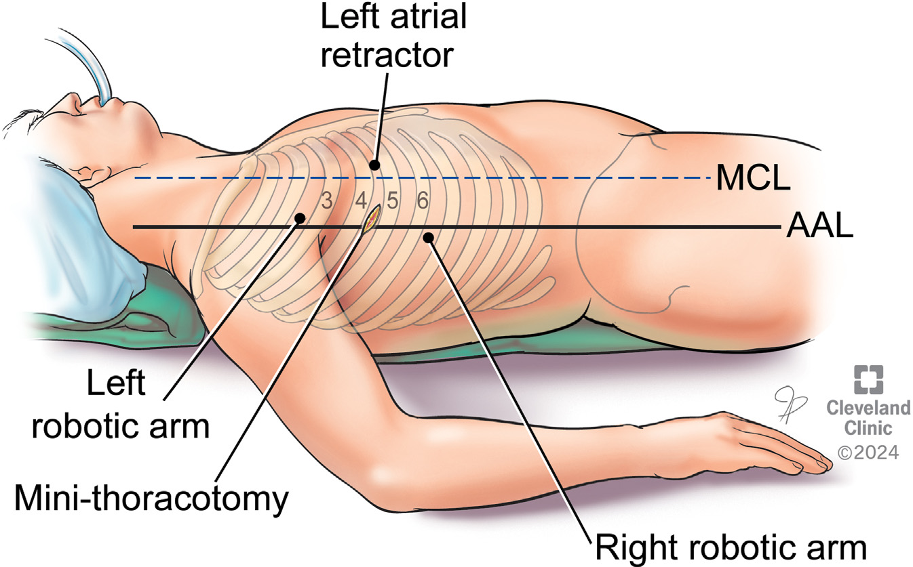
出典: Hage A, Malas T, Gillinov M. JTCVS Tech 2025;29:9-11. doi:10.1016/j.xjtc.2024.10.001. CC BY-NC-ND 4.0（図は Cleveland Clinic © 2024）（原図を改変せず掲載）。
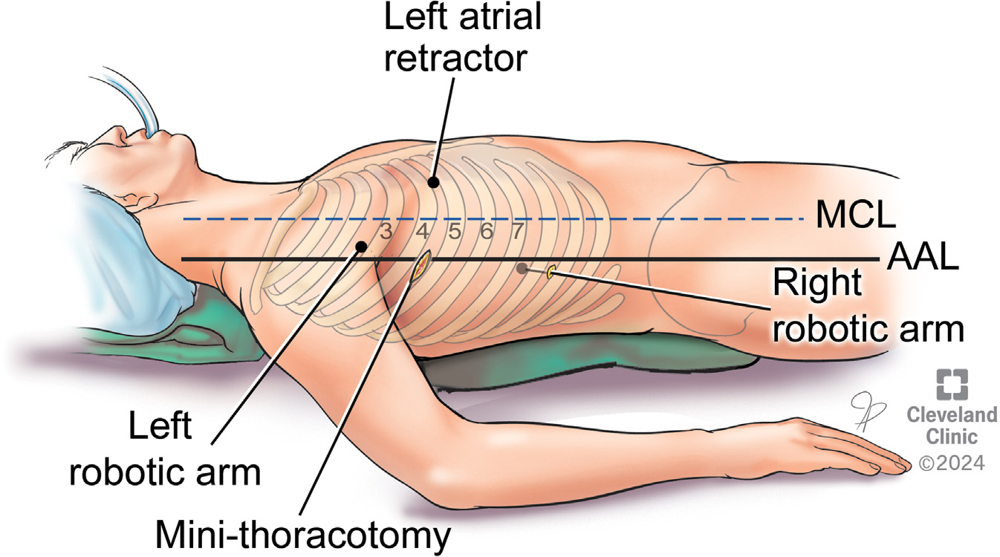
出典: Hage A, Malas T, Gillinov M. JTCVS Tech 2025;29:9-11. doi:10.1016/j.xjtc.2024.10.001. CC BY-NC-ND 4.0（図は Cleveland Clinic © 2024）（原図を改変せず掲載）。
4.2 展開 — 左房切開と retractor
心房切開は Waterston（Sondergaard）溝から入る。Patel らは実務的な注意を挙げる。
- 最初の切開は溝よりわずかに後方に置く
- 延長は下方・左房後壁側へ。SVCの背側へ上方に延ばすと閉鎖が著しく難しくなる
- リトラクターで前方に過度な力をかけると左房が裂ける → 閉鎖が困難になる
左房リトラクター（dynamic retractor）は robotic 特有の道具であり、 Palmen らは「弁尖の幾何学的歪みと操作を最小限にしつつ僧帽弁全体を展開できる」 点を robotic の中核的利点として挙げている。術中いつでも再配置できるのも利点である。
リトラクターに関する3つの Pitfall（Patel ら）：
| Pitfall | 機序と対処 |
|---|---|
| 右内胸動脈損傷 | リトラクターポートは胸骨正中の 2–3 cm 外側を走るITAに近い。指で触れながら内視鏡で見て留置する。損傷時はクリップか結紮 |
| 房室中隔の損傷 | リトラクターの先端が房室中隔を噛む。抜去後または麻酔科の弁評価で発覚。小さければ pledget 付きマットレス、大きければパッチ |
| 右室の圧排による心筋保護不良 | 前方に強く牽引したまま心筋保護液を流すと右冠動脈系が閉塞し、離脱時に右室不全になる。心筋保護液投与中はリトラクターを必ず緩める |
なお、リトラクターは終盤にも使える — 右房を圧排して左房縫合線を露出したり、 心膜を持ち上げて右室にペーシングワイヤを置くのに使える。
左室ベントについては、LVベントで左室を穿孔すると正中転換がほぼ必須になるため、 Cleveland Clinic / Northwell はいずれも左房内に basket suction を置く方式を 標準にしている（穿孔リスクを構造的に消す）。
4.3 弁形成手技 — 「術式を変えないこと」が原則
Halkos らが最も強く述べているのは、ロボットだから手技を変える必要はないという点である。
ロボット僧帽弁手術についてよくある誤解の1つは、 正中切開や非ロボット右開胸とは違う形成手技を使わねばならないというものである。 我々の考えでは、形成の中身は一切変更を要しない。
完全リングが好みならリングを、部分バンドが好みならバンドを、 結節縫合が好みなら結節を、そのまま使える。切除法も人工腱索法も同じである。 ロボットが変えるのは到達性と視野であって、形成の設計ではない。
その上で、robotic だからこそやりやすくなる領域が2つある。
(a) 弁下組織 — robotic の最大の増分
NYU の1,024例（2011–2022）は、この点を数字で示した最良のデータである。 早期（2011–2017、512例）と後期（2018–2022、512例）を比べると：
| 弁下手技 | 全体 | 早期 | 後期 | P |
|---|---|---|---|---|
| 複雑弁下手技（いずれか） | 63.3% | 52.3% | 74.2% | <.001 |
| 乳頭筋の位置移動 | 5.0% | 0.4% | 9.6% | <.001 |
| 前尖二次腱索の切離 | 56.7% | 47.5% | 66.0% | <.001 |
| 中隔心筋切除 | 5.4% | 1.2% | 9.6% | <.001 |
| 左室内異常筋束の切離 | 8.1% | 8.4% | 7.8% | .82 |
| 左室パッチ再建 | 3.6% | 2.7% | 4.5% | .18 |
| （参考）人工腱索 | 28.3% | 19.5% | 37.1% | <.001 |
手技の複雑性が上がっても罹病率・死亡率は悪化していない（30日死亡 0.6%、 正中転換 1.0%、再開胸 4.8%）。著者らはこれを 「弁下手技の実施率はチームの習熟度の代理指標である」と位置づけている。
なぜ robotic で有利になるのか。理由は2つに整理されている。 (1) カメラを左房内・僧帽弁口の近くまで進められるので弁下組織の視認性が桁違いになる、 (2) 左室のような狭い空間で微細操作ができる。 ただし弁下での結紮はロボット器械では実質不可能であり、 「経験あるベッドサイド術者が knot pusher や Cor-Knot で補完する」2術者体制が前提になる。
(b) SAM の予防 — 「左室の流入路と流出路のバランス」
Loulmet らは、SAM の考え方を2次元（後尖高／前後径比）から 3次元の左室トポロジーに更新すべきだと主張している。 左室を両trigone と心尖を通る面で流入路と流出路に分けて考え、そのバランスを保つ。 Robotic では前尖の自由縁を持ち上げるだけで流出路まで探索できるため、 前尖を離断せずに僧帽弁口から中隔心筋切除が可能である （S状中隔が目立つ症例、特に大動脈弁口面と僧帽弁口面の角度が90°に近い症例で routine 化）。 同様に、流出路に張り出す構造 — 心尖から前尖に腱索を介さず直接付く筋束、 短い二次腱索を支える大きな副乳頭筋、中隔の膨隆と心尖の間の大きな肉柱、 前方に偏位して心尖を埋める乳頭筋基部 — を切除する。
一方 Cleveland Clinic 系は切除法そのものの設計で対処する。 Cullen らの sliding valvuloplasty（後尖高 >15 mm が適応の目安）では、 古典的な弁尖基部の三角切除を行わず弁尖全体を温存し、 縫合の深さを変えることで短縮量を調節する。230例で SAM ゼロ。 ロボットでは走り縫いで適切な張力を保つのが難しいため、 結節縫合に変えたことで再現性が大きく改善したと明記している。
数字で押さえておくべき点：
- SAM は現代のシリーズでも 4〜8% 発生する（Cullen ら）。 Patel らは 4〜10%、Takahashi らの100例では 6%
- NYU の robotic 初期では、切除法での再手術を要するSAM 0.98% vs 人工腱索 0%。 それでも同院は「自分たちの手では切除の方が長期耐久性で優る」として sliding plasty / folding plasty を robotic でもより積極的に使う方向に進んだ
- 手術室で見つかったSAMの85%超は保存的処置に反応する （後負荷増加、前負荷最適化、心拍数低下、強心薬の回避）
- 残存MR ≥2+ または LVOT圧較差 >50 mmHg なら second pump run
- 独立予測因子：LVEDD <45 mm、coaptation–septum 距離 <25 mm、 基部中隔厚 >15 mm、大動脈–僧帽弁角 <120°、後尖高 >15 mm
Takahashi らの100例では SAM 6例中、2例は second pump run で後尖高を追加短縮、 4例は容量負荷のみで回復した。
(c) 腱索短縮の復権
正中切開時代に耐久性不良（Smedira ら：5年再手術回避 96%[腱索転位] vs 74%[短縮]）で 放棄された cusp-level 腱索短縮を、台湾大学（NTUH）は robotic で復活させた。 523例中68例（13%）で使用し、455例の非短縮例と比較している。
- 遮断時間 74±27 vs 75±25分、CPB 120±30 vs 120±25分 — 時間的コストなし
- 全例で形成成功、転換・置換への移行ゼロ
- 退院時 none/trace MR 95.6% vs 93.4%、短縮群に中等度以上MRなし
- 30日死亡 0% vs 0.2%、脳梗塞 0% vs 0.2%
- ICU 19±28 vs 27±25時間、入院 7.0±2.9 vs 9.5±2.7日
- 中央値3.6年の追跡で 92%がMRなし。10年 ≥中等度MR回避 95.6% vs 94.5%（P=0.66）
- 一方、新規心房細動が 33.8% vs 13.6% と多く、再挿管も 2.9% vs 0%
「3D視・振戦除去・関節付き器械があれば、センチ単位の操作をミリ単位の精度で行える」 という主張の1つの検証例である。自己組織を温存し人工物を使わない選択肢として、 前尖逸脱に対して再評価の価値がある。
なお Loulmet らは人工腱索そのものに懐疑的な立場を明示している — Gore-Tex は7割が空気の多孔質素材で、伸展性があり石灰化しうる（再手術時に 硬い小枝状に変化しているのを観察している）、そして 乳頭筋の解剖学的変異が大きすぎて安定した固定部位の選択が難しい。 「僧帽弁装置は指紋のように個体ごとに固有である」（Solomon Victor）を引いている。
(d) 用語の訂正 — 「cleft」ではない
Loulmet らの指摘は臨床的にも意味がある。後尖 scallop 間の切れ込みを慣習的に 「cleft（P1-P2 cleft など）」と呼ぶが、robotic の視野で見ると 正常のそれは組織化された腱索系に支えられた弁尖のひだであり、 前後交連と同じ構造を反復している。したがってこれは交連（commissure）であり、 房室中隔欠損における真の cleft とは別物である。 交連は複雑で高度に分化した構造ゆえに発生異常を起こしやすく、 (1) 腱索の部分的/完全癒合、(2) 弁輪と乳頭筋頭を結ぶ石灰化バンド、 (3) 交連の層形成不全による左室壁への線維性/石灰化バンドの癒着 — という スペクトラムを呈する。多くは交連の可動性制限によるtetheringを起こす。 対処は病的交連の三角/四角切除と対応部分の縫合である。
4.4 弁輪縫縮 — robotic 特有の工夫が最も進んだ領域
弁輪縫縮はロボット僧帽弁の中で最も時間を食う工程であり、 だからこそ各施設が独自の縫合法を開発した。共通する動機は 「結節縫合＋個別結紮は、糸の交換・結紮・ベッドサイド術者への依存で時間がかかる」である。
3つの流派
| 方式 | 施設 | 要点 |
|---|---|---|
| semi-continuous 3本縫合 | Cleveland Clinic（Cullen ら） | 各運針がバンドを貫通してから弁輪、再びバンドへ。結節法の力学を保ったまま連続化。3本の糸はあらかじめ 8個の結び目を作っておく（11 cm / 10 cm / 8 cm、tail 1.5 cm） |
| continuous wrapping | 大阪公立大（Noda / Takahashi ら） | 両trigoneで固定し、リングを貫通せず外周を巻き込むように連続縫合。弁輪に対し垂直に運針し、弁輪→左房へ抜ける |
| 走り縫い（horizontal mattress） | Cleveland Clinic（Mick ら） | 柔軟バンドを3本の pre-knotted 糸で。内側trigone→後尖中央、そこから外側trigone、外側trigoneに1本 |
Cullen らはリングを「貫通せず」に糸を回す方式は remodeling 効果を損ないうると 明示的に批判しており、ここは流派が対立している。一方 Noda らの wrapping 法は 581例中168例のデータで、LCX損傷ゼロ・リング離開ゼロ、 1年/3年の中等度以上MR再発が 1.8% / 2.2%、さらに 581例全体の多変量解析で 術後1年の平均圧較差を有意に低下させた（平均比 0.802、95%CI 0.728–0.884、P<.001）。
いずれの流派も一致している点が2つある。
- 一針ごとに弁輪を掴むこと（左房壁ではなく）。これが遅発性離開と Cx 損傷の両方を防ぐ
- 走り縫いへの移行は時間短縮に効く — Cleveland Clinic は導入時に 大動脈遮断時間の中央値が19分短縮した
リング／バンドの選択
Cleveland Clinic は SAMリスクにかかわらず柔軟な部分後方バンドを routine に使う。 理由は3つ挙げられている。
- 拡大は主に後方弁輪に起こる。長期耐久性はリングの種類で変わらない
- 完全リングは前方弁輪にも運針を要し、大動脈弁損傷という小さいが重要なリスクが加わる。 さらに機能的僧帽弁狭窄の危険因子でもある
- 完全リングは SAM を起こしやすい（特に undersize したとき）
サイズ選択は前尖面積を用い（trigone間距離ではなく）、変性疾患では大きめに振る。
柔軟バンドには robotic 特有の実利もある — 扱いやすく、 何度も針を通しても針が鈍りにくい（semi-continuous 法では同じ針で多数運針するため重要）。
縫縮の「し過ぎ」を数字で管理する — plication rate
大阪公立大の Takahashi らは、術前3D-CT から後方弁輪長（PAL）を実測し、 plication rate =（人工リングの後方側長）/（自己PAL）という指標を導入した。 100例の結果：
- 平均 plication rate は 0.68で、リングサイズによらずほぼ一定
- 術前CTのCom–Com計測によるリングサイズ予測精度 0.99±0.08（術中計測とほぼ一致）
- plication rate × リングサイズ <19.4 が、術後平均圧較差 ≥5 mmHg の予測因子 （感度81%・特異度86%、AUC 0.83）。BSA補正版のカットオフは 11.1
- 実際、plication rate <0.60 かつ 32 mm 未満のリングで平均圧較差 3.7 mmHg
- ただし中等度以上MR再発には影響しない（3年 event-free 97% vs 96%、P=0.73）
- plication が少ない方が遠隔期のEF回復が良い（P=0.0268）
実務的な読み方はこうなる。リングサイズだけ、あるいは縫縮率だけを見ても足りない。 「小さいリング × 強い縫縮」の組み合わせが機能的狭窄を作る。 後方弁輪が前方に比して著しく拡大している症例で、無理に <0.6 まで縫縮する必要はない。
4.5 難症例
(a) 重症MAC — 最大の争点
2.5節で触れたとおり、ここは施設間で結論が正反対である。
Cleveland Clinic（Gillinov ら）：重症MACでは正中切開を選ぶ。 「一部にはロボットで成功した報告があるが、我々はこの状況では完全正中切開を選好する」。
NYU（Loulmet ら）：ロボットこそが正しい道具（the right tool for the right job）。 MACを残して周囲を縫う手技は「手術を単純に保ちAV groove 離開を避ける」という 理解可能な動機に基づくが、過去の報告で成績が標準以下だった。 だから完全切除とAV groove再建を標準にする。
Loulmet らが MAC をこう描写しているのが理由の核である。
MAC は弁輪に沿って走る、縁の整った曲がった円柱として直感的に誤解されている。 あたかも固い錨のように、その周囲に安全に針をかけられるかのように思える。 しかし実際には根茎（rhizome）のように予測不能な方向に発達し、 石灰化の程度や芯の液状化により部分ごとに硬さが違う。 縫合の支持組織として依存できる構造ではない。
10の技術原則（Loulmet / Hage）：
| # | 原則 |
|---|---|
| I | 弁評価の段階で、石灰バーの弁輪・弁尖・左室壁・左房への進展を余さず可視化する |
| II | 石灰バーは反応性の線維層に覆われている。剥離面は石灰と線維層の間。電気メスなら心筋側に線維組織を最大限残せる。en bloc 切除でデブリの飛散を減らす |
| III | 後尖の三次腱索を切除し乳頭筋の心筋付着を切離する。これで後尖を中隔側へ倒せ、AV groove と左室後壁の視野が open になる |
| IV | 左房と左室の心筋断端の間に心外膜が見えたらAV groove離開。狭く断端が良好なら pledget 付きマットレスで一次縫合。10 mm超・断端が脆弱・左室腔や弁口が小さい場合はパッチ |
| V | 左室側の運針は 2-0 Ethibond＋pledget。compact muscle を確実に噛みつつ貫壁にせず、AV groove の心外膜を含めない。肉柱には頼らない |
| VI | Cor-Knot でパッチを左室側に固定するときは、ベッドサイド術者が1つずつ結び目を目視し、同時にコンソール術者がパッチを左室断端に強く押しつける。これがないと圧着不足か断裂になる |
| VII | 一次縫合の場合、左室断端のマットレス糸を左房断端にも通してから温存し、annuloplasty device の固定糸として使う。つまりAV groove の閉鎖は弁輪縫縮の結紮で完成する。結紮時はコンソール術者が device を左室基部方向に押し込んで左室側の張力を逃がす |
| VIII | パッチ閉鎖では、左房断端への第2列（2-0 Ethibond、pledgetなし）が要る。左房・左室の縫合線間距離は離開の程度に比例させるが、パッチは収縮しないので術後EF低下を避けるためできるだけ小さく保つ |
| IX | 左房縫合線より上に残したパッチのrim（5–7 mm）で後尖を再固定する。後尖高が足りない部位ではこの rim を高くして補える |
| X | 複数の経験ある術者が戦略と実行を批判的に検証すること |
成績（NYU）： 初期の連続500例の孤立ロボット僧帽弁形成のうち MAC は約13%。 MAC切除は94%で達成され、うち1/3 がウシ心膜パッチでの弁輪再建を要した。 短期成績は軽度超のMRからの解放 100%、脳梗塞ゼロ、ペースメーカー植込みゼロ、30日死亡 3%。 続く 1,441例のコホートでは、左室パッチ ventriculoplasty 群の形成率 80%超 vs 非パッチ群 98%、 術後脳梗塞・30日死亡・3年生存に有意差なし。
決定的な一文がある — 「MACの広がりが適応を決めるのではない。 この比較的長時間の手術に耐える生理学的予備能があるかどうかが決める」。 そして「ロボットとMV手術の双方に高度な専門性をもつチームに限定すべき」と釘を刺している。
MAC で「形成できるか」を決めるのは、MACの有無ではなく 最も変性した部分を切除した後に残る柔軟な弁尖組織の量である。 Barlow弁では弁尖が本来大きいので、通常は足りる。逆に MACが単独でMSを起こしている症例は、柔軟な弁尖が不足していて形成の見込みが乏しい。
(b) TEER後
M-TEER の single-leaflet device attachment（SLDA）は EVEREST の 11.0% から EXPAND 1.9%、EXPAND G4 1.7% へと低下したが、ゼロではない。 STS データベースでは 2014–2020 に M-TEER 15,000例中 524例が初回の僧帽弁手術に至り、 その95%が形成ではなく置換だった。
DeLay らの症例（83歳女性、TEER 6週後、後尖 flail・クリップが前尖のみに付着）は robotic でクリップ抜去＋P2三角切除＋34 mm バンドを行い、 術当日抜管・術後4日で退院。同院の3年間で SLDA 5例中、robotic 置換3例・形成2例。 形成できるかを決めるのは、原疾患の形成可能性、TEER後の線維化・硬化の程度、 術者の高度な形成手技の習熟度である。
(c) 再手術（前回手術あり）
University of Chicago の 1,834例中 105例（6%）が再手術例（2013–2024）。 心内 60例（僧帽弁49・大動脈弁4・三尖弁3・cryomaze 2・粘液腫1・ASD 1）、 心表面 45例（TECAB 31・心膜切除4・左室リード7 ほか）。
| 指標 | 心表面群 | 心内群 |
|---|---|---|
| 平均STSスコア | 4.6% | 3.6% |
| 手術時間 | 260±101分 | 237±68分 |
| 正中転換 | 1（2%） | 1（1.6%） |
| 術中輸血 | 8.9% | 35% |
| ICU / 入院 | 1.23 / 2.75日 | 1.76 / 3.75日 |
| 30日死亡 | 2%（1/45） | 1.6%（1/60） |
| 出血再開胸 | 0% | 3（5%）— 全例ロボットで対処、転換なし |
| 平均37.5ヶ月での全死亡 | 20% | 11.6% |
全体では 30日死亡 1.9%（O/E 0.5）、転換 1.9%。 比較対象として、Bianco らの3,000例超の傾向スコア解析での再手術心臓手術は 30日死亡 8.1%・1年 16.4%・再手術率 14.1%・ICU 98時間超である。
技術的な要点：
- 心停止法の柔軟性が要る。開存ITAグラフトがある症例では低体温細動下停止が有効 （大動脈弁が健常でLV機能が正常な場合）
- 大動脈遮断は IntraClude バルーンまたは経胸壁クランプ
- 心膜は緩く連続縫合で閉じ、癒着形成を減らす
- 再TECAB で RITA を使う場合、腕頭静脈の背側を通して前縦隔脂肪で覆い、 将来の再開胸時の損傷を防ぐ
- 剥離した肺表面には Progel を塗布して air leak を減らす
- 再TECAB 31例のうち 20例（65%）で未使用の RITA を新規グラフトとして使用
Cleveland Clinic も「前回正中切開は経験ある術者なら可、 前回右開胸は禁忌」という立場は共通で、 前回正中切開例では上行大動脈のバルーン遮断＋内頸静脈からの冠静脈洞カテーテルによる 順行性/逆行性心筋保護を有利としている。
4.6 Pitfall — どこで壊れるか
Northwell の Patel らは術者ではなくベッドサイド助手の視点から 全工程の合併症を整理している。基本原則は1つ、「予測によって合併症を避ける」。
(a) 左回旋枝（Cx）損傷 — 最も恐れられる
発生率は報告上 0.15〜4.0% だが、著者らは大幅な過少報告とみている。 van der Merwe らは 1967–2022 の 49報告・89例を集積した。
| 項目 | 内訳 |
|---|---|
| アプローチ | 正中 76例（85.4%）／内視鏡 12例（13.4%）／ロボット 1例（1.1%） |
| 機序 | 完全閉塞 35例（39.3%）、残りは部分閉塞・裂傷など |
| 診断のタイミング | 術中診断は 48.3% にとどまる（残りは術後・遅発） |
| 治療 | rescue PCI 40例（44.9%）、ほかCABG・縫合のやり直し |
| 30日死亡 | 全期間 20.2% → 2011–2022 の報告では 16.7% |
解剖：Cx は通常、左心耳基部と前交連の間を、僧帽弁の弁尖–弁輪付着部から 3–4 mm の距離で走り、後方弁輪に向かうにつれて次第に離れる。 CTAでの実測では 左優位 3.0±2.1 mm・両側優位 4.6±2.3 mm・右優位 5.9±3.2 mm。 ただし右優位でも20%超が 3 mm 未満であり、優位性だけでは安心できない。
大阪公立大の100例（3D-CTで実測）では、 48%が mCAD <3 mm、6%が <1 mm。左優位型で最短だった。
リスク因子（画像・臨床）：再手術、重症後方MAC、後尖の破壊性感染、 Cx の走行異常、Cx–弁輪距離 <3 mm、左優位/両側優位。
予防：
- 針の進入角（弁輪に対して90°）・弁輪と平行な方向・適切な深さ・ 針のカーブに沿った抜針 — van der Merwe らが図で示す4原則
- 弁輪を掴む（左房壁ではなく）、7時方向から先が最も危険（Cullen ら）
- mCAD <3 mm の区間は運針を浅く・細かいピッチで（Takahashi ら）。 この方式で 100例／168例のいずれのシリーズも Cx損傷ゼロ
- 広範な四角切除・大きな sliding plasty・極端に小さいまたは大きいリングを避ける
- 高リスク例では柔軟リングを使い、Caruso らは前交連〜P1 の弁輪縫合を 58% で省略した
- ただし Chauvette らは「Cx損傷を恐れるあまり不十分な形成をしてはならない」とし、 前外側trigone の安定化を耐久性の基本原則として譲らない立場である
診断：離脱困難、ST上昇、難治性心室性不整脈、 TEEでの左室側壁の局所壁運動異常、酵素上昇。 術中に疑ったら TEE と冠動脈造影で機序を即座に確定する。
治療の分岐：
- 部分閉塞・血行動態安定・搬送時間が短い → PCI
- 完全閉塞・不安定・カテ室へ搬送できない → 緊急CABG（鈍縁枝へSVG）
- 低侵襲で正中転換が困難／望ましくない → 弁輪縫合のやり直し（14報告で記載あり）
- ハイブリッド手術室があればその場で造影・PCIができ、虚血時間を短縮できる
なお PCI の失敗例も報告されている。Bargagna らの 6,501例中10例では、 PCI 6例のうち3例で重篤な合併症（冠動脈破裂2・バルーン拡張不良1）が起き うち2例が緊急CABGを要した。一方、即時CABGを行った3例には合併症がなかった。
(b) ポートサイト出血
見過ごされがちだが頻度の高い出血源であり、robotic 特有の対処法が育っている。
Patel らの標準対応は段階的である — 直視下の確認 → 電気凝固・用手圧迫 → それでも止まらなければポート創を延長して出血源を同定し、 電気凝固・oversew・hemoclip。止血剤はまれにしか使わない。 確認は単肺換気下で内視鏡で全ての操作部位を点検する（このとき SpO2 に注意）。
Qi らはバルーン付き coudé カテーテルによる tamponade を積極的に使う方式を 報告している（University of Chicago、2016年8月–2022年7月のロボット僧帽弁 320例から 正中転換5例を除いた 315例）。焼灼で止まらないポートサイト出血に対して バルーンで tamponade するプロトコルを導入し、その前後を比較した。 バルーンは人工心肺離脱中に出血ポートに当てておき、通常はプロタミン投与後に抜く。 高度の凝固障害がある稀な場合は挿入したままICUへ運び、凝固障害が改善してから抜く。
| 指標 | プロトコル前（127例） | バルーン群（188例） | P |
|---|---|---|---|
| 出血による再手術 | 4.7% | 0% | 0.004 |
| ペースメーカー植込み | 3.9% | 0.5% | 0.04 |
| 術翌日の胸腔ドレーン抜去 | 70% | 83% | 0.01 |
| 術中/術後の輸血率・在院日数 | 同等 | 同等 | NS |
なお本文は購読誌のため未取得で、抄録に明記された数値のみを引いている。
予防面では、Cleveland Clinic 系の記載が具体的である。 basket vent の入り口を作業孔のすぐ後方（第4肋間）に置くのは、 「終盤に出血しても対処しやすい位置だから」という理由で選ばれている。 また角度をつけて刺入する angiocath は肋骨の上縁を歩かせてから胸腔へ進める。
同院の再開胸率は 2.5% → 1.3% に低下し、 ほぼ常に右胸から対処できるとしている。ポート部感染は「きわめてまれ」。
見落としやすい出血源として肝臓が挙げられている — 横隔膜牽引糸による潜在性の肝出血は、欧州でのロボットプログラム立ち上げ時に 3.5% 報告された。対策は運針法にあり、中心腱を確認し、 まず肝臓を避けるごく浅い針を1回かけてテントアップしてから2回目に十分な深さで掛ける、 そして牽引はゆっくり穏やかに。
(c) 左房・AV groove の損傷
| 損傷 | 発覚のしかた | 対処 |
|---|---|---|
| 左房後壁の損傷 | 左房壁の石灰除去をやり過ぎた結果。遮断解除後に多量出血 | 再度CPB・再停止し、左房内から修復する（心外からは推奨されない） |
| AV groove 離開 | 遮断解除・離脱時に鮮紅色の血液が術野に溢れる。後方弁輪の過剰な石灰除去、または過大な人工弁の植込みで深い弁輪縫合が裂ける | 再CPB・再停止・正中転換。左房を再切開して人工弁を摘出し、自己または牛心膜の大きなパッチで修復 |
(d) 心筋保護
ロボットでは心筋温プローブが使えず（右室は見えにくく左室はほぼ見えない）、 氷による局所冷却も小開胸では非現実的・完全内視鏡下では不可能である。 したがって：
- 複雑な形成が予想されるなら全身冷却を考慮する （Cleveland Clinic は肺高血圧例で 30 ℃ への冷却を routine にしている）
- 心筋保護液の注入圧と大動脈基部圧を必ず把握する（遮断鉗子・エンドバルーンの 移動を検知できる）
- del Nido が第一選択になりやすい（保護時間が長く、通常1回投与で済む）
- 十分な脱血を保たないと心筋温が上がる。右室が膨隆したら再投与が必須
- 前述のとおり、心筋保護液投与中は左房リトラクターを緩める
大動脈弁閉鎖不全が mild を超えるなら順行性が読めなくなる。 Gillinov らは内頸静脈からの冠静脈洞カテーテルによる逆行性併用で対応し、 Czesla らは中等度以上のARでは低侵襲アプローチ自体を選ばない。 いずれの立場でも、遮断解除／バルーン脱気の前に僧帽弁を越えてベントを置くことは共通で、 AR があるときは特に重要とされる。
(e) 片側肺水腫（UPE）
右開胸の僧帽弁手術に特有の、まれだが破滅的な合併症。 長時間CPBからの離脱の数分〜数時間後に、著明な低酸素・高炭酸ガス血症・ 肺高血圧・血行動態不安定として現れる。ECMO や一酸化窒素吸入もしばしば無効で、 急速に多臓器不全に進行する。 予防はCPB時間の短縮・圧損傷の回避・輸血の制限・肺の虚脱時間の最小化である。
(f) da Vinci Xi のトラブル
| 事象 | 対処 |
|---|---|
| recoverable fault（LED 琥珀色） | 再起動不要。エラーを読み、原因を除去して "resume use" |
| non-recoverable fault（LED 赤） | 内視鏡と全器械を留置したまま電源ボタンで落とす。視野は一時的に失われる。琥珀色になったら再起動 |
| EndoWrist の故障 | instrument release key（全ロボット室に peel pack で常備）で解放。緊急停止 → キーを1/4回転反時計回り → 顎が開いたら通常どおり抜去 |
| guided tool exchange の喪失（LED 青） | 器械を目視で追跡して作業域まで戻す |
| カメラの曇り | 片眼のまま操作しない（モニタは曇っていない側を表示していることがある）。必ず清拭を要求する |
器械の挿入は常に直視下で。特に左胸（心拍動下）では盲目的な挿入が 心臓の穿刺損傷につながる。カメラを抜くときはいったんポート内に引き込んでから。
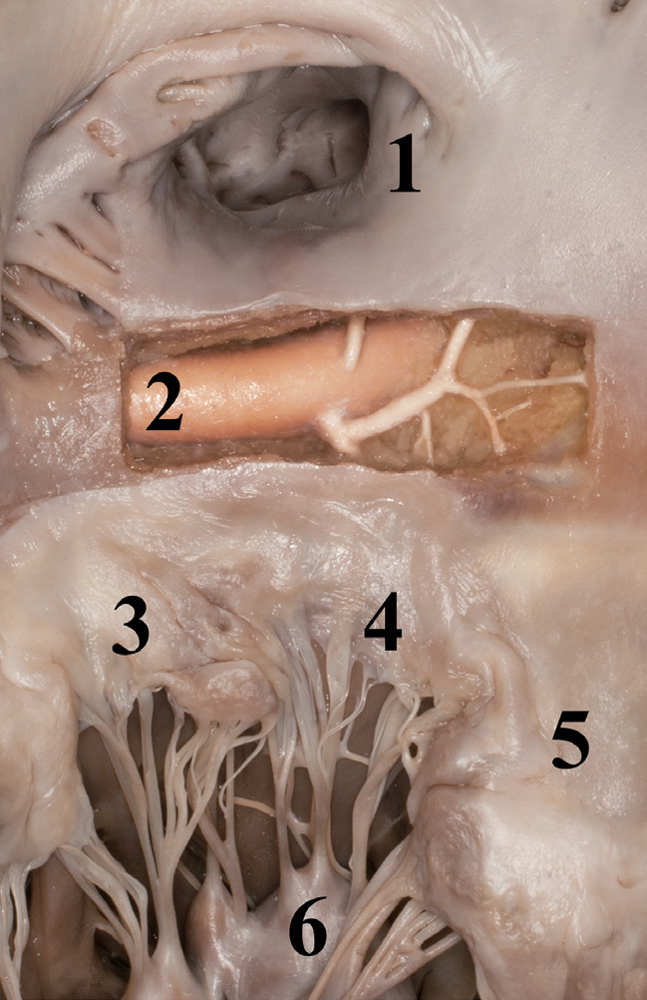
出典: Czesla M, et al. Ann Cardiothorac Surg 2013;2(6):849-852. doi:10.3978/j.issn.2225-319X.2013.07.26. Ann Cardiothorac Surg（AME）（原図を改変せず掲載）。
5. 大動脈弁（RAVR）
僧帽弁が「確立」なら、大動脈弁は「新興だが最も速く動いている領域」である。 そして本レビューの中で唯一、術式の設計思想そのものが主題になる章でもある。
5.1 なぜ「右側方（transaxillary）」なのか
ロボットAVRの試みは新しくない。2005年 Folliguet らが第3肋間の 7–8 cm 前方開胸でロボットを部分的に使い、5例で中止している。 2018年に Balkhy らが sutureless 弁を用いた右前方RAVRを進めた。
現在の主流である右側方（transaxillary）アクセスは、 West Virginia University（WVU）が 2015–2019年の屍体実験で 「従来のステント付き弁を使った右側方ロボットAVR」の実行可能性を検証し、 2019年に直視・胸腔鏡下の非ロボットAVR 10例（3–4 cm 右側方開胸）で 手技を洗練させたうえで、2020年1月に最初の完全ロボットRAVRを行った、という経緯で確立した。
側方を選ぶ理由は4つに整理される。
| 理由 | 内容 |
|---|---|
| 肋間が広い | この領域の肋間腔は有意に広く、肋骨切除も強い開大も不要。周囲組織の外傷が減り、人工弁の搬入も容易 |
| 筋温存 | 大胸筋の後方を通って肋骨まで到達する。胸壁の力を保ち、疼痛と機能障害を減らす |
| "down-under" の視軸 | 側方から見ると人間工学的に有利な角度になり、弁切除と人工弁の位置決めの方向が合う |
| プラットフォームの同一性 | ロボット僧帽弁と同じ 3 cm 作業孔・同じポート配置。これが本章最大の主張（5.5節） |
対して、Chicago（Balkhy / Kitahara ら）は完全内視鏡（ポートのみ、小開胸なし）で、 rapid deployment 弁を使う路線を採る。両者はポート配置もドッキング方向も違う （5.2節）。
5.2 ポート配置 — 2つの流派
(a) WVU 型：右側方 transaxillary（3 cm 作業孔、ロボットは患者左から）
体位は仰臥位＋右肩甲骨先端の下にロール、右腕は上腕をできるだけ垂直にして後方へ、 台の縁より下に吊る。これで右腋窩が最大限に開く。
肋間の同定には Louis角を使う。加えて CT の冠状断で 心尖から大動脈弁中央を通って右肋骨郭へ引いた直線が、切開位置の指標になる。
| ポート | 位置 |
|---|---|
| 作業孔（Arm 2＝カメラ） | 第4肋間・前腋窩線（腋窩前ひだの後方）、3–4 cm |
| Arm 1 | 作業孔から見て10時方向・第3肋間（鎖骨中線の 3–4 cm 後方） |
| Arm 3 | 1時方向・第5肋間（鎖骨中線の前方） |
| Arm 4 | 4時方向・第6肋間 |
| 経胸壁遮断鉗子 | 第2または第3肋間（前腋窩線〜中腋窩線）、大動脈基部ベントより遠位 |
| 左室ベント | 作業孔の後方の別 stab 創から、右上肺静脈経由 |
| 心膜牽引 | 後腋窩線に3本外出し（Endo Close）。肺と作業孔を隔てる「棚」を作る |
Arm 1 と Arm 4 を作業孔の2肋間上下に置くと、ベッドサイド術者の作業空間が広がる。 器械配置は Arm 1 = DeBakey、Arm 2 = 30°上向きカメラ、Arm 3 = long tip forceps、 Arm 4 = 曲剪刀／大型持針器。遮断鉗子はやや凸側を頭側に向けて Arm 1 との干渉を避ける。
心膜は右横隔神経の 3–4 cm 前方で切開する。 そして大動脈基部の展開のために独特の工夫がある — 右心耳基部の大動脈（内側）側に 4-0 pledget 付きポリプロピレンを浅くかけ、 両針を心膜と横隔膜に通して牽引する。これで弁と弁輪が遮るものなく見える。
(b) Chicago 型：完全内視鏡（8 mm ポート主体、ロボットは患者左から）
Kitahara / Balkhy らの配置は僧帽弁の完全内視鏡手技をそのまま延長したものである。
- 肺を虚脱させ、第3肋間に Veress 針を刺して CO2 送気
- 第3肋間・前腋窩線に 8 mm カメラポート（最初の1本だけが盲目的、以降は全て直視下）
- 第5肋間・傍胸骨に 8 mm の dynamic atrial retractor 用ポート
- 第6肋間・後腋窩線に右アーム、第2肋間・鎖骨中線に左アーム
- 最初のカメラポートを抜き、切開をわずかに延長して rapid deployment 弁のサイザーを通せるようにし、 XXS の soft tissue retractor を置いて作業孔とする
- 新しいカメラポートを作業孔の前方・同じ第3肋間に置く
- ロボットは患者の左側からドッキング
Chicago 型では大動脈と肺動脈の間を完全に剥離してから、 第2肋間から経胸壁遮断鉗子をその間隙に進めて遮断する。
なお 4章で述べた僧帽弁の配置（ロボットは患者右から）と、 RAVR（ロボットは患者左から）でドッキング方向が反転する点は、 2.4節で示したとおりである。
(c) 台湾・オーストラリアの独立検証
RAVR の再現性を評価するうえで重要な事実がある。 世界のRAVRプログラムの大半は WVU の直接指導を受けているが、 台湾（NTUH）とオーストラリアの2施設は、公表された術式に厳密に従うことだけで 独立して成功に到達した。両者が共有する戦略は 「牽引糸で大動脈基部を回転させ、弁輪の視野を良くする」という一点である。 自施設の方法と WVU 法を比較したところ中核概念は驚くほど類似していた — 標準化されたポート配置、構造化された展開手技、再現性と効率の重視。
そして両者の成功の共通の土台は、胸腔鏡下心臓手術とロボット僧帽弁形成の経験である。 ロボット僧帽弁プログラムが RAVR への決定的な踏み石になった、と明記されている。
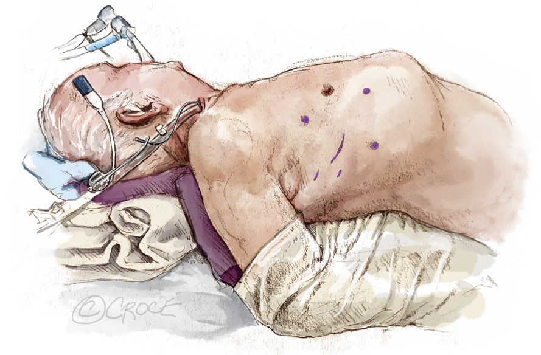
出典: Wei LM, Badhwar V. Ann Cardiothorac Surg 2025;14(3):228-234. doi:10.21037/acs-2025-ravr-12. CC BY-NC-ND 4.0（原図を改変せず掲載）。
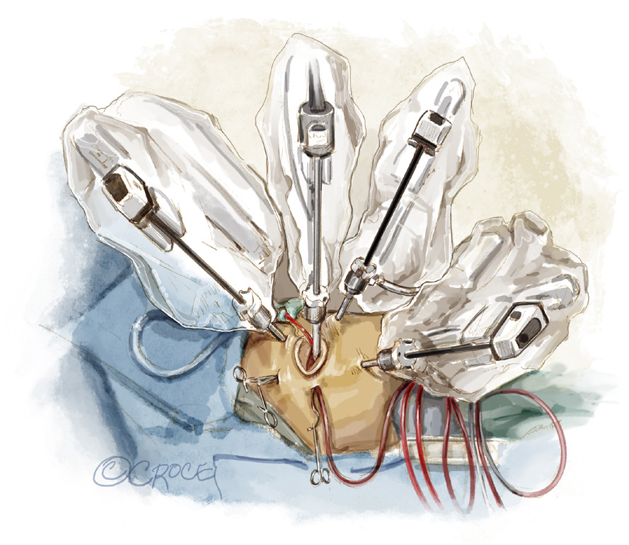
出典: Wei LM, Badhwar V. Ann Cardiothorac Surg 2025;14(3):228-234. doi:10.21037/acs-2025-ravr-12. CC BY-NC-ND 4.0（原図を改変せず掲載）。
5.3 大動脈切開・弁の出し方・視野最適化
心筋保護の分岐が最初に来る
中等度未満のAR → 経胸壁遮断のうえ大動脈基部から順行性（冷血あるいは micro cardioplegia）。左室ベントを吸引にし、心エコーで左室の膨隆を、 近位大動脈で圧上昇を監視する。 中等度以上のAR → 先に大動脈を切開し、冠動脈口から直接（ostial）投与する。
WVU は逆行性心筋保護を使っていない。理由は 「ロジスティクス上の理由に加え、Cox-Maze III の lesion set では 心表面の冠静脈洞ラインを引く必要があるという解剖学的理由」である。
大動脈切開は "hockey stick"
洞管接合部の約2 cm 遠位から始め、内側・頭側へ、そして 外側・尾側へ非冠尖洞の中央まで延長する。 Chicago 型（rapid deployment）では順行性心筋保護針の刺入部で横切開を置く。
根部拡大を予定する場合は、この切開を非冠尖洞の中点から弁輪まで延長する （modified Nicks）。
弁切除 — 「石灰を切らない」
WVU の記載で最も具体的なのはこの点である。
剪刀の刃は石灰を切るのではなく、石灰と弁輪の間の層を見つけて石灰を持ち上げるために使う。
そして「全例で、ロボット曲剪刀が rongeur を必要とせずに弁輪まで完全かつ正確に デブライドできる精度と器用さを提供した」と述べている。 ベッドサイド術者による吸引と入念な洗浄が、デブリの完全除去に必須である。
縫合と人工弁の搬入
- 心室側から周方向に結節縫合（2-0 braided polyester）を、 左–非冠交連から時計回りに置く
- 非冠尖弁輪では左手（DeBakey のみ）で運針すると、非冠尖洞との 不用意な干渉を避けられる
- サイジングは通常のSAVRサイザー（Chicago 型では rapid deployment 用の modified sizer）。術前画像を参照して PPM を防ぐ
- 糸は体外で人工弁の縫合輪に通し、人工弁はしばしばホルダーから外して 作業孔から搬入し、ロボット補助で慎重に降ろす
- 固定は long Cor-Knot
- 大動脈切開は 4-0 ポリプロピレンの2層縫合。 遮断解除の前に順行性冷血/心筋保護液を流して縫合線をテストする
Chicago 型（rapid deployment）では、 各尖のナディアに3本の stay suture を置いて作業孔から外に出し、 体外で弁に通してから弁を搬入し、位置確認後に30秒バルーン拡張する。 サイザーを通すために左アームポートを一時的に抜いて Hegar 拡張器（12–19 mm）で 切開を拡げ、soft tissue retractor を置くという手順を取る（併施例の記載）。
最大の切開が 20 mm ——これは弁のサイザーを入れるためだけに必要な寸法であり、 「デバイス、特にサイザーの設計改良でさらに小さくできる余地がある」と述べられている。
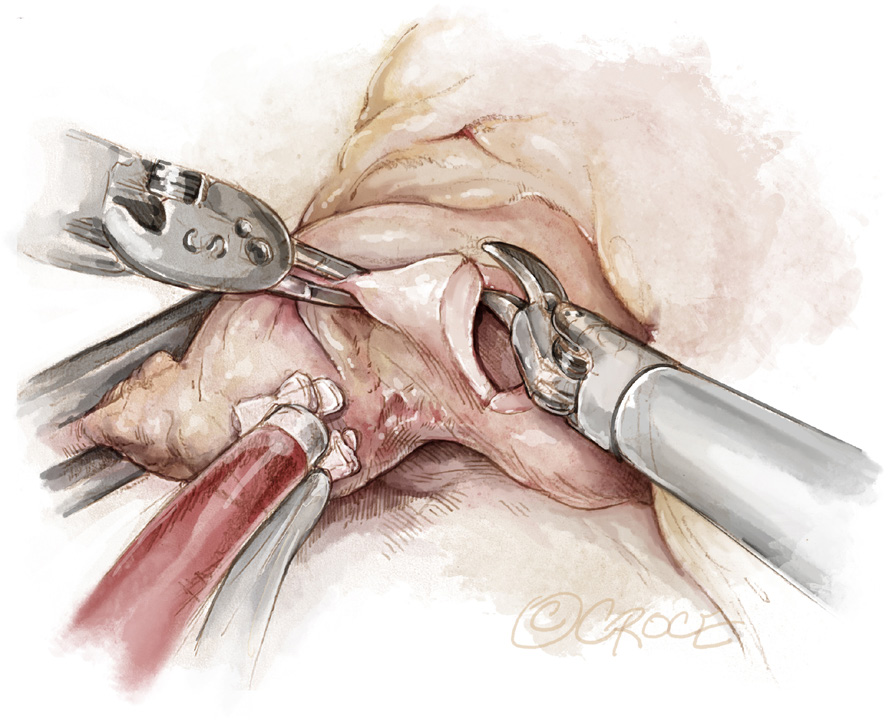
出典: Wei LM, Badhwar V. Ann Cardiothorac Surg 2025;14(3):228-234. doi:10.21037/acs-2025-ravr-12. CC BY-NC-ND 4.0（原図を改変せず掲載）。
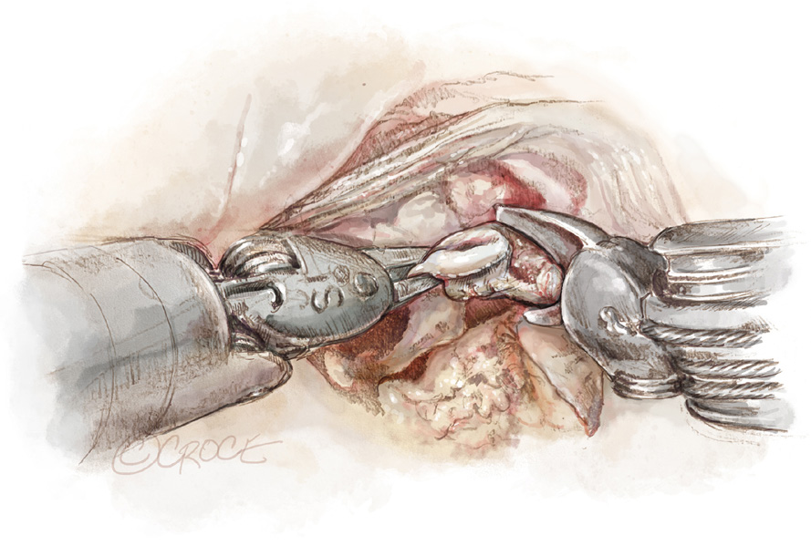
出典: Wei LM, Badhwar V. Ann Cardiothorac Surg 2025;14(3):228-234. doi:10.21037/acs-2025-ravr-12. CC BY-NC-ND 4.0（原図を改変せず掲載）。
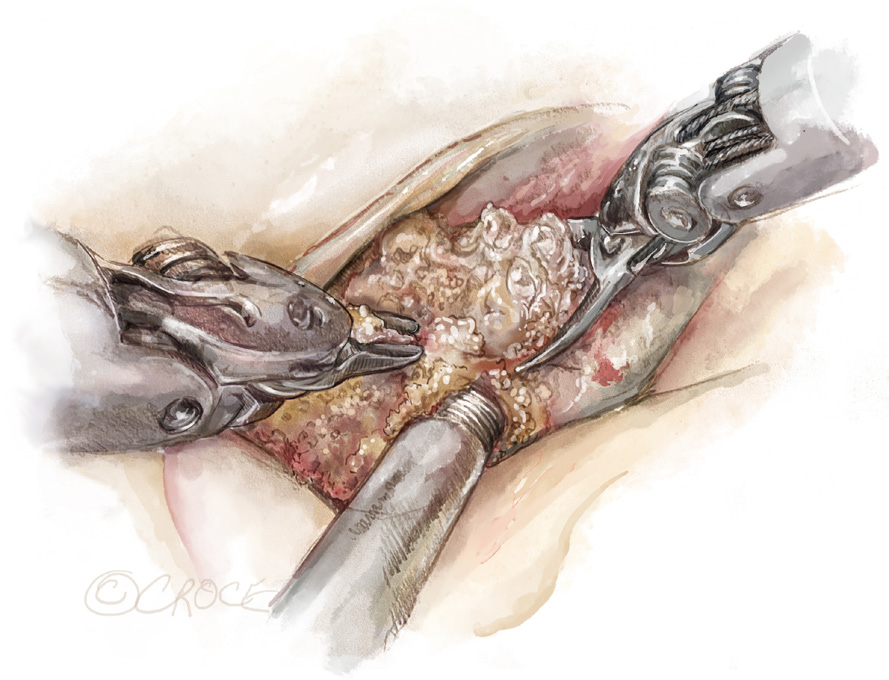
出典: Wei LM, Badhwar V. Ann Cardiothorac Surg 2025;14(3):228-234. doi:10.21037/acs-2025-ravr-12. CC BY-NC-ND 4.0（原図を改変せず掲載）。
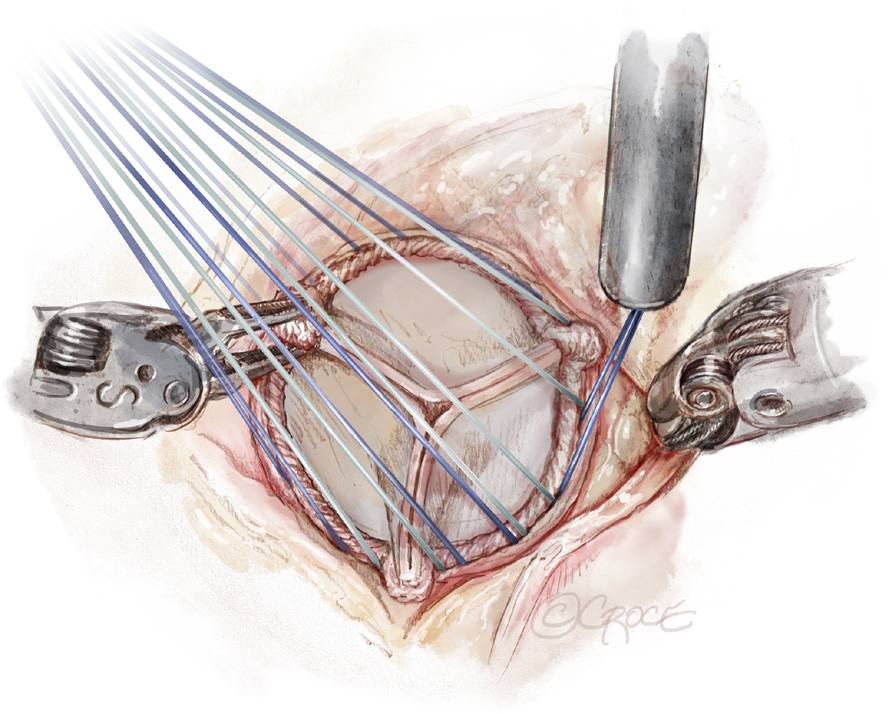
出典: Wei LM, Badhwar V. Ann Cardiothorac Surg 2025;14(3):228-234. doi:10.21037/acs-2025-ravr-12. CC BY-NC-ND 4.0（原図を改変せず掲載）。
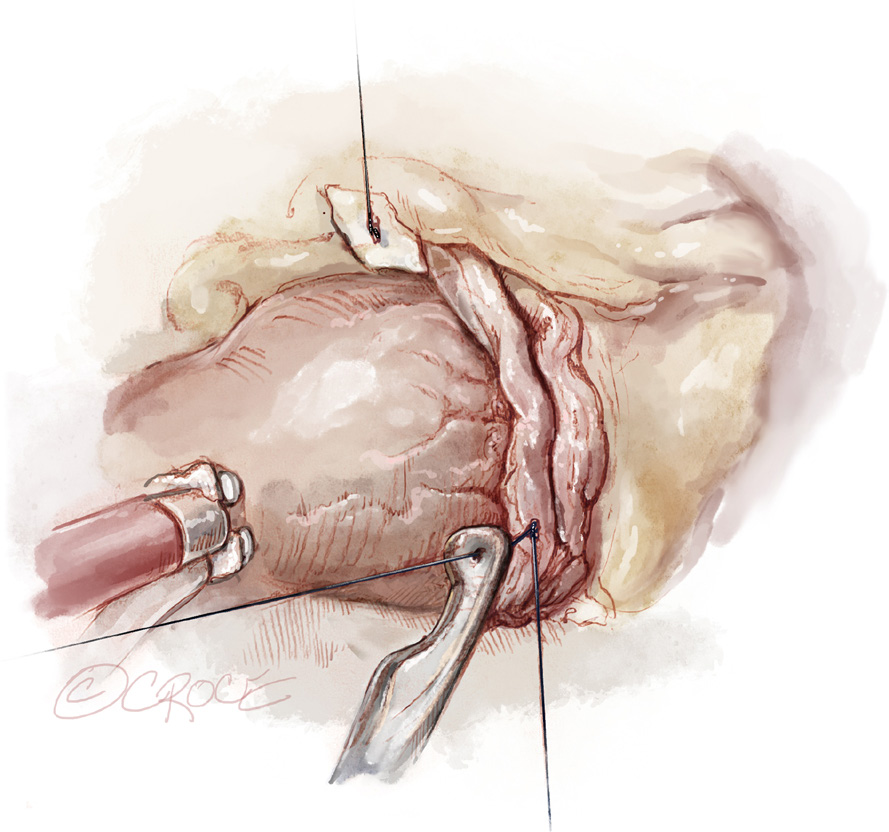
出典: Wei LM, Badhwar V. Ann Cardiothorac Surg 2025;14(3):228-234. doi:10.21037/acs-2025-ravr-12. CC BY-NC-ND 4.0（原図を改変せず掲載）。
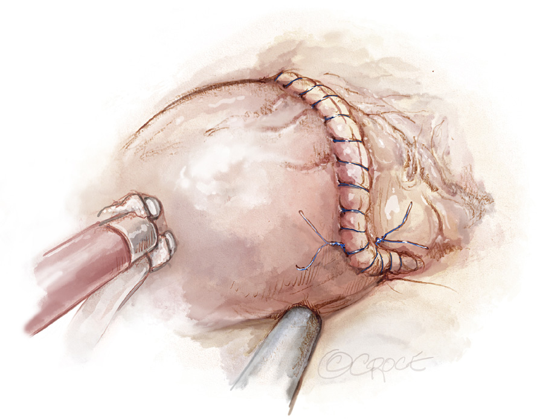
出典: Wei LM, Badhwar V. Ann Cardiothorac Surg 2025;14(3):228-234. doi:10.21037/acs-2025-ravr-12. CC BY-NC-ND 4.0（原図を改変せず掲載）。
5.4 併施手技 — 根部拡大と心筋切除
大動脈基部拡大（ARE）
原則は明快で、「常に体表面積に見合った最大サイズの人工弁を入れる」。 WVU は RAVR 開始（2020年1月）から わずか4ヶ月後の 2020年5月12日に初のARE を行った。
| 指標 | 数値 |
|---|---|
| WVU での ARE 施行率 | 約12.3%（自施設の開胸SAVRでのARE頻度とほぼ同じ） |
| 世界全体での施行率 | 約10% |
| 平均BMI | 30.9 kg/m²（範囲 18–43） |
| 平均人工弁サイズ | 23 mm（範囲 21–27） |
| 成績 | 死亡・再入院・出血再開胸ゼロ、1ヶ月TTEで全例が生理的な弁圧較差 |
手技は modified Nicks：大動脈切開を非冠尖洞の中点から弁輪まで延長し、 （必要なら非冠尖弁輪の一部または全体に沿って延長し）人工弁を植え込んでから、 pledget 付き 4-0 ポリプロピレン1本でパッチを水平マットレスに固定し、 近位・遠位に連続1層で縫着して、非冠尖洞と前方大動脈全体を gusset パッチで補強する。 材料は自己/ウシ心膜または合成ポリエステル（大きな拡大には合成を選好）。 初期シリーズではダイヤモンド型のパッチで非冠尖洞のみを補強し、 大動脈切開の中点に transition suture を置く方式も使われた。
拡大の程度：modified Nicks で 1〜2サイズ up。 逆Y切開＋長方形パッチなら 2〜3サイズ up できると述べられている （本レビューの姉妹編である AAE 術式アトラスを参照）。
経大動脈的中隔心筋切除
RAVR の副産物として最も面白い応用である。 弁を切除した後、左室流出路の全体が明瞭かつ同軸（coaxial）に見えるため、 曲剪刀だけで、心尖方向へ、僧帽弁尖と乳頭筋の連続を越えるところまで 十分な心筋切除ができる。
具体的な切除範囲（Pickering ら）：
- 右冠尖のナディアの約 5–8 mm 下方から開始
- 刺激伝導系と膜性中隔の損傷を避ける
- 前中隔乳頭筋のレベルまで心尖方向へ進め、乳頭筋と腱索を傷つけない
- 切除後に乳頭筋の基部と心室心尖が容易に見える状態になっているのが目安
これは従来の課題を直接に解消している — 従来は正中/部分胸骨切開の経大動脈的アプローチか、まれに僧帽弁経由で行い、 僧帽弁経由では前尖の離断・再固定（時にパッチ再建）が必要だった。
Pickering らの症例（67歳女性、HCM＋中等度AS＋中等度〜高度AI＋弁輪19 mm）では、 21 mm 生体弁＋modified Nicks（Dacronパッチ）＋ロボット中隔心筋切除を行い、 術後4日で退院。1ヶ月でNYHA I、平均LVOT圧較差 5 mmHg、1年で 4 mmHg。
WVU での初の経大動脈的中隔心筋切除は 2022年12月8日である。
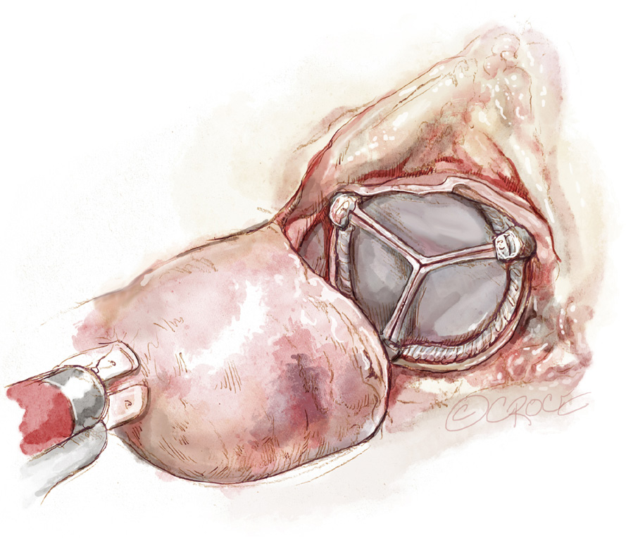
出典: Wei LM, Badhwar V. Ann Cardiothorac Surg 2025;14(3):228-234. doi:10.21037/acs-2025-ravr-12. CC BY-NC-ND 4.0（原図を改変せず掲載）。
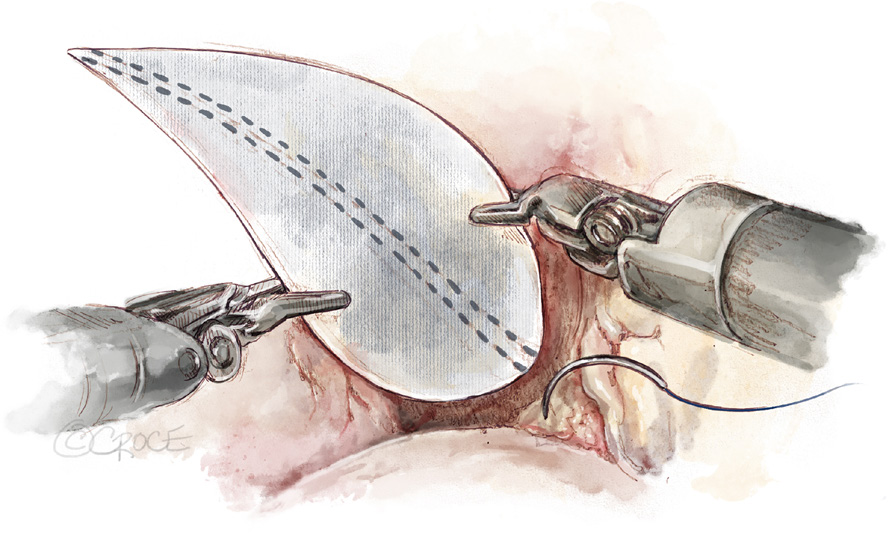
出典: Wei LM, Badhwar V. Ann Cardiothorac Surg 2025;14(3):228-234. doi:10.21037/acs-2025-ravr-12. CC BY-NC-ND 4.0（原図を改変せず掲載）。
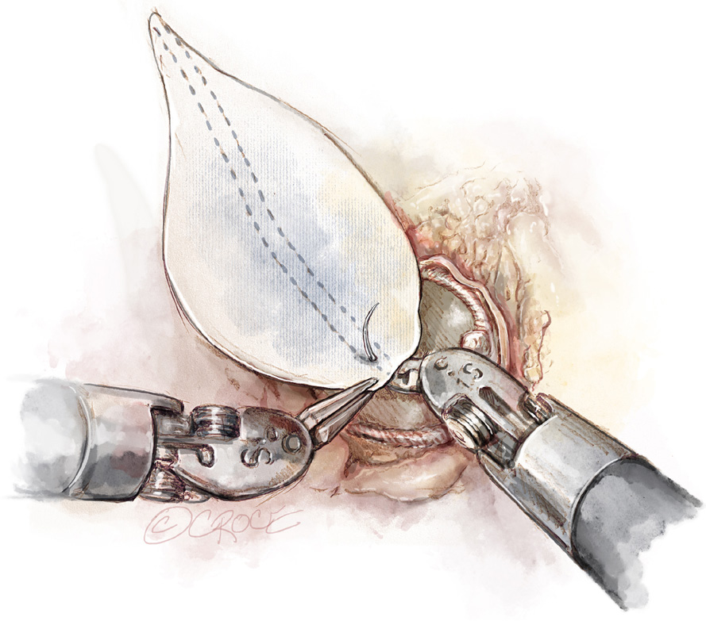
出典: Wei LM, Badhwar V. Ann Cardiothorac Surg 2025;14(3):228-234. doi:10.21037/acs-2025-ravr-12. CC BY-NC-ND 4.0（原図を改変せず掲載）。
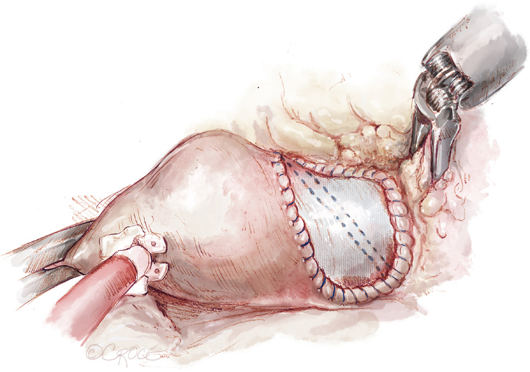
出典: Wei LM, Badhwar V. Ann Cardiothorac Surg 2025;14(3):228-234. doi:10.21037/acs-2025-ravr-12. CC BY-NC-ND 4.0（原図を改変せず掲載）。
5.5 プラットフォーム論 — 本章の核心
Wei / Badhwar の主張は、術式論というよりプラットフォーム論である。
ロボット心臓手術は、アプローチの異なる個別手術の寄せ集めではない。 1つの包括的なプラットフォームである。
RAVR を 2020年1月に開始した時点で、意図的にロボット僧帽弁と同じ transaxillary 作業孔を使った。目的は経験が積み上がったら併施手技を足せるようにすることだった。 実際の年表がこれを裏づけている。
| 日付 | 出来事 |
|---|---|
| 2020年1月 | 初の完全ロボットRAVR |
| 2020年5月1日 | 初の併施 biatrial Cox-Maze |
| 2020年5月12日 | 初の併施 大動脈基部拡大 |
| 2020年7月24日 | 初の RAVR＋僧帽弁形成＋biatrial Cox-Maze |
| 2021年3月16日 | AS＋MS に対する僧帽弁置換の併施 |
| 2021年11月 | 100例目 |
| 2022年12月8日 | 初の経大動脈的中隔心筋切除（HCM） |
| 2023年6月1日 | 世界で206例（うちWVU外 35例） |
| 2024年12月 | WVUで300例超連続、世界で約50例（WVU外） |
最初の50例のうちに僧帽弁形成と biatrial Cox-Maze の併施が入っている。 世界の最初の300例のうち 17%超が併施手術を含んでいた。
この同一プラットフォームで実施可能とされる術式は、 僧帽弁・三尖弁の形成/置換、Maze、左心耳閉鎖、ASD閉鎖、VSD閉鎖、 心内腫瘍切除、心表面ペーシングリード留置、中隔心筋切除、そして大動脈弁形成である。
ただし、この主張には前提条件が明示されている — RAVR 開発前に自チームで1,000例超のロボット僧帽弁を行っていた。 術前画像・麻酔・灌流の質、コンソールとベッドサイドの連携が 「比較的標準化された併施手技の追加」を可能にした、と述べている。
5.6 成績 — どこまで言えるか
| 報告 | n | 主な数値 |
|---|---|---|
| Badhwar ら（初報） | 20 | 平均67.5±5.4歳、STS予測死亡 1.6%±0.7%。30日死亡・重大合併症ゼロ、入院中央値 4.5日 |
| WVU 単施設（2022） | 50 | 1/3が機械弁、14%が併施。死亡・重大合併症ゼロ。84%が手術室で抜管、残りも4時間以内。ペースメーカー1例・輸血1例。入院中央値5日。術中・30日エコーで PVL ゼロ |
| 国際多施設（4施設・4大陸） | 212 | 平均67歳、STS予測死亡中央値1.7%。脳梗塞 0.9%・手術死亡 0.9%・腎不全 1.4%・再手術 7.6%・恒久ペースメーカー 2.9% |
| 国際多施設（EACTS 2024 発表、6大陸） | — | 参加施設 +150%・症例数 +50%。死亡 0.7%・脳梗塞 1%・腎不全 1.7%・ペースメーカー 2.3% |
| Chicago（rapid deployment） | 33 | 平均71歳・STS 2.3。既往心臓手術 12%。併施 11例（僧帽弁形成5・TECAB 2・AFアブレーション4）。正中転換ゼロ・周術期死亡ゼロ・脳梗塞ゼロ、入院 4.5日 |
RAVR vs TAVR の傾向スコアマッチング
Jagadeesan らの低〜中リスク例での解析（Murtaza / Wei が引用）：
| 指標 | RAVR | TAVR |
|---|---|---|
| 30日死亡 | 差なし | 差なし |
| 恒久ペースメーカー | 2.1% | 7.6% |
| 血管合併症 | 0% | 9.0% |
| 弁周囲逆流（周術期） | 0.7% | 21.5% |
| 1年死亡 | 1.4% | 12.5% |
| 1年 PVL | 2.3% | 32.6% |
| 平均弁圧較差 | 同等 | 同等 |
| 二尖弁の割合 | 46.5% | 13.8% |
| 再手術を要する術後血胸 | 5.6% | — |
| 脳梗塞 | 0.7% | 4.2%（傾向） |
解釈には注意が要る。 二尖弁の割合が RAVR群で 46.5% vs 13.8% と大きく偏っており （TAVRを避けた患者がRAVRに回った）、背景が揃っていない可能性が高い。 また RAVR には 5.6% の術後血胸再手術という固有の代償がある。 「1年死亡 1.4% vs 12.5%」という劇的な差を、術式そのものの効果として読むべきではない。
5.7 適応と限界
適した解剖：
- 水平な大動脈弁、やや長めの上行大動脈（大動脈弁が胸腔内で低位にあり、 側方からアクセスしやすい）
- TAVRの禁忌側にある患者 — 若年で機械弁を要する、併施手技が必要、 重症AR、二尖弁、LVOT石灰化
避けるべき解剖・条件：
- 短いまたは垂直な大動脈（CT評価での相対禁忌と明記）
- 重度の胸郭変形、広範な大動脈石灰化
- 前回の胸骨正中切開または右開胸、前回の右肺切除
- 末梢血管が 17–19 Fr カニューレに必要な最低 7 mm を満たさない
- 片肺換気に耐えられない呼吸機能
WVU は術前に 胸腹骨盤CTA・冠動脈造影（橈骨動脈アクセスを選好）・ 呼吸機能検査・頸動脈エコー・心エコー・血液検査・BNP・血型交差を規定している。 冠動脈造影に橈骨アクセスを選好するのは、 後で大腿を使う手術だから鼠径部の合併症を避けたいという理由である。
なお、プログラムが確立すれば上記の禁忌の一部は相対的になる — むしろロボットアクセスが高リスク患者の併存症を減らしうる、とも述べられている。 実際 WVU は現在「末梢人工心肺が可能な患者なら relative all-comer」の戦略を取り、 heart team は低リスク・中リスクの孤立性大動脈弁疾患では RAVR を第一選択としている。
ラーニングカーブは、僧帽弁の経験が豊富なチームでは 5〜10例という数字が示されている。 RAVR はロボット僧帽弁形成／置換の後に始めるべきで、技能セットがきわめて近いためである。 これは 3.6節の STS の位置づけ（RAVR は Phase IV の術式）と整合する。
5.8 まだ埋まっていない穴
- 長期耐久性のデータがない。 2020年開始なので当然だが、 「TAVR より1年生存が良い」ことと「10年後にどうか」は別問題である
- 多施設ランダム化試験がない。 現在のエビデンスは単群コホートと 傾向スコアマッチングに限られる
- TAVR explant への応用は症例報告の段階である （PMID 40750037：67歳女性、23 mm バルーン拡張型TAVR の4年後に 高度の人工弁狭窄・EF 35%・III型高度MR・STS予測死亡 7.9%、 側弯とRAに対してロボットでのTAVR摘出＋AVRを施行。 なお本文は購読誌のため未取得で、抄録に記載された内容のみを引く）
- 一方で、根部置換・弁尖再懸架・弁輪拡大・大動脈瘤修復への展開は 著者ら自身が「大半は仮説の域を出ず、慎重な研究と検証を要する」と明記している
6. 冠動脈（TECAB / MIDCAB）
冠動脈は「発展途上」の代表である。25年の歴史があり、単一施設の10年成績もあるが、 施設数が限られ、器材の供給という外的要因に左右されているという、 他章にはない構造的な問題を抱える。
6.1 まず2つの術式を区別する
| RA-MIDCAB（ロボット支援MIDCAB） | TECAB（完全内視鏡下） | |
|---|---|---|
| ロボットの用途 | ITA採取のみ | ITA採取＋吻合まで |
| 吻合 | 小開胸から直視下・用手 | ロボットで内視鏡的に |
| 定義上の位置づけ | ロボット「胸腔内」手技 | ロボット「心臓」手技 |
| 心停止 | 通常 off-pump | off-pump または on-pump（心拍動下/心停止下） |
Algoet らの世界集計（Bonatti の25年レビュー、RA-MIDCAB 1,762例＋TECAB 1,678例）：
| 指標 | RA-MIDCAB | TECAB |
|---|---|---|
| より大きい切開への転換 | 6.6% | 10.3% |
| 出血再開胸 | 1.9% | 3.4% |
| 脳梗塞 | 0.4% | 1.0% |
| 死亡 | 0.4% | 1.3% |
| 入院 | 約5日 | 約5日 |
TECAB の数字が悪く見えるが、この集団は多枝バイパスの比率が高い。 別の視点として Göbölös らの TECAB レビューは、転換率が20年で 50%超から 5%未満に低下したことを示している。
欧州の現況（Cerny ら、2016–2019）： 死亡 0.6%・脳梗塞ゼロ・転換 2.6%・出血再開胸 2.1%・98.7%が心拍動下。 ただし入院 6.5日で正中切開と大差なく、著者らは 「入院短縮が減収につながる欧州の償還制度」を一因に挙げている。 また欧州では EndoWrist stabilizer が新型 da Vinci X/Xi 用に供給されず、 TECAB がほとんど行われていない。
この器材問題は本章の通奏低音である（6.7節）。
6.2 ポート配置 — RA-MIDCAB と TECAB の違い
体位は共通で、仰臥位、身体の左側を手術台の縁に合わせ、 左肩がわずかに台からはみ出すようにし、左腕は背中の下に置く。 手術台をわずかに右へ傾ける。これで上方の robotic arm の可動が妨げられにくくなる。
術前は 胸部X線（および/またはCT）を用意し、切開前に 胸骨正中線・第2/3/4肋間・剣状突起・下位肋骨をマークする。
(a) Algoet ら（KU Leuven / Chicago）の標準
RA-MIDCAB — トロカール3本
- 第4肋間・乳頭のすぐ外側に Veress 針 → 6 mmHg まで送気
- 同部位にカメラ用トロカール（第4肋間）
- 第2肋間・前腋窩線
- 第6肋間・中腋窩線
- ロボット手技終了後、第4肋間に小開胸
TECAB — トロカール4本＋助手ポート1本
- 第4肋間で Veress 針送気
- 前腋窩線上の第2・第4・第6肋間に3本
- 4本目は標的による — LIMA–LAD なら剣状突起の外側、 後側壁の血行再建（鈍縁枝など）なら鎖骨中線と胸骨中線の間の肋骨弓下
- 採取が終わったら左第2肋間・傍胸骨に助手ポート
送気の注意（見落とすと危ない）：
- 気胸を作ることで高度の低血圧が起こりうる。全ステップで血行動態を意識し、 麻酔科と常時交信する
- 最初は 6 mmHg 未満・低流量で開始し、適応させる
- 送気できない場合は別のトロカール部位に Veress 針を刺し直すか、 鈍的にトロカールを入れる
- TECAB では AirSeal で胸腔内圧を安定させると、糸やスネアを出し入れしても圧が保てる
(b) Wertan / Sutter ら（Lankenau）の "precision incision"
RA-MIDCAB では内視鏡ポートの位置がそのまま小開胸になるため、 その1点の精度が手術の成否を決める。Lankenau は肋間や鎖骨中線・腋窩線を使わず、 3つの座標で決める方式を標準化した（2005年5月〜2024年6月30日で 2,852例）。
マーキングは Ioban ドレープの上に、切開前に行う。基準は 胸骨正中線・LIMAの位置・横隔膜前縁（剣状突起と胸骨下縁の接点の高さ）の3つ。
| 座標 | 決め方 |
|---|---|
| 座標1（長軸） | 胸骨上切痕と剣状突起の中点 — カメラを最適化し、LIMA の近位・遠位に等しく届く |
| 座標2（短軸＝内外側） | 術前CXRで心陰影が左胸郭のどれだけを占めるかを見積もる（40〜100%と幅がある）。LAD遠位＝心尖＝CXR上の心陰影の外側縁。この比率で胸骨中央から外側へ測る。必ず左側の骨性胸郭（皮膚や脂肪ではない）と胸骨正中を境界にする |
| 座標3（微調整） | 標的が近位/中間/遠位LADのどれか。座標1・2は中〜遠位LADに合わせてある。より近位なら1肋間上、より遠位なら1肋間下。近位LADや第1対角枝/ramus ならより内側へ |
実務的な補助線がいくつもある。
- 痩せた男性では乳頭の高さがLAD遠位の 70〜80% の位置にあたる
- 太った男性は乳房を右肩方向に引く、女性は外側へ引いて上方に平坦化する。 女性の切開は最終的に左乳房の下内側1/4に来る
- 心臓は下方・内側へ約1インチずつ動かせるが、上方・外側には動かない。 よって迷ったら内側寄りに置く（心臓を内側に寄せるのは常に容易）
- CTでマッピングする案もあるが、通常の正面＋側面CXRに比べて有意な追加情報はなかった
ポートは縦一直線に、内視鏡ポートの上下 8〜10 cm（指4本分）に置く。 肋骨弓の関係で下方ポートをやや後方に置かざるを得ないことがあるが、 カメラとの干渉はまれである。下方ポートは骨性胸郭を持ち上げて心膜と前胸壁の間の空間を広げるのに使う。 上方ポートは軽く "burp" する程度にとどめる — 強く持ち上げると 肋骨に沿って下方の肋間筋が裂ける。
内視鏡ポート留置の危険：その直下に心臓がある可能性がある。 側面CXRまたはCTで心臓の前方位置を再確認する。 換気とPEEPを止め、鎖骨中線の頭側に Veress 針を置いて CO2 で心臓を後方・内側へ退かせる。 挿入時は心電図を注視 — 期外収縮が続くなら心臓が近すぎるのでより外側で 8 mm ポートを再試行する。 心臓が胸壁に接していると疑うなら先に指を入れる方が安全である （ただしポート径が広がり CO2 が漏れやすくなる）。
CO2 圧は通常 8〜10 cmH2O、最大14まで問題なく使える。 器械を入れた後、心膜脂肪の内側・前方の胸壁付着を切離すると CO2 が心臓をさらに後方へ押して前後方向の作業空間が広がる。
(c) Bonatti ら（Pittsburgh）の TECAB（心停止・エンドバルーン）
左第3・第5・第7肋間にポートを置いてドッキング、 傍胸骨に 8 mm 助手ポート、肋骨弓下に 12 mm ポートを第4アームに接続。 橈骨動脈ラインを両側に取る（エンドバルーンの位置監視のため）。 体位は左胸 30°挙上。 BITA を使う多枝例では左胸に5本のポートを置き、うち4本をドッキング、 カプノソラックス 8 mmHg、カメラは第3アームが保持する。
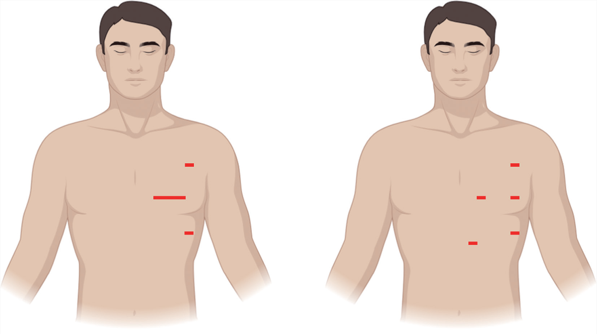
出典: Algoet M, et al. Ann Cardiothorac Surg 2024;13(5):397-408. doi:10.21037/acs-2023-rcabg-0210. CC BY-NC-ND 4.0（原図を改変せず掲載）。
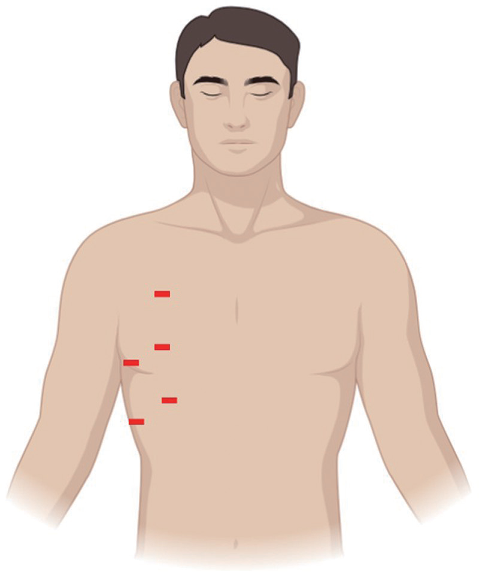
出典: Algoet M, et al. Ann Cardiothorac Surg 2024;13(5):397-408. doi:10.21037/acs-2023-rcabg-0210. CC BY-NC-ND 4.0（原図を改変せず掲載）。
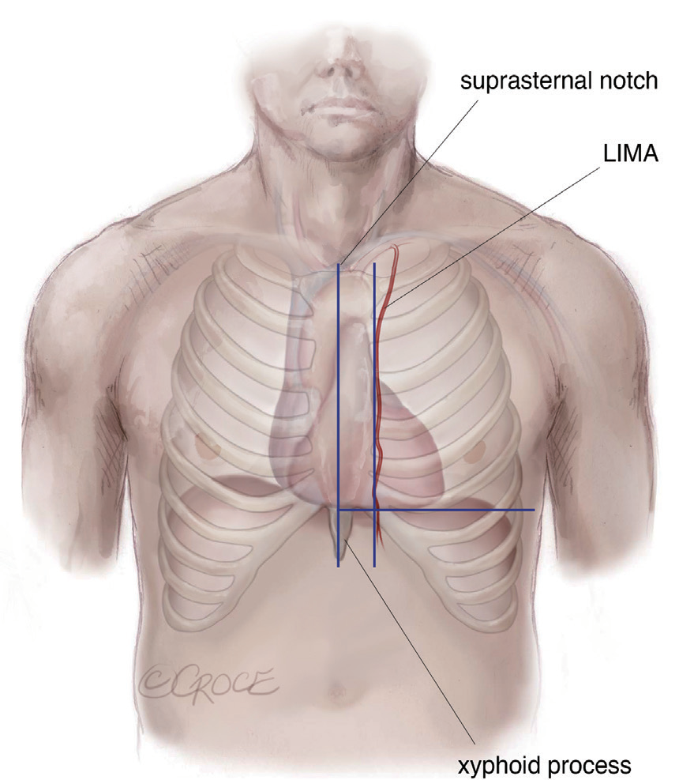
出典: Wertan MC, et al. Ann Cardiothorac Surg 2024;13(5):442-451. doi:10.21037/acs-2024-rcabg-0034. CC BY-NC-ND 4.0（原図を改変せず掲載）。
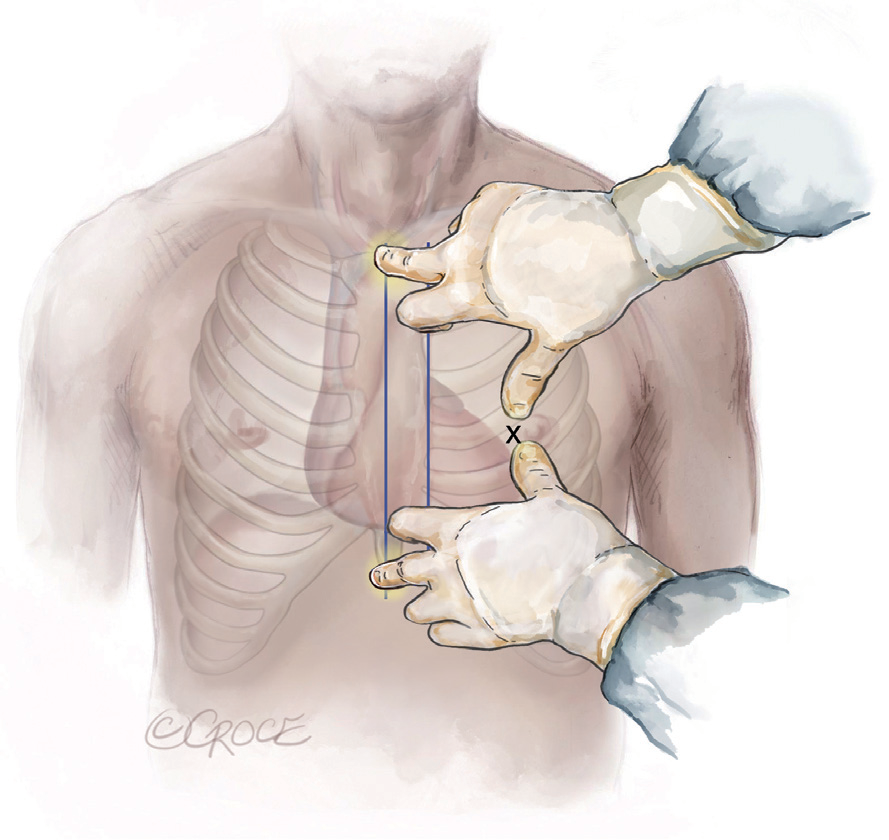
出典: Wertan MC, et al. Ann Cardiothorac Surg 2024;13(5):442-451. doi:10.21037/acs-2024-rcabg-0034. CC BY-NC-ND 4.0（原図を改変せず掲載）。
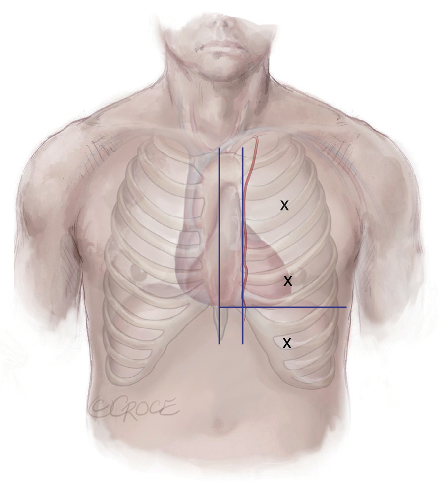
出典: Wertan MC, et al. Ann Cardiothorac Surg 2024;13(5):442-451. doi:10.21037/acs-2024-rcabg-0034. CC BY-NC-ND 4.0（原図を改変せず掲載）。
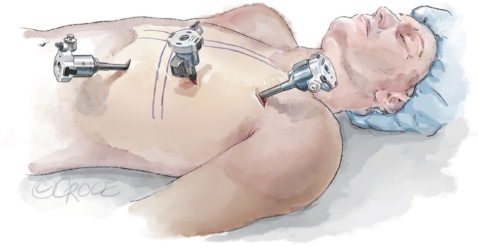
出典: Wertan MC, et al. Ann Cardiothorac Surg 2024;13(5):442-451. doi:10.21037/acs-2024-rcabg-0034. CC BY-NC-ND 4.0（原図を改変せず掲載）。
6.3 IMA 採取
標準の型
- 電気メスの設定は低く。Lankenau は Intuitive の Classic 1 または Swift 1–2。 「高ワット数はLIMAを焼き切りうるが、この設定なら表層の非貫通性損傷にとどまる」。 Bonatti は cautery level 2
- LIMAが最も見やすい所（通常は近位）から剥離を始め、 壁側胸膜・脂肪・筋層を除いてLIMAの全走行を見えるようにしてから進める
- 後壁側の胸内筋膜を剥離する — 後壁には分枝がほとんどない
- skeletonize は遠位（分岐部）から近位へ。 Lankenau の初期経験では近位→遠位の全周性剥離で静脈出血が増えた
- 「穴に向かって掘らない」 — 一箇所で全周性に剥離するのではなく、 IMA の走行に沿って前方へ漸進的に上がっていく
- 前方の付着を一部残すとLIMAが吊られて robotic arm の不慮の損傷から守られる。 また太い遠位分枝を残すと血流が保たれ、操作による凝固促進を相殺できる
- 出血は7/0 Pronova で。血液が組織を染めると以降の剥離が難しくなるので徹底する
- 分枝は近位はクリップ、遠位は焼灼（術者による）
- 横隔神経は IMA の起始部と密接している。脂肪で見えないときは 予想される走行の上を優しく下方へ圧迫すると、脂肪層の下に走行が見える
- 触覚フィードバックがないので過度の牽引をしない — LIMA壁の解離を招く
BITA の場合：右ITAを先に採る。上方ポートを通常よりやや下方・外側に置いて LIMA損傷を防ぐ。近位RIMAの剥離で器械を上方へ動かすとLIMAに相当な圧がかかる。 胸骨を越えて右へ剥離する際は胸骨後面に沿った剥離層を保つ。
標準化のためのランドマーク — 第1肋軟骨結合の骨棘
初学者にとって最大の壁は**「LIMAがどこにあるか分からない」ことである （縦隔脂肪に完全に埋もれている場合が典型）。 He らはこれに対して第1肋軟骨結合の骨棘（OFCCJ）**を解剖学的ランドマークとし、 「LIMA isthmus」という概念を提案した。514例のCT解析：
| 項目 | 冠動脈疾患あり | なし | P |
|---|---|---|---|
| OFCCJ の存在率 | 73.16% | 60.33% | <.01 |
| OFCCJ の高さ | 15.54±4.99 mm | 16.55±4.70 mm | .06 |
| OFCCJ–LIMA 距離 | 12.66±4.19 mm | 12.45±6.87 mm | .72 |
冠動脈疾患患者ではむしろ骨棘が多い（動脈硬化と骨増殖の関連）にもかかわらず、 高さと LIMA までの距離は疾患の有無で変わらない — つまり ランドマークとして安定している。
導入期の術者2名での効果：
| 指標 | LIMA isthmus 法 | 従来法 | P |
|---|---|---|---|
| LIMA同定までの時間 | 89.00±31.07 秒 | 1,087±436.1 秒 | .035 |
| 採取時間 | 86.80±4.74 分 | 110.5±11.72 分 | .013 |
| 不慮の出血イベント数 | 1.00±0.19 | 3.44±0.34 | <.001 |
LIMA同定が18分から1.5分になるというのは、導入期の術者にとって決定的な差である。 術後ドレナージ量・LIMA損傷・正中転換には差がなかった。
採取後の処理（RA-MIDCAB）
- ACT 300秒を目標にヘパリン化
- VG液（ベラパミル 2.5 mg＋ニトログリセリン 1.25 mg＋ヘパリン 250単位＋ 重炭酸ナトリウム 0.1 mL＋リンゲル液 150 mL）を8Fr 小児用経管栄養チューブで 下方ポートから噴霧してLIMAを拡張する
- 決定的に重要なのが tacking stitch — skeletonize した LIMA は、 心外膜に固定しないと必ず時計回りに回転する。 小開胸からは回転しているかどうか分からないため、 LIMA遠位をわずかに離断してから 7-0 の糸でLAD標的部位に tack する （あるいは LAD 標的の高さで心膜辺縁にクリップ留めする）
- ポート抜去の際に全ての剥離部位とポート部位の出血を確認する。 完全に抜いてからでは対処が難しい
- 最後に19Fr Blake ドレーンを上方ポートから肺尖上に留置
6.4 標的血管の展開
(a) LAD（前壁）
Lankenau はLIMA採取の前に心膜を開ける。理由は 「採取後は IMA が緩く吊られた状態になり、心膜切開中の器械の圧で損傷しうる。 未採取なら IMA の上に脂肪と筋の保護層がある」。
心膜切開の要点：
- 単極剪刀＋双極。心臓に近い単極は心室性不整脈を起こす。 実際に心膜を開けるとき、心臓の近くで作業するときに VT/VF が起こりうる
- 不整脈が起きたらベッドサイドチームが全ロボット器械を抜去する。 麻酔科はリドカイン 100 mg を常にパッケージから出して準備しておく。 左肺を再膨張させ、外回りは除細動器を最大ジュールにして可及的速やかに通電する （開胸例では最大ジュールが普通ではないので、これは定型訓練にしておく）
- 後方（横隔神経の後方・脂肪のない部位）の心膜も開けておくと、 吻合中に貯まる血液が排出される。必須ではないが、胸壁・シャント周囲・ スタビライザーによる心外膜静脈の軽微な損傷からの出血の管理に効く
- 前方心膜は心膜越しに肺動脈が見える部位のすぐ外側、左室の上で開ける。 損傷するなら左室の方が右室や肺動脈より許容できる
- 心膜尖部で外側に切開を入れない — 心臓が心膜の外へ横にずれたり、 縁に乗り上げたりする
- 広く開ける意義は3つ：(i) 小開胸から見るときに心膜脂肪と心膜縁が視野を邪魔しない、 (ii) 術後のタンポナーデを減らす、 (iii) 右側心膜の排液を確保する（初期経験で遅発性の炎症性右房タンポナーデを経験した）
- 標的の最適な視野は、内視鏡をやや下方・内側に向けて得る。 器械を抜いてCO2が失われると標的は上方・外側へ1インチ以上動くからである
- チタン Weck ヘモクリップを3個心外膜に置いて LAD 標的を標識する （小開胸から覗いたときに他の血管と取り違えないため。 心外膜に深く刺すと出血するので、浅いクリップは外れやすい。だから3個）
(b) Cx 領域（後側壁）— 器材の欠落を糸で埋める
Bonatti らの手技は、EndoWrist stabilizer が入手できなくなったことへの回答である。
- 心停止後、心膜を開ける
- 肋骨弓下ポートから long-tip forceps を入れ、da Vinci Xi の第1アームが保持する
- 患者側助手が傍胸骨の助手ポートから、Teflon pledget 付きの 10 cm の CV-4 Gore-Tex 糸をコンソール術者へ渡す
- 針を左室側壁の心筋にバックハンドで通し、対側の pledget に2回通し、 フォアハンドで再び左室壁を通して最初の pledget へ戻す
- 左室心筋には十分に大きく針をかける（裂けるのを防ぐ）
- 最低8結びで結紮し、糸端は約2 cm 残す
- この糸端を long-tip forceps でしっかり保持すると、 鈍縁枝や回旋枝末梢を術者の視野に引き上げられる
標準の配置は RIMA→LAD系、LIMA→回旋枝系である。 遮断解除後も同じ forceps で鈍縁枝を展開して吻合部の出血を確認でき、 修復針が必要になれば拍動する心臓を安定化できる。
重大な但し書き：著者ら自身が 「本法は心停止下TECABにのみ適用しており、 心拍動下に用いるのは左室心筋が裂ける危険があるため危ない」と明記している。 そして「心拍動下TECABには吸引式スタビライザーが不可欠であり、 ロボット冠動脈外科医のコミュニティは対応するロボット器械の復活を強く求めるべきだ」 と結んでいる。これは workaround であって代替ではない。
(c) 後壁（"dark side"）— スタビライザーがある場合
University of Chicago は da Vinci Si ＋ EndoWrist stabilizer を保持しているため、 心拍動下で後壁標的に到達できる。983例のTECABのうち 137例が 後壁標的（遠位鈍縁枝 OM2/OM3、後下行枝、右冠動脈の後側壁枝）を含む。
| 指標 | 数値 |
|---|---|
| 多枝TECAB | 102例（74.5%）、うち BITA 98/102（96.1%） |
| CPB を要した | 5例（3.6%）（標的展開時の血行動態破綻） |
| 正中転換 | ゼロ |
| 手術時間 | 317±72分 |
| 後壁標的の平均血管径 | 1.79±0.43 mm |
| AF / AKI / 脳梗塞 / 院内死亡 | 10% / 1.5% / 0.7% / 0.7%（O/E 0.61） |
| 入院 | 2.2±0.8日、97%が自宅退院 |
| 中期（47±34ヶ月、追跡率100%） | 全死亡 15%、心臓死 2.9%、MI 2.2%、再血行再建 5.1%（全て予定外PCI）、MACCE回避 92% |
| 早期グラフト開存（ハイブリッドPCI時の造影 67本） | 全体 97%、LITA 100%、RITA 94%、後壁標的 32/32＝100% |
技術的な要点は3つ挙げられている。
- 肋骨弓下のスタビライザーポートの位置。前壁なら鎖骨中線の内側でよいが、 後壁を狙うときはより外側に置く。内側だと左室心尖を圧迫して低血圧になる
- 従来のOPCABでは後壁の展開に心臓の大きな脱転と挙上が要るが、 TECABではポートが外側にあり視軸も外側からなので、 スタビライザーで軽く上方へ操作するだけで足りる
- 右冠動脈単独病変で右側ポートを使う場合は、 スタビライザーをできるだけ内側のポートから入れる（遠位RCA/PDAに届かせるため）
グラフトの順序は標準的なoff-pumpの原則に従う — 血行動態への影響が最も小さく、再灌流領域が最も広い標的から。 通常はLADを最初に、次いで後壁標的。
適応の考え方が明快である。小さい非優位の "dark-side" 枝は ハイブリッド戦略としてPCIに回す。大きい/優位で広い心筋領域を養う枝は 動脈グラフトの方が良いとハートチームが判断すれば手術で扱う。 つまり血管ごとに治療法を割り付ける。
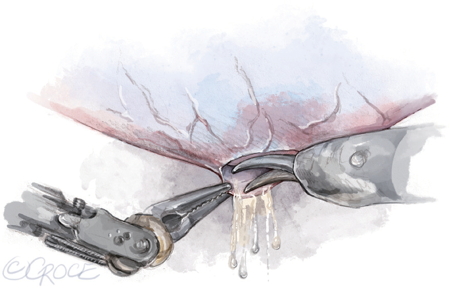
出典: Wertan MC, et al. Ann Cardiothorac Surg 2024;13(5):442-451. doi:10.21037/acs-2024-rcabg-0034. CC BY-NC-ND 4.0（原図を改変せず掲載）。
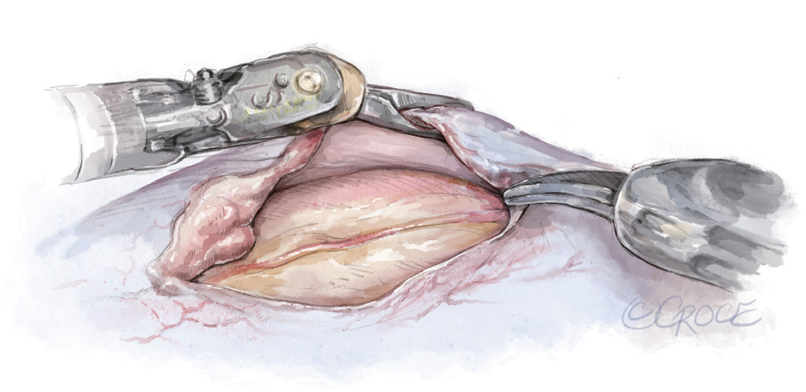
出典: Wertan MC, et al. Ann Cardiothorac Surg 2024;13(5):442-451. doi:10.21037/acs-2024-rcabg-0034. CC BY-NC-ND 4.0（原図を改変せず掲載）。
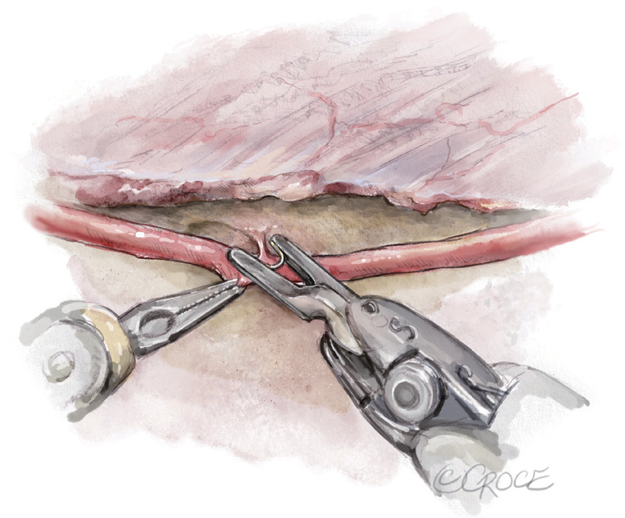
出典: Wertan MC, et al. Ann Cardiothorac Surg 2024;13(5):442-451. doi:10.21037/acs-2024-rcabg-0034. CC BY-NC-ND 4.0（原図を改変せず掲載）。
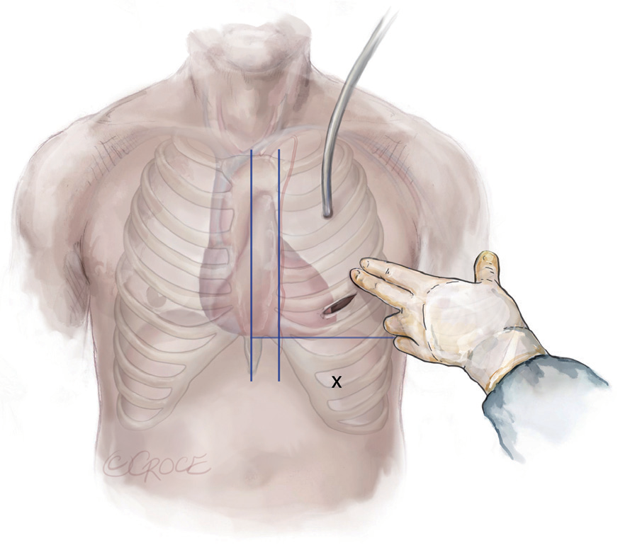
出典: Wertan MC, et al. Ann Cardiothorac Surg 2024;13(5):442-451. doi:10.21037/acs-2024-rcabg-0034. CC BY-NC-ND 4.0（原図を改変せず掲載）。
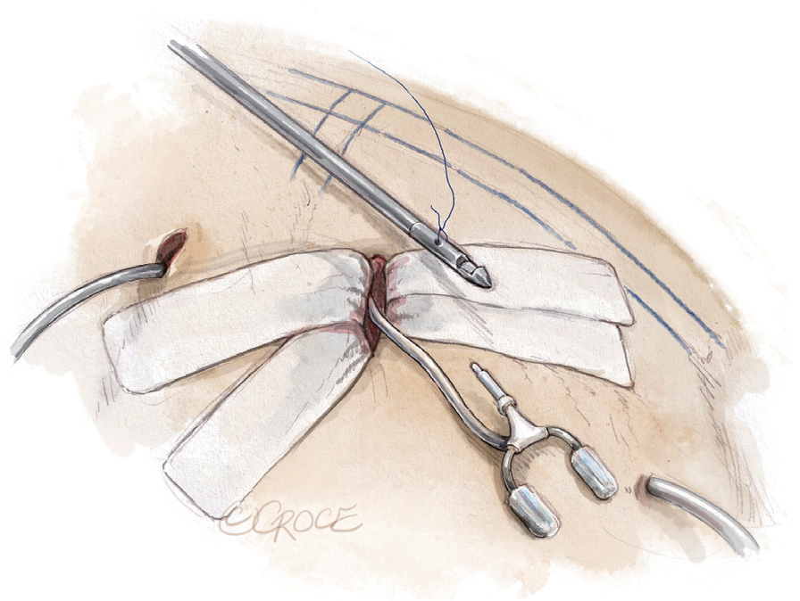
出典: Wertan MC, et al. Ann Cardiothorac Surg 2024;13(5):442-451. doi:10.21037/acs-2024-rcabg-0034. CC BY-NC-ND 4.0（原図を改変せず掲載）。
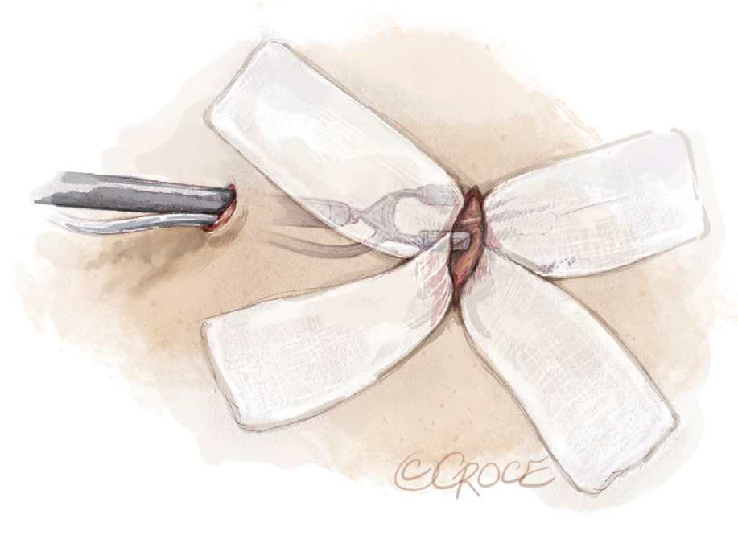
出典: Wertan MC, et al. Ann Cardiothorac Surg 2024;13(5):442-451. doi:10.21037/acs-2024-rcabg-0034. CC BY-NC-ND 4.0（原図を改変せず掲載）。
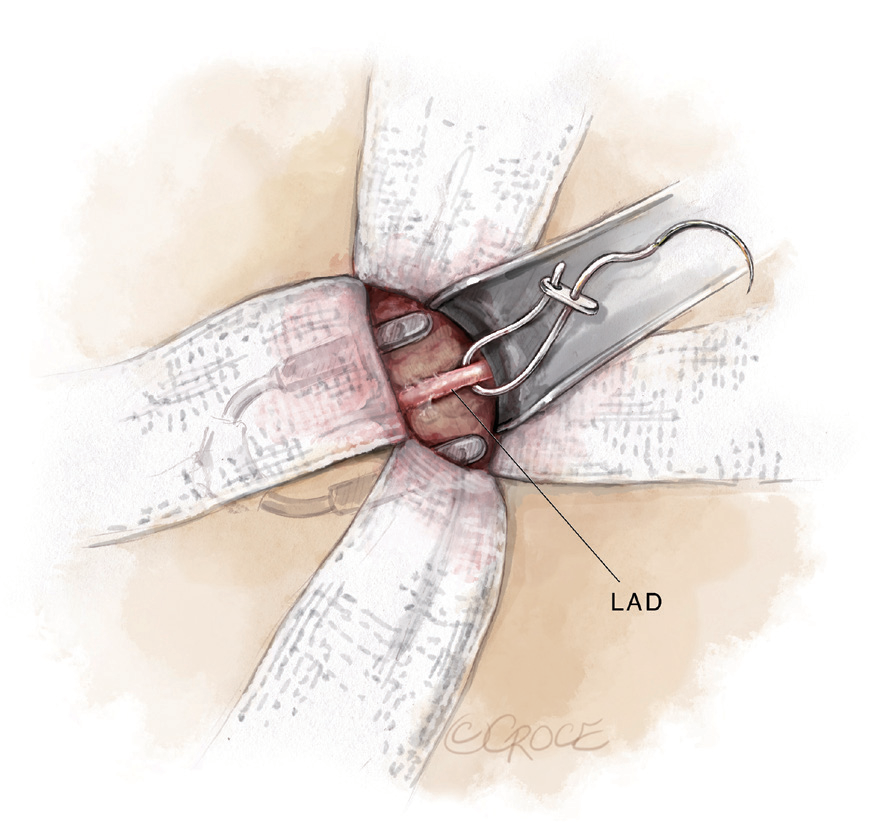
出典: Wertan MC, et al. Ann Cardiothorac Surg 2024;13(5):442-451. doi:10.21037/acs-2024-rcabg-0034. CC BY-NC-ND 4.0（原図を改変せず掲載）。
6.5 吻合
心拍動下（RA-MIDCAB・小開胸から）
- OCTOPUS NUVO スタビライザーを2部品に分けて胸腔内で組み立てる。 必ず先に指を小開胸から入れて、下方ポートから入れる器械を視野に導く。 ポールの挿入時は指先で誘導して心臓を傷つけない
- 心膜外側縁に牽引糸をかけ、14G angiocath 経由でクロシェ針で皮膚外へ引く。 これで心臓を内側へ寄せ、肺を術野から遠ざける
- LIMAには余剰があるので、もう1本の 7-0 で心外膜に再 tack して弛みを取る
- アンダーサイズの冠動脈内シャントを使う（虚血が生じたときのため、 かつ挿入時にLAD内膜を傷つけないため）
- 7-0 Prolene。踵側で3結びして始め、吻合の内側の中点で終える。 結紮前に神経鉤で糸を締める
- 小さい角度付き Bulldog クランプに糸をつけておく（術野で行方不明になったときの回収用）
- 完了後はトランジットタイム流量計で機能評価する。 ハイブリッド手術室で造影できるのが理想
切開は 4〜12 cm、術者が快適な大きさでよい。 Lankenau は「患者にとっての主たる利益はロボットによる低侵襲なIMA採取であって、 必ずしも切開の大きさではない」と明言している。 soft tissue retractor を入れるには最低2横指の幅が要る。
完全内視鏡下（TECAB・心停止下）
Bonatti らの記載が最も詳しい。7 cm の 7/0 Pronova を使う。
- 後壁の吻合線で、toe 側に近い位置でLADに inside-out に第1針。 針は心尖側の心外膜に parkする
- もう一方の針で後壁を全てフォアハンドで縫う — グラフトは inside-out、標的血管は outside-in
- こまめに両端を引いて後壁のスリング形成を防ぐ
- 踵を回ったら針を頭側の心外膜に park
- もう一端で続け、グラフトは outside-in、標的は inside-out で toe を回って前壁を縫う
- 再び断続的に針で糸を引いてスリングを補正
- 後壁と踵を点検してスリングを直し、針を外してロボット器械で結紮
- 後壁に予防的な修復針（pre-emptive repair stitch）を置く
心筋保護は エンドバルーン膨張 → 大動脈基部にアデノシン 6 mg → del Nido 1,200 mL。 再灌流中に流量測定（提示例では 25 mL/分、PI 2.5）。
吻合デバイス
Chicago の BITA-TECAB 406例（878吻合）では、 C-Port Flex A 397本（45%）／7-0 Pronova 縫合 466本（53%）／U-clips 15本（2%）。 両者の比較では手術時間以外に差はなく、デバイスの方が短時間だった。 現在は縫合が主体である。
6.6 成績 — TECAB は何を達成したか
Chicago の BITA-TECAB 10年成績（871例中 406例、2013年7月–2024年4月）が 現時点で最も長い追跡である。
| 指標 | 数値 |
|---|---|
| 平均年齢 67±9歳、女性16%、STS 1.47±2.2% | |
| 糖尿病 39%（インスリン依存 15%）、BMI≥30 が 39%、EF≤40% が 20% | |
| 98%が off-pump 完遂、正中転換ゼロ | |
| グラフト数 | 2.2±0.4 |
| ICU / 入院 | 1.22±0.62日 / 2.44±0.83日 |
| AF 13%・AKI 3.4%・出血再開胸 0.7%・術後MI 0.2%・脳梗塞 0.2% | |
| 30日死亡 1.2%（O/E 0.89） | |
| 完全な活動への復帰 14±8.6日、職場復帰 17±13日 | |
| ITA早期開存（ハイブリッド造影 278本） | 271/278＝98%、LITA–LAD 100% |
| 中期（51±36ヶ月、最長10年、追跡完全） | 全死亡 13%、心臓死 2.5%、狭心症回避 96%、再血行再建回避 94% |
| グラフト流量 | LITA 84±42 mL/分（PI 1.4±0.4）、RITA 74±35（PI 1.6±0.5） |
BITA を使う最大の動機が数字に表れている — 胸骨創感染の懸念で 糖尿病・肥満患者にBITAを使いにくいという問題を、胸骨を開けないことで消す。 実際この集団は糖尿病39%・BMI≥30が39%と、まさに従来BITAを避けてきた層である。
RA-MIDCAB 側では Lankenau の 2,852例（18年）が最大規模である。 正中転換 <2%、手術室抜管 88%、輸血 17%、術後AF 17%、脳梗塞 0.44%、死亡 1.2%。 同院では全CABGのほぼ半数がこの術式で行われている。
著者らの位置づけが率直である。 「R-MIDCAB は伝統的な正中切開と競合するものではない。 多枝ステント留置に対する gold standard の代替を提供し、 あるいは正中切開に耐えられないフレイルな患者に選択肢を提供するものである」。
6.7 器材という外的制約 — 本章固有の問題
他章と決定的に違うのは、冠動脈ロボット手術の実行可能性が、 単一メーカーの製品供給と規制に依存している点である。
- EndoWrist stabilizer（心拍動下TECABに不可欠）は数年前に供給停止。 第3世代 da Vinci Si の残存在庫がある施設だけが心拍動下TECABを継続できている。 Chicago がSi を使い続けているのはこの理由である
- 左房リトラクター（心内手技に不可欠）も同様
- 欧州では Medical Device Regulation（2017/745、2021年5月発効）により、 ロボット手術システムとその付属品が中央循環系に接触する用途で class II → class III に 再分類された。grandfathering がなく全製品が新規扱いになり、 臨床データ要求が厳格化した。しかも何が要求されるかは conformity assessment を 受けるまで正確には分からない
- 結果として、メーカーは長く高価な審査で不十分と判定されるリスクを取るより、 製品を市場から引き揚げる選択をした。 ロボット手術は現在の心臓手術の約3%にすぎず、産業側の動機が小さい
Algoet らはこの状況を「規制と市場のダイナミクスの変化が、 心臓手術用の唯一のロボットプラットフォームが必須付属品の販売を中止する事態を招いた」と 記述している。
一方、明るい材料もある。Chicago の Nisivaco らは 「da Vinci のメーカーが第5世代システムで EndoWrist stabilizer により 心臓外科を支援する意向を表明したこと、および他のロボットプラットフォームの 市場参入が、これらの手技の継続的な進歩と普及にとって励みになる」と記している。
6.8 Pitfall — 転換のリスク因子は 3.8節へ
冠動脈トラックの正中転換については、Emory の271例の内訳と Halkos らの guardrail を 3.8節にまとめた。 本章の文脈で改めて強調しておくべき点は3つである。
- 転換理由の主役は時期とともに移る — 初期は LIMA解離・誤吻合、 後期は LIMA–LAD 吻合の技術的困難。後者は症例選択が上手くなった証でもある
- 標的血管が最大の分岐点 — 標的が >1.5 mm、遠位1/2に石灰化がなく、 心筋内走行を疑わせない（中遠位1/3で直線的なLADが心尖に向かって初めて弯曲するのが 心筋内走行の微妙な手がかり）
- 体格 — 肥満、乳房の大きい女性、胸部脂肪の多い男性は深い切開からの展開が難しい。 明確なBMIカットオフはないが、導入期は BMI 30〜35 超に慎重であるべき。 ただし小さい胸郭のわずかな肥満の方が、大きい胸腔の高度肥満より難しい
導入の順序についての Lankenau の提案（incremental learning）も実務的である。
- 心拍動下手術に不慣れなら、まず on-pump で心拍動下のLIMA–LAD吻合を経験する
- 自施設の正中切開症例でロボットLIMA採取だけを行う（患者に説明と同意を得て。 「ロボットで 8 mm ポート3本か、Rultract 開創器を使った正中切開か」と提示すると 大半の患者はロボットを選ぶ）
- 最初はLIMA採取に1時間を割り当て、徐々にロボット時間を延ばしてから正中に移る
- 最初の数例は小開胸ではなく大きめの切開から始める
- 正中に転換するときは、左腕をスリングから外して体側に戻す — そうしないと胸部切開が弯曲する
7. 複合弁・同時手術
3.6節で見たとおり、STS はこれを Phase IV の術式、 すなわち習熟後に拡大してよい領域と位置づけている。 本章は「何ができるか」より「何を、どの順に足すか」を扱う。
7.1 ポート配置 — 1つの胸腔で2つの弁を扱う
複合弁手術における最大の技術的障害は、単純だが厄介である。
大動脈弁と僧帽弁は解剖学的に隣接しているのに、 内視鏡で正面視するのに必要な角度が大きく違う。 典型的には AVR のポート配置は僧帽弁手術より1肋間高い（Goto ら）。
これに対する解法が3つ出そろっている。
(a) 単一プラットフォームで押し切る — WVU / NTUH 型
RAVR と僧帽弁で同じ transaxillary 作業孔を使う（5.5節）。 NTUH（台湾大）のロボット配置は次のとおりで、僧帽弁の配置とほぼ同一である。
| 要素 | 位置 |
|---|---|
| 作業孔 | 第4肋間・右前腋窩線付近、3 cm（soft tissue protector） |
| 左アーム / 右アーム | 第3肋間 / 第6肋間 |
| 心房リトラクター | 第4肋間 |
| カメラ | 作業孔のすぐ上、ベント用の sub-working port はその下 |
| 大動脈遮断 | 着脱式 Glauber クランプを作業孔から胸腔内へ |
内視鏡（非ロボット）版では、切開は同じく第4肋間・右前腋窩線で、 カメラポートを第2または第3肋間に置き、5 mm・30°の内視鏡を使う。
大動脈弁の展開は3本の牽引糸で作る（NTUH の核心的な工夫）。
| 方向 | 位置 | 効果 |
|---|---|---|
| 上方牽引 | 左–右交連の糸を上方の心膜に固定 | 弁を挙上し、上方の視野を作る |
| 右方牽引 | 右–無冠交連の糸を横隔膜方向へ | 弁を水平方向に整列させ、術野を外側に広げる |
| 下方牽引 | 左–無冠交連の糸を作業孔方向へ | 弁の下方が開く |
台湾とオーストラリアの独立プログラムが WVU 法と収斂した際、 共有していた唯一の戦略が「牽引糸で大動脈基部を回転させる」ことだったのは 5.2節で見たとおりである。
(b) カメラポートを2つ置く — dual-camera 戦略
豊橋ハートセンターの Goto らは、術前造影CTで両弁の最適視軸を実測し、 単一のカメラポートでは両方に最適化できないことを確認したうえで、 カメラポートを2本置く方式を取った。
| ポート | 位置 |
|---|---|
| 主作業切開 | 第4肋間、4 cm |
| カメラポート A（10 mm） | 第4肋間・鎖骨中線 → 僧帽弁用 |
| カメラポート B | 第3肋間・前腋窩線 → 大動脈弁用 |
| 器械ポート（5 mm） | 第2肋間 |
実際の効果は明快である。僧帽弁置換・左心耳血栓摘出・AtriClip をポートAで行い、 大動脈を横切開した時点で視野が不十分だったためポートBにカメラを切り替えたところ、 弁尖全体が露出した。同論文の図はこの差を A/B 並置で示している。 CPB 133分・遮断 98分、術後7日で退院、6ヶ月でNYHA I。
この方式の利点はロボットを使わず、ポートを1本増やすだけという点にある （著者ら自身が「低コストで単純な手技」と述べている）。 同院は以前からMICS CABG のITA採取でも、標的区域に応じてカメラポート位置を調整する手法を報告している。
(c) 左右の胸腔を使い分ける — bilateral 戦略
冠動脈を含む場合に有効な第3の解である（7.4節）。
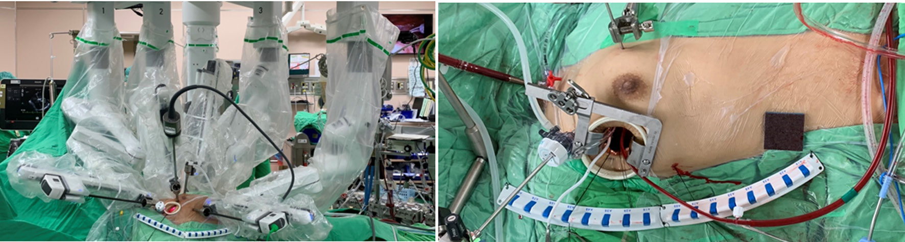
出典: Wei LY, et al. Ann Cardiothorac Surg 2025;14(3):210-217. doi:10.21037/acs-2024-ravr-0185. CC BY-NC-ND 4.0（原図を改変せず掲載）。
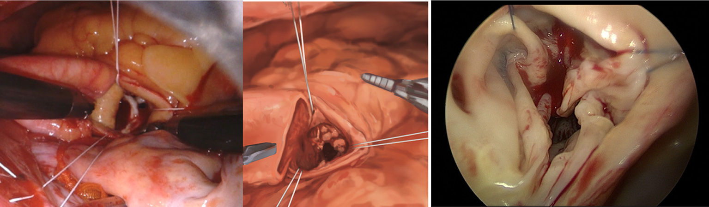
出典: Wei LY, et al. Ann Cardiothorac Surg 2025;14(3):210-217. doi:10.21037/acs-2024-ravr-0185. CC BY-NC-ND 4.0（原図を改変せず掲載）。

出典: Goto Y, et al. Cureus 2025;17(6):e86081. doi:10.7759/cureus.86081. CC BY 4.0（原図を改変せず掲載）。

出典: Goto Y, et al. Cureus 2025;17(6):e86081. doi:10.7759/cureus.86081. CC BY 4.0（原図を改変せず掲載）。
7.2 AVR + 僧帽弁
順序の原則（WVU）
これは心筋保護の問題として整理されている。
| 状況 | 順序 |
|---|---|
| AS（有意なARなし）＋心内併施 | 左房切開を先に。僧帽弁形成/置換や Cox-Maze を済ませてから RAVR |
| 有意なAR | 先に大動脈を開けて冠動脈口から心筋保護液を投与してから心内手技へ |
| 右側 Cox-Maze／三尖弁 | 縦方向の右房切開でアクセス |
| Cox-Maze + 僧帽弁 + 三尖弁 | Cox-Maze → 僧帽弁 → 三尖弁の順。組織の解凍時間を確保するため |
| 共通 | 左右の心房切開を閉じてから RAVR を最後に行う |
器械配置の実務：Arm 3 には最初 dual blade 心房リトラクターを入れ、 大動脈切開が必要になるまで保持する。左房を開けたら 左室ベントを左下肺静脈へ。僧帽弁の手技が併施の唯一の追加なら、 左房閉鎖の前に完成した僧帽弁を越えて左室ベントを留置し、4-0 PTFE で閉じる。
経左房 vs 経大動脈
僧帽弁に左房切開でアクセスしない選択肢がある。 Pitsis らの TEAVR（完全内視鏡下AVR）＋経大動脈的僧帽弁形成である。
- 3 cm の右傍胸骨作業孔（第2肋間）＋同肋間の外側（右前腋窩線の前方）に 10 mm の 3D 30° 内視鏡ポート
- Chitwood クランプは第1肋間の別の 3 mm stabから
- 右上肺静脈ベントは第5肋間・前腋窩線の 3 mm stabから
- 大動脈横切開は大動脈の fat body の近位（右冠動脈の 3 cm 遠位）
- 大動脈弁輪内に金属ネット開創器（Fehling）を挿入して僧帽弁尖を展開する。 著者らはこれを「弁輪を開いたまま凍結させるのに不可欠 — 大動脈弁輪が虚脱していると僧帽弁の手術はできない」と強調している
- 二次性MRには A2–P2 の edge-to-edge（水平マットレス、Teflon 補強 PTFE、 5〜7 mm 以上の深い bite）
- 一次性MRには人工腱索（長さは術前TEEで算出）
利点は明快で、心房切開を回避することで遮断時間とCPB時間の延長を避ける。 同院は2年間で200例超の TEAVR を行っている。
rapid deployment 弁を使う場合
University of Chicago（Kitahara / Balkhy ら）の完全内視鏡下 AVR＋僧帽弁形成は、 弁のサイザーを通すための 20 mm が最大の切開という点で極端である。 順序は僧帽弁が先（左房を開けて 36 mm セミリジッドバンドを 3-0 Prolene の連続マットレスで、Cor-Knot で結紮。P2 の cleft を 5-0 で閉鎖）、 次いで AVR。
AVR パートの独特な工夫：
- 順行性心筋保護カテーテルを抜いて、その刺入部で横切開する
- 弁尖と弁輪石灰化をロボット剪刀で鋭的に切除し、生理食塩水で洗浄
- 左アームポートを一時的に抜き、Hegar 拡張器（12–19 mm）で創を広げて rapid deployment 用サイザーを入れる。soft tissue retractor を置いてから 左アームポートを再挿入する
- 各尖のナディアに 3本の stay sutureを置いて作業孔から外へ
- 左右冠動脈へ選択的に追加の心筋保護液を流している間に、体外で弁に糸を通す
- 弁を挿入して直視下に展開、4 psi で 30秒バルーン拡張
- 大動脈切開を 4-0 の2層連続で閉じるが、完全に閉じる前に 左室内に吸引管を残したまま左房切開を 4-0 で閉じ、 緩徐なValsalva 手技で入念に脱気してから完全閉鎖する
術後 TEE で平均圧較差 5 mmHg・PVLなし。
33例の集計（rapid deployment を用いたロボット内視鏡下AVR、2019年以降）： 平均71歳、STS 2.3、既往心臓手術 12%、併施 11例（僧帽弁形成5・TECAB 2・ AFアブレーション4）、正中転換ゼロ・周術期死亡ゼロ・脳梗塞ゼロ、入院 4.5日。
成績 — NTUH の 67例
現時点で最大の複合弁シリーズが NTUH（2015年1月–2024年11月）である。 ロボット 8例＋内視鏡 59例＝67例。
| 指標 | 全体 | ロボット | 内視鏡 |
|---|---|---|---|
| 死亡 | 0% | 0% | 0% |
| 開胸への転換 | 0% | 0% | 0% |
| 手術時間（分） | 296±102 | 302±108 | 288±100 |
| CPB（分） | 199±28 | 194±28 | 199±28 |
| 遮断時間（分） | 151±22 | 155±23 | 150±22 |
| 換気時間（時間） | 4.7±2.2 | 5.6±2.3 | 4.7±2.3 |
| 感染 | 1.5% | 0% | 1.7% |
| 術後心房細動 | 26.9% | 37.5% | 25.4% |
| ICU（日） | 1.9±1.1 | 2.1±1.0 | 1.9±1.1 |
| 入院（日） | 10.0±2.7 | 12.3±1.9 | 9.6±2.6 |
85%超がNYHAクラスの改善を示した。EuroSCORE II は 8.0±3.9。 大動脈弁は78%が生体弁（Perceval 11.9%、Intuity Elite 14.9%）、 僧帽弁は置換が生体弁 50.7%・機械弁 32.8%、形成では 弁輪縫縮のみ 54.5%・人工腱索 24.2%・交連閉鎖 21.2%。
入院10日は西欧の報告より長いが、著者らは 台湾の公的保険が入院費を包括的に給付するため、患者が納得するまで在院するという 制度上の理由を挙げている。
この成績を成り立たせているのは厳格な除外基準である。
- 胸腔内癒着の所見があるもの（ロボット/内視鏡器械の到達が妨げられる）
- 末梢動脈閉塞性疾患 — 具体的にはスクリーニングCTで腸骨大動脈の高度石灰化があり、 かつ血管エコーで大腿動脈波形が単相性なら不適
- 大動脈基部拡大を要する高度大動脈石灰化
- LVEF <40%
- 緊急手術
改善しなかった 15% の大半は術前 NYHA II のまま。 6例が II → III に悪化したが、全員が80代で CKD・肺高血圧・可動性低下を伴っていた。
遮断時間という代償
複合弁で最も注意すべき数字は遮断時間である。 NTUH で 151±22分、Kitahara らの MMCTS 症例は単一症例だが、 Goto らの内視鏡二弁で 98分、Arai らの TECAB＋僧帽弁で 115±33分。 3.5節で STS が示した心内トラックの目標 （皮切→ヘパリン <90分、遮断まで <30分、弁輪運針→リング release <45分、 心房閉鎖 <30分）は単弁を前提にした値であり、複合弁ではこれが積み上がる。 だからこそ Phase IV の術式なのである。
7.3 僧帽弁 + 三尖弁
エビデンスが最も揃っている併施である。ガイドラインは 中等度以上のTR、または三尖弁輪径 ≥40 mmなら変性僧帽弁形成時に 三尖弁形成を併施することを推奨している（長期の臨床・心エコー成績が改善するため）。 問題は「ロボットでも同じことが言えるか」だった。
Mayo Clinic の答え（2014年1月–2022年5月、ロボット僧帽弁形成 839例のうち、 中等度以上のTRまたは弁輪径 ≥40 mm を満たした 76例）：
| 単独 MVr（19例・25%） | MVr + TVr（57例・75%） | P | |
|---|---|---|---|
| CPB時間 | 85分 | 130.6分 | <.05 |
| 遮断時間 | 55.4分 | 91分 | <.05 |
| ICU滞在 | 27.7時間 | 27.7時間 | .24 |
| 入院 | 4.2日 | 4.4日 | .24 |
| 周術期死亡 | 0 | 0 | — |
| 房室ブロック | 0 | 0 | — |
| 生存・再手術回避（中央値 46 / 16ヶ月） | 100% | 100% | — |
三尖弁を足すコストは、CPB +46分・遮断 +36分だけで、 ICU・入院日数には全く現れず、死亡もブロックもゼロだった。
弁輪縫縮の内訳は 63 mm の Medtronic 柔軟バンドが 51例（89.4%）、 26/28 mm の部分リング 5例（8.7%）、DeVega 縫合 1例（1.7%）。 全例で心停止下に弁輪縮小を行っている。 虚血期には2名の術者が入る体制で、作業孔は第4肋間 2〜4 cm。
なお非ロボットの内視鏡下 MICS でも同様の結論が出ている。 Vienna の 153例（2008–2022、僧帽弁＋1つ以上の併施）では、 三尖弁形成 52例（34%）、PFO/ASD閉鎖 34例（22.2%）、 左心耳閉鎖 25例（16.3%）、電気生理学的手技 101例（66.0%）。 2手技併施 98例（64.1%）・3手技 49例（32%）・4手技 6例（3.9%）。 手術成功 99.3%、僧帽弁形成率 88.9%、30日死亡 0.7%、神経学的合併症 4.6%、 再手術回避 5年 98% / 10年 96.5%。
7.4 弁 + 冠動脈
最も意見が割れる併施である（2.5節）。 Cleveland Clinic はCABG併施にロボットを使わないと明言し、 WVU / Chicago はプラットフォームの一部として扱う。 現時点で症例報告と小シリーズしかないことは押さえておくべきである。
(a) 単一切開・右側方から（WVU / Murtaza ら）
右 transaxillary の1切開で、弁と冠動脈の両方を扱うという発想である。 鍵は2つ。
- LITA は右側からのアプローチで採取できる
- 心停止後に左心膜を marsupialize（胸壁に縫着）して心臓を回転させ、 LAD を露出する
提示された2例はいずれもハイリスクである。
| 症例1 | 症例2 | |
|---|---|---|
| 背景 | 73歳フレイル女性、COPD、BMI 17、脳梗塞既往、開頭術を要した硬膜下血腫 | 70歳フレイル女性、重症COPD、左膿胸既往、BMI 21 |
| 病態 | 重症AI＋近位LAD高度狭窄 | 高度リウマチ性MS＋中等度MR＋LAD1枝病変 |
| STS予測死亡 | 10% | 8.6% |
| 判断 | ハートチームがTAVRを不安全と判断 | 中等度MR併存のためバルーン弁形成術に不適 |
| 順序 | AVRを先（重症AIのため冠動脈口から順行性心筋保護）→ LAD | LADを先（シャント留置、end-to-side）→ 僧帽弁置換 |
| 吻合 | side-to-side（展開を容易にするため選択）、7-0 running | end-to-side、7-0 running |
| 退院 | POD 6 | POD 5 |
症例2 で LAD を展開した方法が特徴的である。 右側方ポートから Tentacles（吸引デバイス）を入れ、LADの外側に置き、 左胸壁を通した心膜 marsupialization 糸で上方へ引いて心臓を軸回転させる。
(b) 左右の胸腔を使い分ける（Chicago / Arai ら）
Chicago は以前右胸のみから TECAB＋僧帽弁形成を報告していたが、 近年は bilateral アプローチに移行した。理由は 先に off-pump TECAB を済ませることで CPB 時間を短縮できるためであり、 加えて左胸からの方が標的血管の展開と多枝TECABがやりやすいからである。
| TECAB（左胸・da Vinci Si） | 僧帽弁形成（右胸・da Vinci Xi） | |
|---|---|---|
| カメラ | 12 mm・第4肋間 | 8 mm・第4肋間 → 第5肋間へ移設 |
| アーム | 8 mm・第2 / 第6肋間 | 第2 / 第6肋間 |
| その他 | 12 mm スタビライザーポートを剣状突起の外側 | 最初のカメラポートを Alexis XXS に替えて 8 mm 作業孔、 |
| 新しいカメラポートは同肋間のより内側 |
順序と要点：
- 左胸に CO2、off-pump TECAB。LITA を skeletonize
- 縦隔脂肪を剥離し右胸腔を開けておく — 後で右胸から LITA をクランプするため
- ヘパリン化（ACT 300秒）後、20G硬膜外カテーテルで LITA にパパベリン
- LAD 切開＋1.5 mm シャント、7-0 Pronova の double-armed 連続で end-to-side。 TTF 85 mL/分・PI 1.3
- 第1対角枝を展開、1.75 mm シャント、連続する side-to-side の sequential 吻合。 TTF 50 mL/分・PI 1.7
- プロタミンでヘパリンを完全に中和、24Fr ドレーン留置、心膜を部分閉鎖、 左肺再膨張、ロボット undock
- 右胸に移り、僧帽弁。CPB は右大腿動静脈のカットダウン、30 ℃ に冷却
- 右室に心表面一時ペーシングワイヤ → 800 bpm の rapid pacing で細動性心停止
- Sondergaard 溝から僧帽弁へ。dynamic atrial retractor で展開
- 後乳頭筋から P1・P2 へ CV-4 Gore-Tex 人工腱索を figure-of-8 で。 34 mm セミリジッド部分リング（Simulus）を trigone–trigone に 3-0 Prolene 連続マットレスで
提示例（80歳男性）は術後3日で退院、4週で完全に活動復帰。
bilateral アプローチ 8例の集計：死亡ゼロ、在院日数中央値 2.8日。 平均年齢 68±5.7歳、STS 4.0±2.2%、CPB 218±108分、遮断 115±33分、 ICU 1.6±0.5日、入院 2.8±0.7日。3例で細動性心停止を用いた。
適応の線引きが明快である。
- bilateral アプローチは LAD、または LAD＋対角枝を1本のITAで再建する症例に限定
- 右冠動脈のグラフトが必要なら、右胸から RITA を使って完全に右側で行う
- 細動性心停止を選ぶのは、腸骨大腿動脈が細い/病変がある/蛇行していて エンドバルーンに適さない症例。ただしARがなく左室機能が正常であることが条件
(c) 国立循環器病研究センターの報告（抄録のみ）
PMID 41690664（Ann Thorac Surg 2026）は、 重症MR＋近位LAD狭窄の2例に、ロボット僧帽弁形成＋on-pump CABG（ロボット採取ITAで LADへ）を行い良好な成績を得たと報告している。 本文は購読誌のため未取得で、抄録に明記された内容のみを引く。 本レビューの他の記載（Chicago の off-pump bilateral、WVU の単一切開）と並べると、 「弁＋LAD」という同じ問題に3つの異なる解が提案されていることになる。
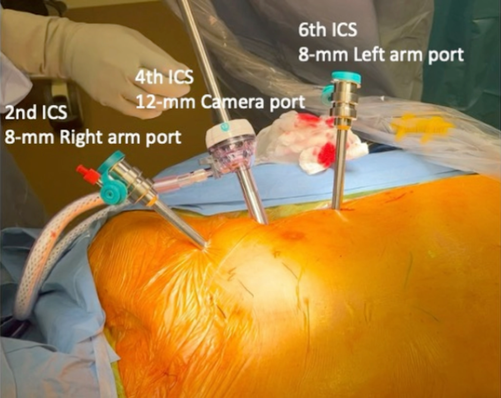
出典: Arai A, Kitahara H, Balkhy HH. JTCVS Tech 2026;35:102169. doi:10.1016/j.xjtc.2025.102169. CC BY-NC-ND 4.0（原図を改変せず掲載）。
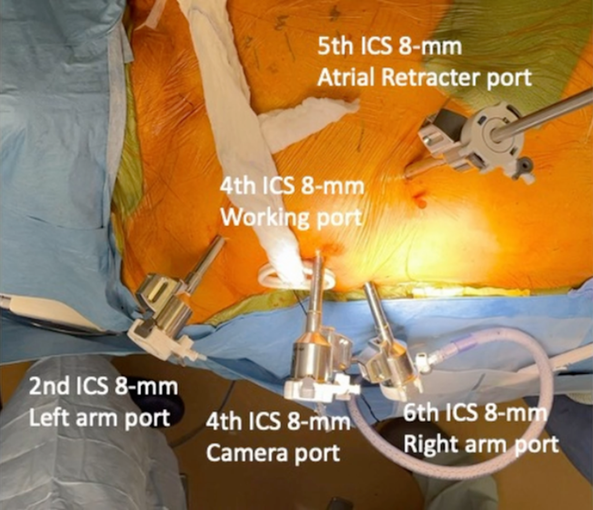
出典: Arai A, Kitahara H, Balkhy HH. JTCVS Tech 2026;35:102169. doi:10.1016/j.xjtc.2025.102169. CC BY-NC-ND 4.0（原図を改変せず掲載）。
7.5 弁 + 不整脈手術（Cox-Maze / 左心耳）
これは併施の中で最も定着している。実施率の高さがそれを示す。
- Vienna の MICS 153例：電気生理学的手技 66.0%、左心耳閉鎖 16.3%
- 大阪公立大のロボット僧帽弁 100例：Maze 20%、左心耳閉鎖 25%、三尖弁形成 22%
- WVU：RAVR 開始から 4ヶ月で初の併施 biatrial Cox-Maze
順序（Cox-Maze を含む場合）
WVU の規則（7.2節の再掲）： 左側 lesion set → 右側 lesion set → 左心耳結紮。 僧帽弁/三尖弁も要るなら Cox-Maze を先に行い、 組織が解凍する時間を確保してから僧帽弁、次に三尖弁。
WVU が逆行性心筋保護を使わない理由の1つが、 Cox-Maze III の lesion set では心表面の冠静脈洞ラインを引く必要があるからである （5.3節）。
手技の実際（Yale / Amabile ら、MMCTS）
66歳男性、右室ペーシングリード抜去後の医原性重症TR（中隔尖の裂傷）に対する 完全内視鏡下ロボット三尖弁形成＋biatrial CryoMAZE。
- 経皮的に大腿動脈＋内頸静脈からCPB、Chitwood 経胸壁クランプ、 上下大静脈をスネア、Waterston 溝から左房へ
- 左心耳を心房内側から閉鎖する — 理由が2つ明記されている： (i) 止血的な閉鎖を得るため（心表面からも可能）、 (ii) 僧帽弁平面の視野を最適化するため
- 左側 CryoMAZE：心表面の冠静脈洞ライン、僧帽弁ライン、肺静脈ライン、 左心耳基部を各2分間の凍結
- 左房を閉じ、右房を切開して三尖弁へ
- 三尖弁形成：裂けた中隔尖の先端を右室壁の乳頭筋様構造に再固定、 複数の cleft を閉鎖、34 mm 弁輪縫縮バンド
- 右側 CryoMAZE：峡部ライン、上下大静脈、右心耳を各2分間
結果は微量TR・平均圧較差 1 mmHg、洞調律で退院、6ヶ月後も無症状・洞調律。
成績 — ロボット vs 非ロボット（傾向スコアマッチング）
Rufa らは、cryoablation 併施の僧帽弁手術でロボットと ビデオ補助MICSを直接比較した（2017年1月–2022年3月、 MIMVS 294例・RMV 187例 → 22変数で 1:1 マッチして 104例）。
- 中央値 EuroSCORE II 3.14（IQR 1.93–4.99）、年齢中央値 68歳、2/3が男性
- 72.1% が僧帽弁手術、26.9% に三尖弁手技を併施、僧帽弁置換は 4例（3.8%）のみ
- 左房 Maze 87.5%、両心房 Maze 12.5%、左心耳閉鎖 72.1%
- 背景・術中因子・術後の短期/中期成績のいずれにも有意差なし
- 院内死亡・30日死亡ともにゼロ
- 中期生存も同等（log-rank P=0.056）
- 追跡時の洞調律維持率 76%（追跡中央値2年、追跡率100%）
結論は率直で、「僧帽弁または二弁の形成＋cryoablation は、 MIMVS でもロボットでも安全に行え、いずれも優れた早期・中期成績を示す」。 つまりこの併施に関してはロボットの優位性は示されていない。
7.6 どこまで足せるか — 線引き
足せる側（実際に報告があり、成績が示されているもの）：
| 併施 | エビデンスの質 |
|---|---|
| 僧帽弁 + 三尖弁 | Mayo 57例。遮断+36分のみのコスト、死亡・ブロックゼロ |
| 僧帽弁 + Cox-Maze / 左心耳 | 傾向スコアマッチング 104例。ロボット/非ロボットで差なし |
| 僧帽弁 + PFO/ASD閉鎖 | Vienna 153例に含まれる |
| AVR + 僧帽弁 | NTUH 67例。死亡0・転換0、ただし遮断 151±22分 |
| AVR + 大動脈基部拡大 | WVU 約12.3%。死亡・再入院・出血再開胸ゼロ |
| AVR + 中隔心筋切除 | 症例報告レベル。1年で LVOT圧較差 4 mmHg |
| 三尖弁 + biatrial CryoMAZE | 症例報告レベル |
線引きが必要な側：
- 弁 + 冠動脈は、症例報告と 8例の小シリーズしかない。 Cleveland Clinic は明確に行わない立場である。 行っている施設もLAD（±対角枝）に限定し、 RCAが要るなら別のアプローチに切り替えている
- NTUH の除外基準（LVEF <40%、根部拡大を要する高度石灰化、 単相性波形を示す末梢動脈疾患、胸腔内癒着、緊急）は、 複合弁を安全に成立させている実際の枠として参考になる
- 遮断時間が積み上がる。単弁の目標時間（3.5節）は 複合弁には適用できない。「生理学的予備能があるか」という Loulmet らの MAC に関する問い（4.5節）が、そのまま複合弁にも当てはまる
なお、ロボット僧帽弁の同時手術に関する総説（Semin Thorac Cardiovasc Surg 2025、 PMID 39672523、本文未取得）は抄録で次のように述べている — 「三尖弁閉鎖不全と心房細動を同時に扱うことの重要性を支持するエビデンスが増えており、 ロボット術者は適応があれば適切な同時手技を行うよう推奨されるべきである」。 足せるかではなく足すべきかという問いに、 少なくとも三尖弁とAFについては答えが出つつある。
8. Others
8.1 心房中隔欠損 — 「切開線の向き」が遮断時間を半分にする
ASD は robotic の良い導入症例とされる（若年・低リスク・比較的単純）。 Halkos らも「左房粘液腫のような単独手技は、導入初期でも比較的合併症が少ないので ロボットで扱ってよい症例」と述べている。
しかし robotic 特有の落とし穴がある — 完全内視鏡下では ASD の rim 全周を 明瞭に展開するのが難しい。Asan Medical Center はこれを右房切開線の向きで解決した。
2007〜2021年の da Vinci Si による ASD 閉鎖 114例（平均 38.7±12.8歳）を、 従来の斜切開（CON） と 心房間溝に平行な垂直右房切開（VRA） で比較している。
| 指標 | VRA群 | CON群 | P |
|---|---|---|---|
| CPB時間 | 92.8±31.5分 | 143.1±40.7分 | <.001 |
| 大動脈遮断時間 | 30.7±21.3分 | 60.8±23.5分 | <.001 |
| 死亡・手術合併症 | ゼロ | ゼロ | — |
（IPTW で背景を調整した後の値）
遮断時間が半分になる。切開線を心房間溝に沿った垂直方向にするだけで、 ASD の rim 全周が視野に入るためである。ポート配置も器械も変えていないのに、 切開の向きだけでこれだけ変わる、というのが本章で最も再現しやすい教訓である。
なお 2.4節で述べたとおり、 ASD のポート配置は器械ポートが前腋窩線の前方と後方に分かれ、僧帽弁とは逆の配置になる。
冠静脈洞型ASDという稀な亜型にも robotic は使えている。 大阪公立大の報告（72歳男性、Qp/Qs 2.1:1、三尖弁輪 50 mm の拡大を伴う）では、 右房切開から完全内視鏡下に修復し、三尖弁輪縫縮を併施した。 著者らが robotic を選んだ理由は明快で、 「高画質の術野により、僧帽弁輪と冠静脈洞の境界を正確に同定できる」ためである。
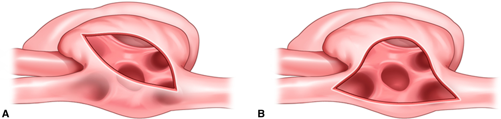
出典: Kim K, et al. JTCVS Tech 2024;28:73-81. doi:10.1016/j.xjtc.2024.05.022. CC BY-NC-ND 4.0（原図を改変せず掲載）。
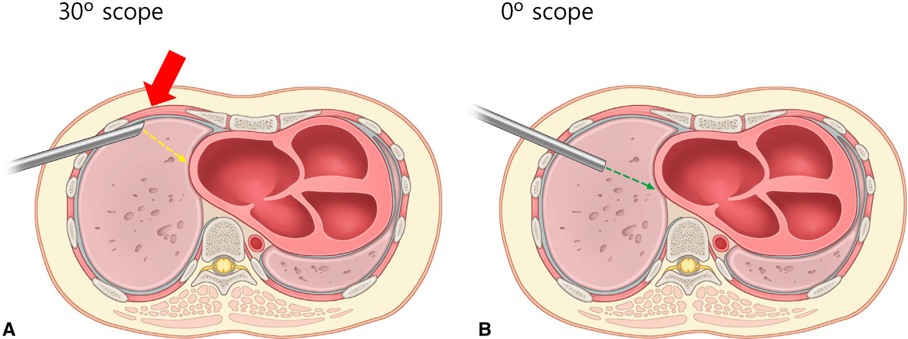
出典: Kim K, et al. JTCVS Tech 2024;28:73-81. doi:10.1016/j.xjtc.2024.05.022. CC BY-NC-ND 4.0（原図を改変せず掲載）。
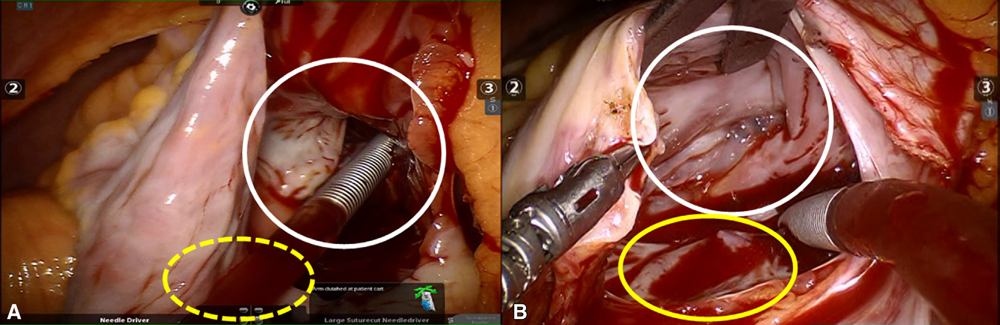
出典: Kim K, et al. JTCVS Tech 2024;28:73-81. doi:10.1016/j.xjtc.2024.05.022. CC BY-NC-ND 4.0（原図を改変せず掲載）。
8.2 心臓腫瘍 — 「掴まない」ための工夫
左房粘液腫は右側からの左房切開で直視できるが、 ゼラチン様で脆いため操作で容易に損傷し、肺静脈や左室への塞栓・播種を起こしうる。 だから腫瘍と心内膜の付着部を一塊として切除するのが原則である。 しかし大きい粘液腫では、特にロボットの小切開では一塊切除が難しい。
千葉西総合病院の Nakamura らは、この矛盾を超音波吸引器で解いた。
手技：
- 作業孔（3 cm、ロボットカメラポートを兼ねる）は第4肋間・左前腋窩線、 左右アームは第3・第6肋間、リトラクターポートは乳輪切開から
- CPB は右大腿動脈＋大腿静脈・頸静脈。陰圧補助脱血 40–60 mmHg
- 上行大動脈は Cygnet 柔軟クランプ、順行性晶質性心筋保護
- 右側からの左房切開で dynamic retractor により腫瘍を展開、 柔軟吸引管で無血野を作る。まず小片を採取して迅速病理で確認
- Sonopet iQ 超音波吸引器をベッドサイド術者が作業孔から挿入し、 ロボット補助で腫瘍に当てる。設定は 超音波出力 50%・吸引圧 70%・灌流 15 mL/分
- 腫瘍をカメラ側から徐々に破砕・吸引する。 大部分を debulk すると 1 cm 程度の弾性硬な核が左房心内膜に付着したまま残る
- 付着部の左房心内膜を 5 mm のマージンをつけて全層切除する。 マージンに不安があれば追加の円形切除
- 摘出時は EndoCatch 回収袋（左房内や左胸腔への落下防止。必須ではない）
- 付着部の心房中隔が薄い／右房と交通した場合は 4-0 モノフィラメントで閉鎖。 陰圧補助脱血下では小さな交通は問題にならないが、 大きな交通があると air block や高炭酸ガス血症のリスクがある。 したがって付着部の中隔が卵円窩のように広く薄いと予想されるなら、 あらかじめ上下大静脈をスネアしておく
3例で平均遮断 58分・CPB 109分、いずれも良好な経過。
この手技の本質は視野の問題を解いている点にある。 ロボットの左房腫瘍切除では、カメラは大きな腫瘍の手前しか見えず、付着部が隠れる。 吸引が進むにつれて左房壁が見えてきて、核だけになった時点で付着部が明瞭になり、 残存腫瘍と心内膜を安全確実に切除できる。
注意点も明記されている — 僧帽弁尖と左房心内膜は Sonopet の短時間接触では損傷しないが、 数秒以上の接触が続くと損傷の危険がある。したがって ロボットカメラで先端の位置を常時監視しながら当てる。 なお Sonopet は神経外科・肝臓外科・整形外科で20年以上使われてきたが、 心臓外科ではAVR時の大動脈弁の石灰除去に限られていた。
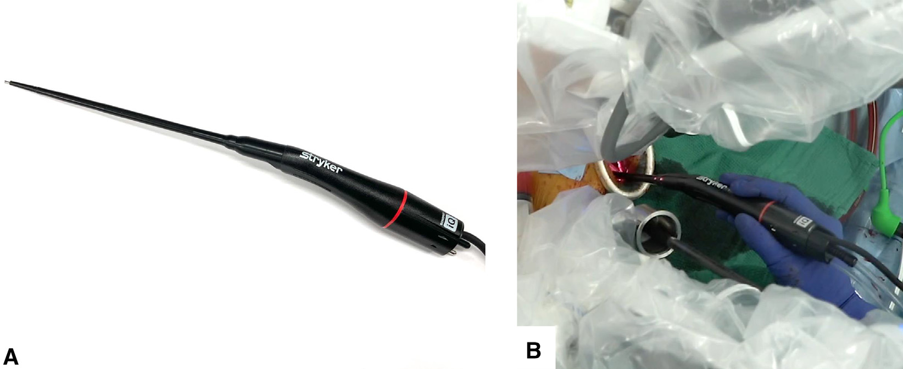
出典: Nakamura Y, et al. JTCVS Tech 2025;29:100-102. doi:10.1016/j.xjtc.2024.10.005. CC BY-NC-ND 4.0（原図を改変せず掲載）。
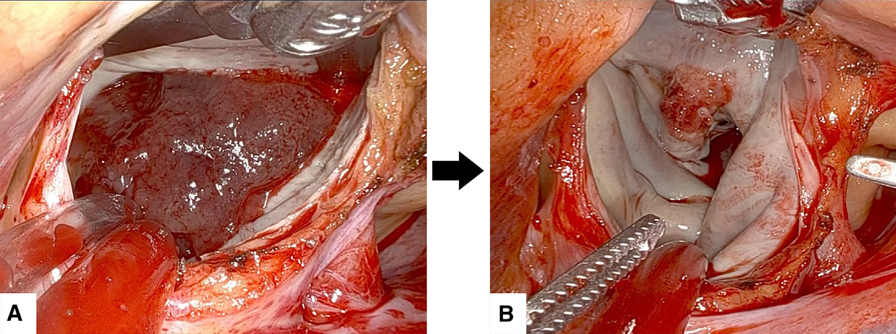
出典: Nakamura Y, et al. JTCVS Tech 2025;29:100-102. doi:10.1016/j.xjtc.2024.10.005. CC BY-NC-ND 4.0（原図を改変せず掲載）。
8.3 不整脈・左心耳 — 「閉じたつもり」が閉じていない
(a) 単独の心表面ハイブリッドアブレーション
長期持続性AFに対する robotic 支援の単一側胸腔鏡下心表面アブレーションが 欧州で初めて報告された（Humanitas Gavazzeni、2023年4〜12月、18例、 平均64±5歳、AF罹病期間 4±2年）。
- 左胸腔鏡のみ、da Vinci X ＋ Epi-Sense（AtriCure）デバイス
- 人工心肺なし・心拍動下
- lesion set は肺静脈と左房後壁の隔離＋左心耳閉鎖＋Marshall靱帯の離断
- RF は30 W × 90秒の pre-set。吸引で密着を確保し、生理食塩水で持続冷却
- 心電図波形と point-by-point のインピーダンス低下でモニタしながら焼灼
- 食道温を7点で連続監視（37.2 ℃ 未満を維持）
- 術前は CT または MRI を撮る。MRI は造影の反復を避けつつ左房の3D解剖と 遅延造影による左房線維化を評価でき、加えて胸壁解剖からポート配置を計画できる
結果：全例で完遂、重大合併症なし、平均手術時間 142±22分、 正中切開や小開胸への転換ゼロ、83%が手術室で抜管、ICU 24時間未満、 急性期の洞調律回復 12/18（67%）、在院日数中央値2日。 3ヶ月後に電気生理学的検査＋心内膜側アブレーションを計画し、 ギャップを埋めた時点で全例が洞調律で退院した。
これは「Cox-Maze の有効性を、より低い侵襲で再現する」試みの延長線上にある。 Cox-Maze は1987年以来 80〜90% の洞調律維持を示すが、 侵襲性とカテーテルアブレーションに比べた高い罹病率が、 特に孤立性AFでの使用を制限してきた。
(b) 左心耳閉鎖 — 3つの方法と、それぞれの「不完全閉鎖」
ガイドラインは心臓手術時の左心耳閉鎖を Class I としている。 問題は「閉じたか」を術後に確認すると、想像以上に閉じていないことである。
方法1：心内膜側からの縫合閉鎖（左房内から）
Yale の Amabile らはroutine で心房内側から左心耳を閉じる。理由は (i) 止血的な閉鎖、(ii) 僧帽弁平面の視野を最適化するの2つ。 Loulmet らも MAC 症例で4-0 Gore-Tex の往復連続縫合で左心耳を閉じ、 それを下肺静脈と僧帽弁輪の間の左房壁の plication まで延長している。
しかし千葉西総合病院の 125例（うち100例が術後CT）では、 完全閉鎖は 76%、24% が不完全閉鎖だった。 不完全部位は僧帽弁との接合部、または縫合の開始点に典型的で、 造影剤が微小な縫合線の漏れから左心耳内にびまん性に充満する像を呈する。 著者らはこれを "speech bubble"（吹き出し）サインと命名した。 不完全閉鎖は三尖弁形成の併施とV1誘導の f 波低振幅と関連していた （24ヶ月の脳梗塞率には群間差なし）。
結論は率直である — 「ロボットによる直視下でも 24% で不完全閉鎖が起きた。 技術だけでなく解剖学的因子の寄与が大きいと考えられる。 長期持続性AFの高リスク例では、内腔の圧挫や外側クリップの方が閉鎖成功率を高めうる」。
方法2：閉塞的（obliterative）心内膜縫合
同じグループがこの失敗様式を狙って改良した手技である。
- 左心耳の遠位半分を反転させる
- 櫛状筋に沿った斜めのライン上で 3-0 barbed 糸の巾着縫合で圧縮する
- 本来の向きに戻す
- その上でポリプロピレンによる2層の入口部閉鎖を行う
ロボット僧帽弁手術（またはASD修復＋三尖弁手技）に併施した 24例（年齢中央値71.5歳）で、 転換ゼロ、介入を要する術中出血ゼロ、周術期死亡・脳梗塞・心筋虚血イベント・ 再開胸・左回旋枝損傷ゼロ。そして 3〜6ヶ月の心電図同期CTで全例が完全閉鎖（造影剤の流入なし、残存腔なし、 心嚢液貯留なし、心耳周囲血腫なし）。
入口部だけ閉じるのではなく、内腔そのものを潰すという発想の転換であり、 デバイス費用も追加侵襲も要らない点が実務的である。
方法3：心表面クリップ（AtriClip）
MMCTS の手技（Baudo ら、AtriClip Pro2、ロボットCABG併施）の要点：
- ポートは鎖骨中線の第2・第4・第6肋間に 8 mm を3本、CO2 は 6〜10 mmHg
- ドッキング前に肋間の cryo nerve block（−65 ℃ × 120秒、 神経節から2 cm以上・脊椎基部から4 cm以上離す）
- 心膜切開の前に左横隔神経を同定。切開は下横隔膜側と左肺静脈の前方に、 肺動脈と心膜の反転部まで頭側へ大きく開ける
- pocking テクニックで、左心耳の位置と伸展に応じてAtriClip を入れる最適な肋間を選ぶ
- 最後の 12 mm 作業ポートを中腋窩線に。8 mm ダイレータ → 12 mm ダイレータ → 12 mm AirSeal ポートの順で挿入する （弁がなく、大きな漏れや強い吸引下でも安定した気胸圧を保てるため）
- 4-0 ポリプロピレンを心膜切開の前縁にかけて外に出し、左心耳の露出を最大化する
- 解剖学的ランドマーク（左回旋枝・両肺静脈・左肺動脈）を同定する
- 軟性パッドを2枚入れてロボット器械による左心耳組織の損傷を防ぐ
- キット付属のサイザーで左心耳 stump を計測（提示例は 40 mm AtriClip Pro 2）
- クリップを開いて左心耳を軟性パッドと非外傷性グラスパで中に納める。 クリップを展開する際は、左回旋枝を含む他の組織を掴まないよう細心の注意
- クリップを閉じるがデリバリーツール内に保持したまま、 複数のTEE断面・心電図ST・血行動態を確認してから最終リリースする
それでも不完全閉鎖は起こる。国立循環器病研究センターの報告 （2018年12月–2024年10月、ロボット僧帽弁手術＋AtriClip PRO 129例のうち 術後造影CTのある 45例、年齢中央値67歳）：
| 指標 | 数値 |
|---|---|
| 術前 左心耳入口部径（中央値） | 29.3 mm（26.8–32.1） |
| 不完全閉鎖（造影剤の流入＋stump >10 mm） | 12例（26.7%） |
| うち大きな血栓を認めた | 2例 |
| 入口部径とクリップサイズの差 <10 mm の場合の不完全閉鎖率 | 33.3% vs 0%（P<.026） |
つまりクリップは「1サイズ余裕を持って大きめを選ぶ」ことが要点であり、 術前造影CTで入口部径を実測してサイズを決めることが推奨される。 著者らは横洞アプローチでの左心耳閉鎖には技術的な難しさがあることも指摘している。
3つの方法を並べると構図が見える。
| 方法 | 不完全閉鎖率 | 失敗様式 | 対策 |
|---|---|---|---|
| 心内膜側 入口部縫合 | 24% | 僧帽弁接合部・縫合開始点からの微小漏れ（speech bubble） | 内腔の閉塞的処理へ |
| 心内膜側 閉塞的（反転＋巾着＋2層閉鎖） | 0%（24例、3–6ヶ月CT） | — | — |
| 心表面クリップ | 26.7% | 入口部径に対しクリップが小さい | CTで実測し、差 ≥10 mm を確保 |
いずれも術後の心電図同期CTで確認しなければ分からない。 「直視下で閉じたから大丈夫」は robotic であっても成立しない。
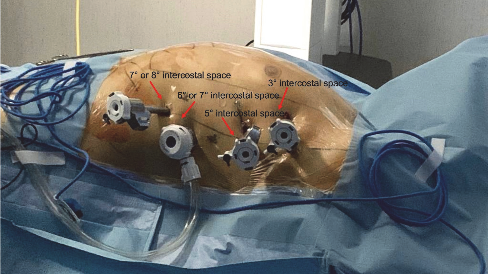
出典: Agnino A, et al. J Clin Med 2024;13(6):1563. doi:10.3390/jcm13061563. CC BY 4.0（原図を改変せず掲載）。
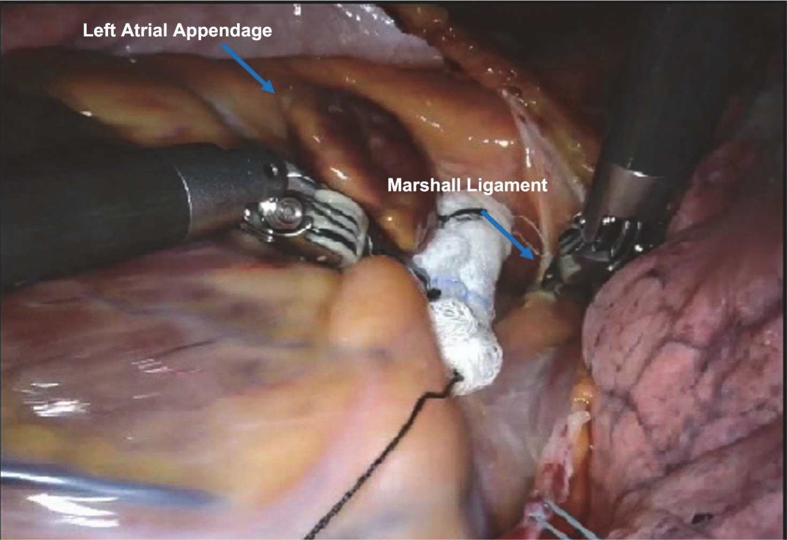
出典: Agnino A, et al. J Clin Med 2024;13(6):1563. doi:10.3390/jcm13061563. CC BY 4.0（原図を改変せず掲載）。
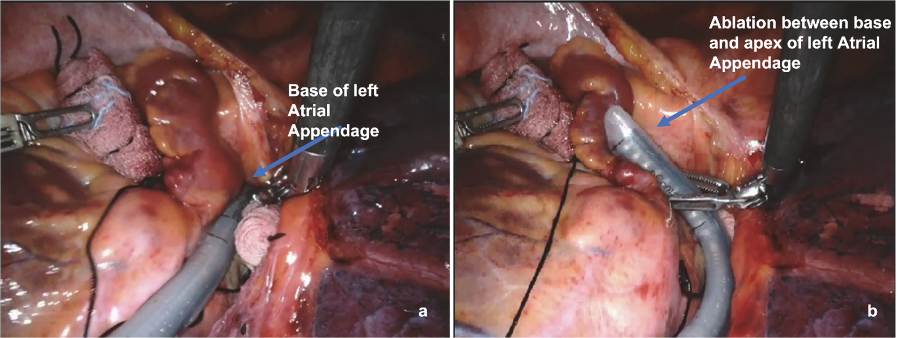
出典: Agnino A, et al. J Clin Med 2024;13(6):1563. doi:10.3390/jcm13061563. CC BY 4.0（原図を改変せず掲載）。
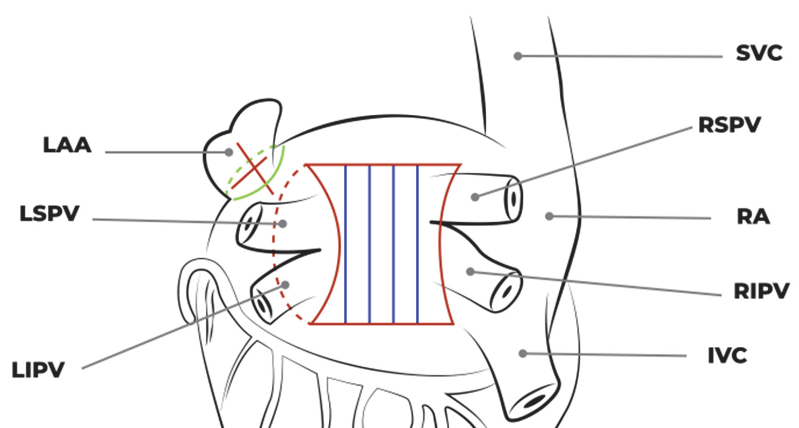
出典: Agnino A, et al. J Clin Med 2024;13(6):1563. doi:10.3390/jcm13061563. CC BY 4.0（原図を改変せず掲載）。
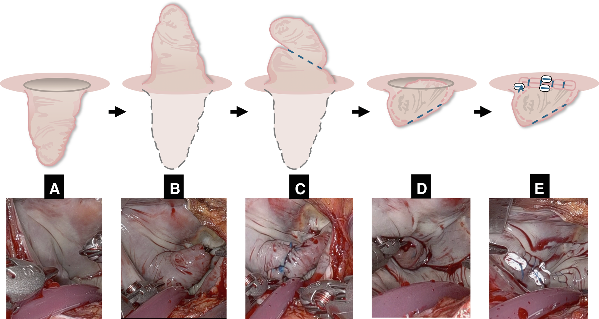
出典: Nakamura Y, et al. JTCVS Tech 2026;36:102268. doi:10.1016/j.xjtc.2026.102268. CC BY-NC-ND 4.0（原図を改変せず掲載）。
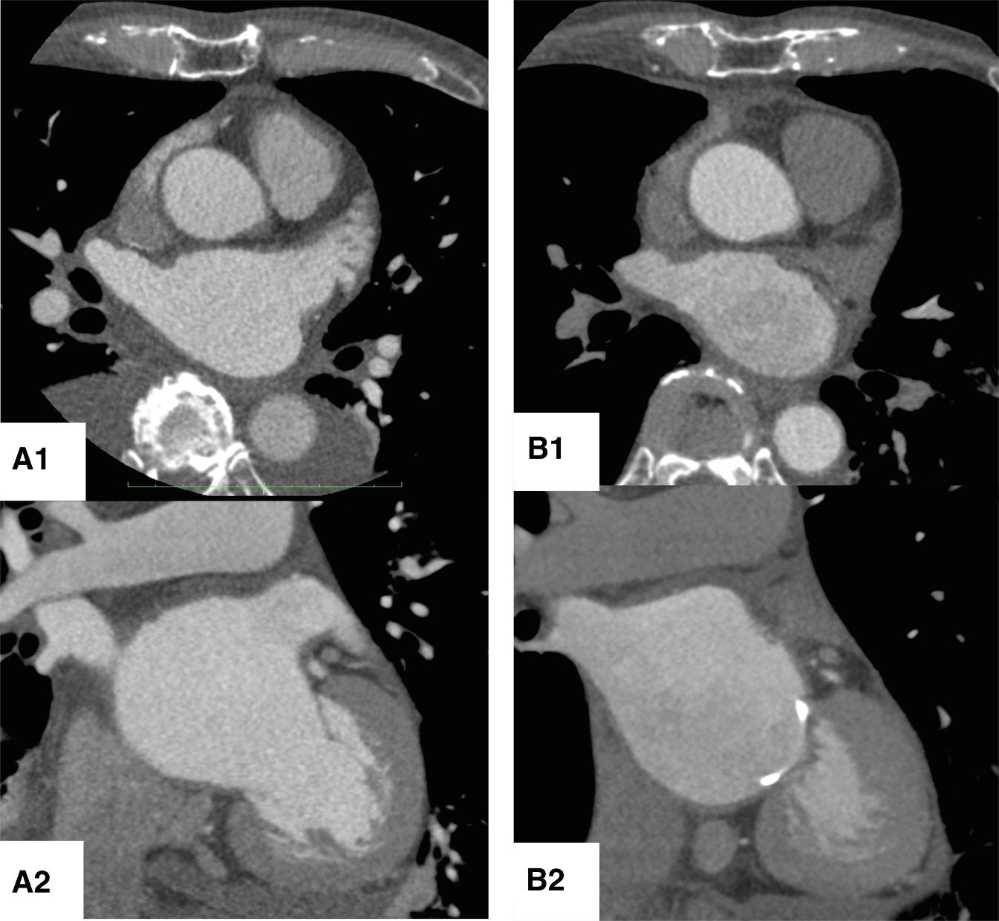
出典: Nakamura Y, et al. JTCVS Tech 2026;36:102268. doi:10.1016/j.xjtc.2026.102268. CC BY-NC-ND 4.0（原図を改変せず掲載）。
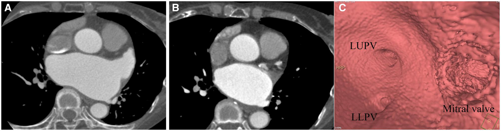
出典: Nakayama T, et al. Interdiscip Cardiovasc Thorac Surg 2025;40(10):ivaf172. doi:10.1093/icvts/ivaf172. CC BY-NC 4.0（原図を改変せず掲載）。
8.4 中隔心筋切除 — 2つの到達路
HOCM に対するロボット中隔心筋切除には、経大動脈と経僧帽弁の2つの道がある。
経大動脈（5.4節）は RAVR の副産物で、 弁を切除した後の LVOT が同軸に見えるのが利点。 大動脈弁に病変がある症例に自然に適合する。
経僧帽弁（Chicago / AlJamal・Balkhy ら、MMCTS）は 僧帽弁病変を併せ持つ HOCM に適する。54歳女性、 中隔厚 2.46 cm、弁輪拡大＋後尖逸脱による内因性の高度MR＋SAM、 LVOT平均圧較差 55 mmHg・最大 123 mmHg の症例：
- 中隔を明瞭に見るため、あえて標準の endoaortic balloon ではなく 経胸壁 Chitwood クランプを選択した（大動脈基部を完全に減圧するため）。 順行性＋逆行性心筋保護（内頸静脈から冠静脈洞カテーテル）
- 心膜牽引に加え、横隔膜中心腱の前内側・中内側・後内側の3点に 3-0 Prolene の牽引糸を置いて心膜/右房の展開を改善
- CO2 を 2 L/分で術野に flood
- Sondergaard 溝から大きく左房切開。まず僧帽弁を評価し、 A2・P2 の長軸長を測って coaptation を記録しておく
- 内側trigone から外側trigone まで前尖を大きく切開し、 弁輪側に 2 mm の cuff を残す（後の再建のため）
- リトラクターを再配置してこの切開越しに心室中隔を展開して心筋切除
- 切除後、0.8 mm 幅の極薄ウシ心膜ストリップを用いて 4-0 Prolene の連続で前尖を再建
- 加圧生食テストで coaptation を確認。本例では後尖に2組の人工腱索（CV-4 ePTFE）を かけて coaptation を後方へ移動させ、 34 mm セミリジッド部分リング（Simulus）を trigone–trigone に 3-0 Prolene の連続マットレスで
結果：MRなし・LVOT閉塞なし、平均圧較差 55 → 5 mmHg、術後4日で退院、 3ヶ月後に症状完全消失。
なお NYU（Loulmet ら）は前尖を離断せずに僧帽弁口から中隔心筋切除を行っており （4.3節）、これは SAM 予防のための小規模な切除という位置づけで、 上記の HOCM に対する大きな切除とは目的が異なる。
8.5 心表面リード（CRT）
心内膜側リードの留置が解剖学的理由で失敗した症例の左室心表面リード留置は、 robotic の実用的な適応の1つである。
University of Chicago の再手術シリーズでは、心表面群45例のうち 左室リード留置/交換が7例を占めていた。 また Podgorsek らは da Vinci SP（単孔式）を心臓外科で初めて用いた症例として、 69歳男性（CABG既往、虚血性心筋症、心内膜リード留置が解剖学的理由で失敗）に対する 4 cm 左前方小開胸からの左室心表面リード留置を報告している （詳細は 9.1節）。
8.6 再手術・その他
再手術（4.5節）に加えて、University of Chicago の 105例には 心膜切除 4例、ロボットVT アブレーション、右室生検、心筋 bridge の unroofing が 含まれている。robotic のレパートリーは、 心内 → 心表面 → 電気生理へと横に広がりつつある。
9. 展望
9.1 単孔式（da Vinci SP）
心臓外科での臨床応用はまだ症例報告の段階である。
Podgorsek らの症例（69歳男性、CABG既往、心内膜CRTリード留置が失敗）では、 da Vinci SP を選んだ理由が2つ明示されている — (i) 既存の癒着剥離のリスクを最小化する、(ii) 開存する左内胸動脈を守る。 小開胸を行う前提だったので、新しいSPプラットフォームを使うことにした。
手技：左肺を虚脱させ、第4肋間に 4 cm 左前方開胸、左胸腔へ。 癒着を剥離して小さい Alexis soft tissue retractor を入れ、さらに剥離。 da Vinci SP をドッキングし、ロボット補助で心膜を開け、 心膜牽引糸2本を上下の肋間から外へ。 左室前面の基部に Medtronic CapSure Epi MP 双極ステロイド溶出リードを留置し、 4-0 Cardionyl で固定。経過良好。
冠動脈側では、Bonatti が Stein らの実験研究（人屍体2体・生体ブタ2頭で da Vinci SP による両側IMA採取）へのエディトリアルで論点を整理している。
- 左肋骨弓下の1切開からドッキングし、全実験で両側IMAを採取できた。 ドッキング 14〜21分、両側IMA採取 65〜125分。 著者らは小開胸経由より技術的に容易と結論している
- Bonatti の問い：「25 mm のポート創1本は、8 mm のポート創3本より本当に良いのか」。 3創なら外傷が分散し、疼痛も胸壁に分散する。 単孔創からの内容の脱出（herniation）の可能性も残る。 少なくとも確実な創閉鎖が保証されねばならない
- Bonatti の提案：MIDCAB にとどまらず、このモデルで TECAB を開発すべきである。 「TECAB はロボット技術でしか成立しない数少ない低侵襲心臓手術の1つであり、 標準的な胸腔鏡器械での試みは本質的に失敗している」
なお robotic IMA 採取そのものの利点を Bonatti は次のように要約している — 「術者が胸腔内に完全に没入し、内胸動脈を全長にわたって採取できる」。 古典的なMIDCABやMICS-CABGでは、小開胸から特殊な開創器や挙上器具を使って採取するため 比較的外傷的で、特にLIMAへの視軸が接線方向になり、 遠位端まで到達できず、グラフト長が足りなくなるリスクがある。
9.2 国産機 hinotori
hinotori™（メディカロイド）による両側内胸動脈採取の人屍体での第1例が Algoet / Oosterlinck ら（KU Leuven）から報告されている（Innovations 2026）。 本文は購読誌のため未取得であり、 本レビューではタイトルに示された事実（人屍体1体での両側IMA採取が世界初）のみを記す。
この報告の意義は、6.7節の文脈にある。 欧州では MDR により da Vinci の心臓外科用付属品が撤退し、 TECAB がほとんど行えなくなった。 代替プラットフォームの参入は、器材供給の単一障害点を解消しうる。 Chicago の Nisivaco らも「他のロボットプラットフォームの市場参入は これらの手技の継続的な進歩と普及にとって励みになる」と明記している。
9.3 AR / MR・シミュレーション
拡張現実・複合現実
Sarantopoulos らの narrative review（PubMed 開設〜2025年7月、14研究）は 心臓外科における AR/MR を5領域に整理している。
| 領域 | 現状 |
|---|---|
| 術前計画・患者個別モデリング | MR が低侵襲手術と弁手技の空間的方向づけと計画を改善 |
| 術中ナビゲーション・可視化 | AR が標的同定と解釈を改善。前臨床でのオーバーレイ誤差は約 5 mm |
| 生理学的/機能的ガイダンス | サーモグラフィックARが生体内で虚血を検出（侵襲的温度測定と強い相関） |
| ロボット統合・ワークフロー最適化 | AR ガイド下のポート配置と段階的なロボット導入がTECABの実行可能性を支持 |
| AR ベースの早期リハビリテーション | — |
著者らの優先課題は、変形・動きを補償するレジストレーション、 ロボットプラットフォームとの人間工学的統合、 手術効率と患者アウトカムに検出力を持たせた多施設試験である。 つまりまだ「使える」段階ではない。
本レビューの文脈で最も直接的なのはAR ガイド下のポート配置である。 4.1節で見た 「わずか数センチが手術の難易度を分ける」という問題、 6.2節の "precision incision" の3座標、 7.1節の dual-camera 戦略 — これらはすべて「術前画像から最適なポート位置を決める」という同じ問題を、 それぞれ手作業のマーキングで解いている。AR はここに直接効きうる。
シミュレーション
低コスト化が実際に進んでいる。AlJamal / Balkhy らの TECAB シミュレータは ブタ心臓を段ボール箱に入れ、側面に3つ穴を開けて TECAB のポート配置と 人間工学を模したものである。4本のロボットポートを da Vinci Si にドッキングし、 7 cm の 7-0 モノフィラメントで残存グラフトを使って LAD に吻合する。
| 指標 | 数値 |
|---|---|
| コスト | 1セッション 20ドル |
| 組み立て | 20分 |
| 1セッションあたりの練習吻合数 | 3〜4吻合 |
| 参加者 | 各段階の心臓外科医7名（うち3名がアンケートに回答） |
回答者は「設置が容易」「吻合の練習が現実的」「自信の獲得に役立った」に 強く同意した。proof of concept の段階だが、 3.7節で見たとおり 要素技能の mastery は 30〜50分・12回以下で到達しうるのだから、 律速は費用でも時間でもなく、機会の確保である。 20ドルの箱がその律速を外しうる。
Atroshchenko らも同じ結論に達している — 「資源とインフラを持つ少数のセンターに訓練を集約し、 レジデント・フェロー・術者のコミュニティ全体に提供する方が現実的だろう。 その方が持続可能で、方法論と結果の均質性も担保される」。
9.4 何が足りないか
本レビューを通して繰り返し現れた欠落を、章をまたいで整理する。
| 欠落 | 具体的に何が無いか | どの章 |
|---|---|---|
| 長期成績 | RAVR は2020年開始で長期耐久性データがない。複合弁も同様 | 5.8 / 7.6 |
| ランダム化比較 | ほぼ全てが単群コホートか傾向スコアマッチング。RAVR vs TAVR の比較も背景が揃っていない（二尖弁 46.5% vs 13.8%） | 5.6 |
| ラーニングカーブの標準化 | NLC が 23〜138例と幅広く、指標の定義が研究ごとに違う。CUSUM の峰も総症例数に影響される | 3.7 |
| 器材の供給 | EndoWrist stabilizer と左房リトラクターの供給停止。欧州MDRで class III 化。実行可能性が単一メーカーに依存 | 6.7 |
| 弁＋冠動脈のエビデンス | 症例報告と8例の小シリーズのみ。施設間で立場が正反対 | 7.4 |
| 左心耳閉鎖の確実性 | 縫合閉鎖 24%・クリップ 26.7% が不完全。術後CTなしには分からない | 8.3 |
| 性差 | ロボット群の女性比率 27% vs 正中群 43%。適応の差ではなく紹介パターンの差と考えられている | 4.1 |
| AR/MRの臨床実装 | 14研究のみ。オーバーレイ誤差 5 mm、多施設試験なし | 9.3 |
| 単孔式の心臓応用 | 症例報告と屍体実験のみ。25 mm 単孔 vs 8 mm×3 の優劣は未解決 | 9.1 |
最後に、本レビューが繰り返し確認した構造的な事実を1つ挙げておく。
優れた成績を報告している施設は、例外なく「その術式の前に別の術式で大量の経験を積んでいる」。
- WVU は RAVR 開発前にロボット僧帽弁 1,000例超
- Chicago は 2013年開始だが、術者は2006年からロボット心臓手術の経験があり、 再手術症例を早期から統合できた
- NYU は 1998年（Loulmet のパリでの世界初例）から四半世紀、 かつ2術者体制が弁下手技の拡大を可能にした
- Cleveland Clinic は 2,400例超の経験からポート位置を段階的に外側へ移した
- 台湾・オーストラリアが WVU の指導なしに RAVR を再現できたのは、 胸腔鏡下心臓手術とロボット僧帽弁形成の土台があったからである
STS の Phase 0–IV（3.2節〜3.6節）は、 この観察を制度化したものと読める。 技術は移転できるが、順序は飛ばせない。
付録A 動画一覧（術式別）
本レビューで参照した手技動画。MMCTS は tutorial ページ、それ以外は論文ページ（DOI）に 動画が埋め込まれている。
導入・訓練
| 内容 | リンク |
|---|---|
| ロボットLIMA採取（Video 1）／off-pump TECAB（Video 2）／ロボット僧帽弁形成（Video 3） | Halkos ら, Ann Thorac Surg 2025 |
僧帽弁
| 内容 | リンク |
|---|---|
| 全11段階の映像アトラス（患者選択と危険な落とし穴／術中TEE／マーキングと体位／大腿露出と胸壁切開／CPBの準備／心房切開と弁の評価／三角切除／人工腱索／弁輪縫縮／power injector による弁のテスト／最終手順） | Mick ら, JTCVS Tech 2023 |
| Barlow病に対する複雑形成（前尖人工腱索＋P2切除＋sliding＋交連形成） | Issa ら, JTCVS Tech 2023 |
| MAC＋SAM高リスク例（@3min＝MAC切除、@14min35sec＝経僧帽弁中隔心筋切除） | Loulmet ら, JTCVS Tech 2024 |
| 体位・マーキング・ポート配置（男性） | Cullen ら, MMCTS 2069 |
| 体位・マーキング・ポート配置（女性） | Cullen ら, MMCTS 2068 |
| semi-continuous 3本縫合による弁輪縫縮 | Cullen ら, MMCTS 2077 |
| 四角切除＋双方向 sliding valvuloplasty | Cullen ら, MMCTS 2109 |
| 弁下手技（乳頭筋移動・二次腱索切離ほか） | Dorsey ら, JTCVS Tech 2023 |
| TEER失敗後のクリップ抜去＋再形成 | DeLay ら, JTCVS Tech 2023 |
| 再手術：癒着剥離（前回正中×2・前回ロボット×1）＋複雑再形成 | Amabile ら, MMCTS 1766 |
| 再手術（心内・心表面）の全体像 | AlJamal ら, JTCVS Struct Endovasc 2025 |
| 連続 wrapping 縫合による弁輪縫縮 | Noda ら, ICVTS 2025 |
大動脈弁（RAVR）
| 内容 | リンク |
|---|---|
| RAVR＋大動脈基部拡大（modified Nicks、3症例） | Darehzereshki ら, Ann Cardiothorac Surg 2025 |
| rapid deployment 弁による完全内視鏡下AVR＋僧帽弁形成 | Kitahara ら, MMCTS 2059 |
冠動脈（TECAB / MIDCAB）
| 内容 | リンク |
|---|---|
| 心拍動下 3枝TECAB（BITA、後壁 "dark side" 標的2本の sequential 吻合） | Nisivaco ら, JTCVS Tech 2026 |
| 多枝 off-pump TECAB の手技 | Balkhy, J Vis Surg 2025 |
| Cx領域の展開（pledget付きGore-Texで下側壁を吊り上げる） | Bonatti ら, Ann Cardiothorac Surg 2024 |
| 完全内視鏡下の末梢吻合（心停止・エンドバルーン） | Bonatti ら, Ann Cardiothorac Surg 2024 |
複合弁・同時手術
| 内容 | リンク |
|---|---|
| bilateral アプローチ：左胸TECAB（Si）→ 右胸僧帽弁形成（Xi） | Arai ら, JTCVS Tech 2026 |
| ロボット僧帽弁＋三尖弁形成の手技 | Rowse ら, JTCVS Open 2024 |
| dual-camera による完全内視鏡下二弁手術（僧帽弁置換・左心耳血栓摘出・乳頭状線維弾性腫切除） | Goto ら, Cureus 2025 |
| 三尖弁形成＋両心房 CryoMAZE（完全内視鏡） | Amabile ら, MMCTS 1861 |
Others
| 内容 | リンク |
|---|---|
| 超音波吸引器（Sonopet）による粘液腫切除 | Nakamura ら, JTCVS Tech 2025 |
| 閉塞的左心耳閉鎖（反転＋巾着縫合＋2層閉鎖） | Nakamura ら, JTCVS Tech 2026 |
| AtriClip Pro2 による心表面左心耳閉鎖 | Baudo ら, MMCTS 1913 |
| 心表面クリップの不完全閉鎖（CT評価） | Hirayama ら, Ann Thorac Surg Short Rep 2026 |
| 心内膜縫合閉鎖の "speech bubble" サイン | Nakayama ら, ICVTS 2025 |
| 経僧帽弁中隔心筋切除＋僧帽弁形成（HOCM） | AlJamal ら, MMCTS 1812 |
付録B 略語集
| 略語 | 展開 | 和訳 |
|---|---|---|
| ACT | activated clotting time | 活性化凝固時間 |
| AF | atrial fibrillation | 心房細動 |
| AR / AI | aortic regurgitation / insufficiency | 大動脈弁閉鎖不全 |
| AR（工学） | augmented reality | 拡張現実 |
| ARE | aortic root enlargement | 大動脈基部拡大 |
| AS | aortic stenosis | 大動脈弁狭窄 |
| ASD | atrial septal defect | 心房中隔欠損 |
| AV groove | atrioventricular groove | 房室溝 |
| AVR | aortic valve replacement | 大動脈弁置換 |
| BITA | bilateral internal thoracic arteries | 両側内胸動脈 |
| BSA | body surface area | 体表面積 |
| CABG | coronary artery bypass grafting | 冠動脈バイパス術 |
| Com–Com | commissure-to-commissure | 交連間距離 |
| CPB | cardiopulmonary bypass | 人工心肺 |
| CTA | computed tomography angiography | CT血管造影 |
| CUSUM | cumulative sum | 累積和（学習曲線の解析法） |
| CRT | cardiac resynchronization therapy | 心臓再同期療法 |
| Cx / LCX | circumflex coronary artery | 左回旋枝 |
| ECG-CT | ECG-gated cardiac CT | 心電図同期心臓CT |
| EF | ejection fraction | 駆出率 |
| HCM / HOCM | (obstructive) hypertrophic cardiomyopathy | （閉塞性）肥大型心筋症 |
| HCR | hybrid coronary revascularization | ハイブリッド冠血行再建 |
| ICS | intercostal space | 肋間 |
| IPTW | inverse probability of treatment weighting | 逆確率重み付け |
| ITA / IMA | internal thoracic / mammary artery | 内胸動脈 |
| LAA / LAAC | left atrial appendage (closure) | 左心耳（閉鎖） |
| LAD | left anterior descending artery | 左前下行枝 |
| LITA / LIMA | left internal thoracic / mammary artery | 左内胸動脈 |
| LOM | ligament of Marshall | Marshall靱帯 |
| LVOT | left ventricular outflow tract | 左室流出路 |
| MAC | mitral annular calcification | 僧帽弁輪石灰化 |
| MACCE | major adverse cardiac and cerebrovascular events | 主要心脳血管イベント |
| mCAD | minimum coronary annular distance | 冠動脈–弁輪最短距離 |
| MDR | Medical Device Regulation (EU 2017/745) | 欧州医療機器規則 |
| mGEARS | modified global evaluative assessment of robotic skills | ロボット手技の総合評価尺度（改変版） |
| MICS | minimally invasive cardiac surgery | 低侵襲心臓手術 |
| MIDCAB | minimally invasive direct coronary artery bypass | 小開胸直視下冠動脈バイパス |
| MR（画像） | mixed reality | 複合現実 |
| MR（弁） | mitral regurgitation | 僧帽弁閉鎖不全 |
| M-TEER | mitral transcatheter edge-to-edge repair | 経カテーテル僧帽弁接合部形成 |
| MVr / MVR | mitral valve repair / replacement | 僧帽弁形成／置換 |
| NLC | number of procedures to overcome the learning curve | 学習曲線克服に要する症例数 |
| O/E | observed to expected ratio | 実測／予測比 |
| OFCCJ | osteophyte of the first costochondral joint | 第1肋軟骨結合の骨棘 |
| OM | obtuse marginal branch | 鈍縁枝 |
| OPCAB | off-pump coronary artery bypass | 心拍動下冠動脈バイパス |
| PAL | posterior annular length | 後方弁輪長 |
| PCI | percutaneous coronary intervention | 経皮的冠動脈形成術 |
| PDA / PLB | posterior descending artery / posterolateral branch | 後下行枝／後側壁枝 |
| PI | pulsatility index | 拍動係数（グラフト流量評価） |
| PPM | patient–prosthesis mismatch | 患者–人工弁不適合 |
| PVL | paravalvular leak | 弁周囲逆流 |
| RA-MIDCAB | robotic-assisted MIDCAB | ロボット支援MIDCAB |
| RAVR | robotic aortic valve replacement | ロボット大動脈弁置換 |
| RITA / RIMA | right internal thoracic / mammary artery | 右内胸動脈 |
| SAM | systolic anterior motion | 僧帽弁前尖の収縮期前方運動 |
| SAVR | surgical aortic valve replacement | 外科的大動脈弁置換 |
| SLDA | single-leaflet device attachment | 片尖のみへのデバイス付着 |
| SP | single-port (da Vinci SP) | 単孔式 |
| STS | The Society of Thoracic Surgeons | 米国胸部外科学会 |
| SVC / IVC | superior / inferior vena cava | 上／下大静脈 |
| TAVR | transcatheter aortic valve replacement | 経カテーテル大動脈弁置換 |
| TBS | time-based score | 時間ベーススコア |
| TEAVR | totally endoscopic aortic valve replacement | 完全内視鏡下大動脈弁置換 |
| TECAB | totally endoscopic coronary artery bypass | 完全内視鏡下冠動脈バイパス |
| TEE / TTE | transesophageal / transthoracic echocardiography | 経食道／経胸壁心エコー |
| TEER | transcatheter edge-to-edge repair | 経カテーテル接合部形成 |
| TR / TVr | tricuspid regurgitation / valve repair | 三尖弁閉鎖不全／形成 |
| TTF | transit-time flow (measurement) | 通過時間流量測定 |
| UPE | unilateral pulmonary edema | 片側肺水腫 |
| VRA | vertical right atriotomy | 垂直右房切開 |
付録C 図表一覧（原典出典）
本レビューに掲載した図は46点、すべて原典論文の Figure をそのまま切り出したものである。 自作の概念図・模式図は一切含まない。動画からのコマ取りも行っていない （Mick らの「steps to success」は誌面図版に見えるが実体は Video 1–11 の1コマ目であるため、 本文には掲載せず付録Aの動画リンクとして扱った）。
画像ファイルは output/figures/ に rt_ 接頭辞で格納している。
| 図 | 掲載節 | 出典 |
|---|---|---|
| 図 4-1. 標準体格のポート配置（Fig 1） | 4.1 | Hage A, Malas T, Gillinov M. JTCVS Tech 2025;29:9-11. doi:10.1016/j.xjtc.2024.10.001 ／ CC BY-NC-ND 4.0（図は Cleveland Clinic © 2024） |
| 図 4-2. きわめて痩せた小柄な患者での修正配置（Fig 2） | 4.1 | Hage A, Malas T, Gillinov M. JTCVS Tech 2025;29:9-11. doi:10.1016/j.xjtc.2024.10.001 ／ CC BY-NC-ND 4.0（図は Cleveland Clinic © 2024） |
| 図 4-3. 左回旋枝と僧帽弁輪の位置関係（Fig 4） | 4.6 | Czesla M, et al. Ann Cardiothorac Surg 2013;2(6):849-852. doi:10.3978/j.issn.2225-319X.2013.07.26 ／ Ann Cardiothorac Surg（AME） |
| 図 5-1. 体位（Fig 1） | 5.2 | Wei LM, Badhwar V. Ann Cardiothorac Surg 2025;14(3):228-234. doi:10.21037/acs-2025-ravr-12 ／ CC BY-NC-ND 4.0 |
| 図 5-2. ポート配置とドッキング（Fig 2） | 5.2 | Wei LM, Badhwar V. Ann Cardiothorac Surg 2025;14(3):228-234. doi:10.21037/acs-2025-ravr-12 ／ CC BY-NC-ND 4.0 |
| 図 5-3. 大動脈切開（Fig 3） | 5.3 | Wei LM, Badhwar V. Ann Cardiothorac Surg 2025;14(3):228-234. doi:10.21037/acs-2025-ravr-12 ／ CC BY-NC-ND 4.0 |
| 図 5-4. ロボット弁切除（Fig 4） | 5.3 | Wei LM, Badhwar V. Ann Cardiothorac Surg 2025;14(3):228-234. doi:10.21037/acs-2025-ravr-12 ／ CC BY-NC-ND 4.0 |
| 図 5-5. 弁輪の脱灰とデブライドメント（Fig 5） | 5.3 | Wei LM, Badhwar V. Ann Cardiothorac Surg 2025;14(3):228-234. doi:10.21037/acs-2025-ravr-12 ／ CC BY-NC-ND 4.0 |
| 図 5-6. 人工弁の植込みと結紮（Fig 6） | 5.3 | Wei LM, Badhwar V. Ann Cardiothorac Surg 2025;14(3):228-234. doi:10.21037/acs-2025-ravr-12 ／ CC BY-NC-ND 4.0 |
| 図 5-7A. 大動脈切開の閉鎖（Fig 7A） | 5.3 | Wei LM, Badhwar V. Ann Cardiothorac Surg 2025;14(3):228-234. doi:10.21037/acs-2025-ravr-12 ／ CC BY-NC-ND 4.0 |
| 図 5-7B. 閉鎖の完成と順行性テスト（Fig 7B） | 5.3 | Wei LM, Badhwar V. Ann Cardiothorac Surg 2025;14(3):228-234. doi:10.21037/acs-2025-ravr-12 ／ CC BY-NC-ND 4.0 |
| 図 5-8. 非冠尖弁輪に沿った大動脈切開の延長（Fig 8） | 5.4 | Wei LM, Badhwar V. Ann Cardiothorac Surg 2025;14(3):228-234. doi:10.21037/acs-2025-ravr-12 ／ CC BY-NC-ND 4.0 |
| 図 5-9. 合成ポリエステル（Dacron）パッチの裁断（Fig 9） | 5.4 | Wei LM, Badhwar V. Ann Cardiothorac Surg 2025;14(3):228-234. doi:10.21037/acs-2025-ravr-12 ／ CC BY-NC-ND 4.0 |
| 図 5-10. 基部拡大の起点（Fig 10） | 5.4 | Wei LM, Badhwar V. Ann Cardiothorac Surg 2025;14(3):228-234. doi:10.21037/acs-2025-ravr-12 ／ CC BY-NC-ND 4.0 |
| 図 5-11. 基部拡大の完成（Fig 11） | 5.4 | Wei LM, Badhwar V. Ann Cardiothorac Surg 2025;14(3):228-234. doi:10.21037/acs-2025-ravr-12 ／ CC BY-NC-ND 4.0 |
| 図 6-1. RA-MIDCAB と TECAB の切開（Fig 3） | 6.2 | Algoet M, et al. Ann Cardiothorac Surg 2024;13(5):397-408. doi:10.21037/acs-2023-rcabg-0210 ／ CC BY-NC-ND 4.0 |
| 図 6-2. 弁手術（僧帽弁・大動脈弁）の切開（Fig 4） | 6.2 | Algoet M, et al. Ann Cardiothorac Surg 2024;13(5):397-408. doi:10.21037/acs-2023-rcabg-0210 ／ CC BY-NC-ND 4.0 |
| 図 6-3. “precision incision” の3座標（Fig 1） | 6.2 | Wertan MC, et al. Ann Cardiothorac Surg 2024;13(5):442-451. doi:10.21037/acs-2024-rcabg-0034 ／ CC BY-NC-ND 4.0 |
| 図 6-4. 座標1 — 長軸上の位置決め（Fig 2） | 6.2 | Wertan MC, et al. Ann Cardiothorac Surg 2024;13(5):442-451. doi:10.21037/acs-2024-rcabg-0034 ／ CC BY-NC-ND 4.0 |
| 図 6-5. 座標3 — 標的に応じた微調整（Fig 3） | 6.2 | Wertan MC, et al. Ann Cardiothorac Surg 2024;13(5):442-451. doi:10.21037/acs-2024-rcabg-0034 ／ CC BY-NC-ND 4.0 |
| 図 6-6. 3本のポートの縦一直線配置（Fig 4） | 6.2 | Wertan MC, et al. Ann Cardiothorac Surg 2024;13(5):442-451. doi:10.21037/acs-2024-rcabg-0034 ／ CC BY-NC-ND 4.0 |
| 図 6-7A. 後方（横隔神経後方）の心膜切開（Fig 5A） | 6.4 | Wertan MC, et al. Ann Cardiothorac Surg 2024;13(5):442-451. doi:10.21037/acs-2024-rcabg-0034 ／ CC BY-NC-ND 4.0 |
| 図 6-7B. 前方心膜切開と LAD 標的の同定（Fig 5B） | 6.4 | Wertan MC, et al. Ann Cardiothorac Surg 2024;13(5):442-451. doi:10.21037/acs-2024-rcabg-0034 ／ CC BY-NC-ND 4.0 |
| 図 6-8. LIMA 採取（分枝のクリップ）（Fig 6） | 6.4 | Wertan MC, et al. Ann Cardiothorac Surg 2024;13(5):442-451. doi:10.21037/acs-2024-rcabg-0034 ／ CC BY-NC-ND 4.0 |
| 図 6-9. precision incision と上方ドレーン（Fig 7） | 6.4 | Wertan MC, et al. Ann Cardiothorac Surg 2024;13(5):442-451. doi:10.21037/acs-2024-rcabg-0034 ／ CC BY-NC-ND 4.0 |
| 図 6-10A. OCTOPUS NUVO スタビライザー（術野の2部品）（Fig 8A） | 6.4 | Wertan MC, et al. Ann Cardiothorac Surg 2024;13(5):442-451. doi:10.21037/acs-2024-rcabg-0034 ／ CC BY-NC-ND 4.0 |
| 図 6-10B. 胸腔内での連結（Fig 8B） | 6.4 | Wertan MC, et al. Ann Cardiothorac Surg 2024;13(5):442-451. doi:10.21037/acs-2024-rcabg-0034 ／ CC BY-NC-ND 4.0 |
| 図 6-11. SaddleLoop による近位 LAD のスネア（Fig 9） | 6.4 | Wertan MC, et al. Ann Cardiothorac Surg 2024;13(5):442-451. doi:10.21037/acs-2024-rcabg-0034 ／ CC BY-NC-ND 4.0 |
| 図 7-1. 複合弁手術のセットアップ（Fig 1） | 7.1 | Wei LY, et al. Ann Cardiothorac Surg 2025;14(3):210-217. doi:10.21037/acs-2024-ravr-0185 ／ CC BY-NC-ND 4.0 |
| 図 7-2. 3本の牽引糸による大動脈弁の展開（Fig 2） | 7.1 | Wei LY, et al. Ann Cardiothorac Surg 2025;14(3):210-217. doi:10.21037/acs-2024-ravr-0185 ／ CC BY-NC-ND 4.0 |
| 図 7-3. dual-camera 戦略（Fig 2） | 7.1 | Goto Y, et al. Cureus 2025;17(6):e86081. doi:10.7759/cureus.86081 ／ CC BY 4.0 |
| 図 7-4. カメラポートによる大動脈弁の見え方の差（Fig 3） | 7.1 | Goto Y, et al. Cureus 2025;17(6):e86081. doi:10.7759/cureus.86081 ／ CC BY 4.0 |
| 図 7-5. bilateral アプローチ①：左胸 TECAB のポート（Fig 1） | 7.4 | Arai A, Kitahara H, Balkhy HH. JTCVS Tech 2026;35:102169. doi:10.1016/j.xjtc.2025.102169 ／ CC BY-NC-ND 4.0 |
| 図 7-6. bilateral アプローチ②：右胸 僧帽弁形成のポート（Fig 2） | 7.4 | Arai A, Kitahara H, Balkhy HH. JTCVS Tech 2026;35:102169. doi:10.1016/j.xjtc.2025.102169 ／ CC BY-NC-ND 4.0 |
| 図 8-1. 右房切開の向き（Fig 1） | 8.1 | Kim K, et al. JTCVS Tech 2024;28:73-81. doi:10.1016/j.xjtc.2024.05.022 ／ CC BY-NC-ND 4.0 |
| 図 8-2. 内視鏡の角度と視軸（Fig 2） | 8.1 | Kim K, et al. JTCVS Tech 2024;28:73-81. doi:10.1016/j.xjtc.2024.05.022 ／ CC BY-NC-ND 4.0 |
| 図 8-3. 実際の術野での rim の見え方（Fig 3） | 8.1 | Kim K, et al. JTCVS Tech 2024;28:73-81. doi:10.1016/j.xjtc.2024.05.022 ／ CC BY-NC-ND 4.0 |
| 図 8-4. 超音波吸引器（Sonopet iQ）の適用（Fig 1） | 8.2 | Nakamura Y, et al. JTCVS Tech 2025;29:100-102. doi:10.1016/j.xjtc.2024.10.005 ／ CC BY-NC-ND 4.0 |
| 図 8-5. 吸引前後の粘液腫（Fig 2） | 8.2 | Nakamura Y, et al. JTCVS Tech 2025;29:100-102. doi:10.1016/j.xjtc.2024.10.005 ／ CC BY-NC-ND 4.0 |
| 図 8-6. ロボット AF アブレーションの作業ポート評価（Fig 1） | 8.3 | Agnino A, et al. J Clin Med 2024;13(6):1563. doi:10.3390/jcm13061563 ／ CC BY 4.0 |
| 図 8-7. Marshall 靱帯の剥離（Fig 2） | 8.3 | Agnino A, et al. J Clin Med 2024;13(6):1563. doi:10.3390/jcm13061563 ／ CC BY 4.0 |
| 図 8-8. 左心耳基部の焼灼（Fig 7） | 8.3 | Agnino A, et al. J Clin Med 2024;13(6):1563. doi:10.3390/jcm13061563 ／ CC BY 4.0 |
| 図 8-9. 完成した lesion set（Fig 8） | 8.3 | Agnino A, et al. J Clin Med 2024;13(6):1563. doi:10.3390/jcm13061563 ／ CC BY 4.0 |
| 図 8-10. 閉塞的左心耳閉鎖の手順（Fig 1） | 8.3 | Nakamura Y, et al. JTCVS Tech 2026;36:102268. doi:10.1016/j.xjtc.2026.102268 ／ CC BY-NC-ND 4.0 |
| 図 8-11. 術後 心電図同期CT による確認 | 8.3 | Nakamura Y, et al. JTCVS Tech 2026;36:102268. doi:10.1016/j.xjtc.2026.102268 ／ CC BY-NC-ND 4.0 |
| 図 8-12. “speech bubble” サイン | 8.3 | Nakayama T, et al. Interdiscip Cardiovasc Thorac Surg 2025;40(10):ivaf172. doi:10.1093/icvts/ivaf172 ／ CC BY-NC 4.0 |
著作権について 掲載した図はいずれも各出版社・著者が著作権を有する論文からの抜粋であり、 原典の手技を本文の記述と照合するための個人的な参照目的で引用している。 ライセンスは各図の出典行に明記した。再配布・二次利用は行わないこと。 臨床判断にあたっては必ず原典を参照すること。
引用文献
本レビューが参照した 75本（原著・総説・手技ビデオ論文）。 うち6本は購読誌で本文が入手できず、抄録に明記された内容のみを引用している （表中に※で明示）。
| # | 文献 | リンク |
|---|---|---|
| 1 | Agnino A, et al. Robotic-Assisted Epicardial Hybrid Ablation and Left Appendage Closure in Persistent Atrial Fibrillation: First European Experience. J Clin Med 2024;13(6). | DOI ・ PubMed |
| 2 | Algoet M, et al. Different styles in trocar placement in robotic-assisted beating heart coronary artery bypass grafting. Ann Cardiothorac Surg 2024;13(5):458-460. | DOI ・ PubMed |
| 3 | Algoet M, et al. How to advance from minimally invasive coronary artery bypass grafting to totally endoscopic coronary bypass grafting: challenges in Europe versus United States of America. Ann Cardiothorac Surg 2024;13(5):397-408. | DOI ・ PubMed |
| 4 | Algoet M, et al. First Case of Bilateral Internal Mammary Harvesting on a Human Cadaver Using the hinotori™ System. Innovations (Phila) 2026;21(1):90-91. ※抄録のみ引用（本文未取得） | DOI ・ PubMed |
| 5 | AlJamal YN, Kitahara H, Balkhy H. Robotic endoscopic transmitral septal myectomy and concomitant mitral valve repair for hypertrophic obstructive cardiomyopathy. Multimed Man Cardiothorac Surg 2023;2023. | MMCTS ・ DOI ・ PubMed |
| 6 | AlJamal YN, et al. Inexpensive and Easy to Set Up Robotic Cardiac Simulator Offers "Unlimited" Endoscopic Coronary Artery Bypass Grafting Experience: Proof of Concept. Innovations (Phila) 2023;18(5):419-423. ※抄録のみ引用（本文未取得） | DOI ・ PubMed |
| 7 | AlJamal YN, Nisivaco S, Balkhy HH. Robotic endoscopic cardiac surgery in the reoperative patient: Is it feasible?. JTCVS Struct Endovasc 2025;8:100079. | DOI ・ PubMed |
| 8 | Amabile A, et al. Redo mitral valve surgery: A totally endoscopic, robotic-assisted approach for adhesiolysis and complex repair. Multimed Man Cardiothorac Surg 2022;2022. | MMCTS ・ DOI ・ PubMed |
| 9 | Amabile A, et al. Totally endoscopic, robotic-assisted tricuspid valve repair and biatrial CryoMAZE. Multimed Man Cardiothorac Surg 2024;2024. | MMCTS ・ DOI ・ PubMed |
| 10 | Arai A, Kitahara H, Balkhy HH. Combined robotic totally endoscopic multivessel coronary artery bypass and mitral valve repair. JTCVS Tech 2026;35:102169. | DOI ・ PubMed |
| 11 | Atroshchenko GV, et al. Examining the learning curves in robotic cardiac surgery wet lab simulation training. Interdiscip Cardiovasc Thorac Surg 2024;40(1). | DOI ・ PubMed |
| 12 | Badhwar V, et al. The Society of Thoracic Surgeons Expert Consensus Pathway for Robotic Cardiac Surgical Training. Ann Thorac Surg 2026;121(5):1038-1048. | DOI ・ PubMed |
| 13 | Badhwar V, et al. Robotic-Assisted Transcatheter Aortic Valve Explantation and Aortic Valve Replacement. Ann Thorac Surg 2025;120(5):983-987. ※抄録のみ引用（本文未取得） | DOI ・ PubMed |
| 14 | Balkhy HH, AlJamal Y. Robotic multi-vessel off-pump totally endoscopic coronary artery bypass (TECAB) procedure: surgical technique. J Vis Surg 2025;11:21. | DOI ・ PubMed |
| 15 | Baudo M, et al. Robotic-assisted left atrial appendage occlusion. Multimed Man Cardiothorac Surg 2024;2024. | MMCTS ・ DOI ・ PubMed |
| 16 | Bejand EA, et al. Computed Tomography in Preoperative Planning of Minimally Invasive Valvular Heart Surgery: A Systematic Review of Mixed Evidence and Clinical Application. Eur J Cardiothorac Surg 2026;68(4). | DOI ・ PubMed |
| 17 | Bonatti J. Robotically assisted internal mammary artery harvesting-will single-port systems be useful?. Interdiscip Cardiovasc Thorac Surg 2024;38(6). | DOI ・ PubMed |
| 18 | Bonatti J, et al. How to perform distal anastomosis using a robotic platform: totally endoscopic coronary artery bypass. Ann Cardiothorac Surg 2024;13(4):382-384. | DOI ・ PubMed |
| 19 | Bonatti J, et al. Exposure technique for the circumflex artery territory in robotic totally endoscopic coronary artery bypass grafting. Ann Cardiothorac Surg 2024;13(5):452-454. | DOI ・ PubMed |
| 20 | Chen JW, Chi NH. Lateral approach in robotic aortic valve replacement: optimizing visualization from the orient and down under. Ann Cardiothorac Surg 2025;14(3):225-227. | DOI ・ PubMed |
| 21 | Cullen P, Malas T, Gillinov M. Robotic mitral valve repair: patient positioning and port placement in male patients. Multimed Man Cardiothorac Surg 2025;2025. | MMCTS ・ DOI ・ PubMed |
| 22 | Cullen P, Malas T, Gillinov M. Robotic mitral valve repair: patient positioning and port placement in female patients. Multimed Man Cardiothorac Surg 2025;2025. | MMCTS ・ DOI ・ PubMed |
| 23 | Cullen P, Malas T, Gillinov M. Robotic mitral annuloplasty using a semi-continuous three-suture technique with a flexible band. Multimed Man Cardiothorac Surg 2025;2025. | MMCTS ・ DOI ・ PubMed |
| 24 | Cullen P, Malas T, Gillinov M. Robotic mitral valve repair: quadrangular resection and bidirectional sliding valvuloplasty. Multimed Man Cardiothorac Surg 2025;2025. | MMCTS ・ DOI ・ PubMed |
| 25 | Czesla M, et al. Safeguards and pitfalls in minimally invasive mitral valve surgery. Ann Cardiothorac Surg 2013;2(6):849-52. | DOI ・ PubMed |
| 26 | Daniel WT, et al. Lessons learned from robotic-assisted coronary artery bypass surgery: risk factors for conversion to median sternotomy. Innovations (Phila) 2012;7(5):323-7. | DOI ・ PubMed |
| 27 | Darehzereshki A, et al. Robotic aortic valve replacement and aortic root enlargement for optimal prosthesis selection. Ann Cardiothorac Surg 2025;14(3):238-240. | DOI ・ PubMed |
| 28 | DeLay K, et al. Complex robotic mitral valve redo repair after failed transcatheter edge-to-edge repair. JTCVS Tech 2023;22:99-100. | DOI ・ PubMed |
| 29 | Dorsey M, et al. Subvalvular techniques enhanced with endoscopic robotic mitral valve repair. JTCVS Tech 2023;22:23-27. | DOI ・ PubMed |
| 30 | Elsebaie A, et al. Defining the Learning Curve in Minimally Invasive Cardiac Surgery: A Systematic Review and Meta-Analysis. Ann Thorac Surg 2026;121(2):480-490. | DOI ・ PubMed |
| 31 | Gao W, et al. LncRNA SCIRT is downregulated in atherosclerosis and suppresses the proliferation of human aortic smooth muscle cells (HAOSMCs) by sponging miR-146a in cytoplasm. J Cardiothorac Surg 2021;16(1):324. | DOI ・ PubMed |
| 32 | Gillinov M, et al. Patient selection in robotic mitral valve surgery. Ann Cardiothorac Surg 2026;15(1):13. | DOI ・ PubMed |
| 33 | Goto Y, et al. Dual-Camera Port Setup Strategies for Totally Endoscopic Aortic and Mitral Valve Surgery. Cureus 2025;17(6):e86081. | DOI ・ PubMed |
| 34 | Hage A, Malas T, Gillinov M. Robotic mitral valve surgery in the very thin patient: Tips and tricks. JTCVS Tech 2025;29:9-11. | DOI ・ PubMed |
| 35 | Halkos ME, et al. Developing Proficiency in Robotic Cardiac Surgery. Ann Thorac Surg 2025;119(3):523-534. | DOI ・ PubMed |
| 36 | He P, et al. Osteophyte of the first costochondral joint is a reliable landmark to facilitate standardized robotic left internal mammary artery harvesting. JTCVS Tech 2025;29:56-64. | DOI ・ PubMed |
| 37 | Hirayama M, et al. Incidence and Determinants of Incomplete Left Atrial Appendage Occlusion During Robot-Assisted Mitral Valve Surgery. Ann Thorac Surg Short Rep 2026;4(1):97-101. | DOI ・ PubMed |
| 38 | Issa HMN, et al. Tricks and tips to facilitate robotic approach for mitral valve repair. JTCVS Tech 2023;22:84-85. | DOI ・ PubMed |
| 39 | Jonsson AA, Halkos ME. How to start a robotic coronary bypass grafting program: suggestions from an experienced robotic-assisted coronary surgeon. Ann Cardiothorac Surg 2024;13(5):436-438. | DOI ・ PubMed |
| 40 | Kawamoto N, et al. Robotic Mitral Valve Repair and Simultaneous On-Pump Coronary Artery Bypass Grafting to the Left Anterior Descending Artery. Ann Thorac Surg 2026. ※抄録のみ引用（本文未取得） | DOI ・ PubMed |
| 41 | Kim K, et al. Robotic repair of atrial septal defect: Pre-groove vertical right atriotomy approach. JTCVS Tech 2024;28:73-81. | DOI ・ PubMed |
| 42 | Kitahara H, et al. Robotic endoscopic aortic valve replacement with rapid deployment valve: technique and outcomes. Ann Cardiothorac Surg 2025;14(3):244-246. | DOI ・ PubMed |
| 43 | Kitahara H, et al. Robotic totally endoscopic rapid deployment aortic valve replacement and mitral valve repair. Multimed Man Cardiothorac Surg 2025;2025. | MMCTS ・ DOI ・ PubMed |
| 44 | Loulmet DF, Grossi EA. Two decades of experience with robotic mitral valve repair: What have we learned?. JTCVS Tech 2024;24:76-81. | DOI ・ PubMed |
| 45 | Loulmet DF, Hage A, Grossi EA. Robotic posterior bar decalcification and mitral repair in mitral annular calcification. Ann Cardiothorac Surg 2025;14(6):514-516. | DOI ・ PubMed |
| 46 | Loulmet DF, Hage A. Tackling MAC and other complex mitral valve repair scenarios through the lens of robotics. Ann Cardiothorac Surg 2026;15(1):10. | DOI ・ PubMed |
| 47 | Merwe J, Casselman F. Circumflex Coronary Artery Injury during Modern Mitral Valve Surgery-A Review of Current Concepts and Perspectives. Medicina (Kaunas) 2023;59(8). | DOI ・ PubMed |
| 48 | Mick SL, Kohlbacher B, Gillinov AM. Robotic mitral valve repair: The steps to success. JTCVS Tech 2023;22:49-52. | DOI ・ PubMed |
| 49 | Murtaza G, Wei L. Lateral access fully robotic aortic valve replacement "RAVR": from novel to normal. Ann Cardiothorac Surg 2025;14(3):192-201. | DOI ・ PubMed |
| 50 | Murtaza G, Badhwar V. Single incision right transaxillary robotic valve and coronary artery bypass grafting: a future therapy. Ann Cardiothorac Surg 2025;14(3):235-237. | DOI ・ PubMed |
| 51 | Nakamura Y, et al. Robotic myxoma resection using an ultrasonic aspirator system. JTCVS Tech 2025;29:100-102. | DOI ・ PubMed |
| 52 | Nakamura Y, et al. Endocardial obliterative left atrial appendage closure by inverted purse-string plication. JTCVS Tech 2026;36:102268. | DOI ・ PubMed |
| 53 | Nakayama T, et al. Speech bubble sign - insights regarding incomplete left atrial appendage closure via electrocardiography-synchronized computed tomography in robotic surgery cases. Interdiscip Cardiovasc Thorac Surg 2025;40(10). | DOI ・ PubMed |
| 54 | Nameghi FH, Ali JM. Simulation Training in Video-Assisted and Robotic-Assisted Cardiac Surgery: A Narrative Review. J Cardiovasc Dev Dis 2026;13(5). | DOI ・ PubMed |
| 55 | Nisivaco S, et al. Bilateral internal thoracic artery grafting in robotic beating-heart totally endoscopic coronary artery bypass: 10-year outcomes. Ann Cardiothorac Surg 2024;13(4):354-363. | DOI ・ PubMed |
| 56 | Nisivaco S, et al. Dark sides and warm rides: Is cardiopulmonary bypass necessary for grafting posterior wall targets in robotic totally endoscopic coronary bypass?. JTCVS Tech 2026;37:102310. | DOI ・ PubMed |
| 57 | Noda K, et al. Feasibility of robotic-assisted mitral ring annuloplasty using the continuous wrapping suture technique: A single-center experience. Interdiscip Cardiovasc Thorac Surg 2025;40(10). | DOI ・ PubMed |
| 58 | Noda K, et al. Totally endoscopic robotic repair of coronary sinus atrial septal defect with concomitant tricuspid annuloplasty. Gen Thorac Cardiovasc Surg Cases 2024;3(1):42. | DOI ・ PubMed |
| 59 | Palmen M, et al. Current state of the art and recommendations in robotic mitral valve surgery. Interact Cardiovasc Thorac Surg 2022;35(6). | DOI ・ PubMed |
| 60 | Patel NC, Macoskey AR. Complications and their management in robotic mitral valve surgery from the surgical assistant's perspective. Ann Cardiothorac Surg 2022;11(5):510-524. | DOI ・ PubMed |
| 61 | Pickering T, et al. Robotic aortic valve replacement with simultaneous ventricular septal myectomy: a minimally invasive solution. Ann Cardiothorac Surg 2025;14(3):241-243. | DOI ・ PubMed |
| 62 | Podgorsek B, Tremblay P, Ramzy D. Single-Port Robotic-Assisted Epicardial Lead Placement for Cardiac Resynchronization Therapy. Ann Thorac Surg Short Rep 2026;4(1):69-71. | DOI ・ PubMed |
| 63 | Qi SS, et al. Control of Port Site Bleeding With Liberal Use of Catheter Balloon Tamponade in Robotic Mitral Valve Surgery. Innovations (Phila) 2025;20(5):458-463. ※抄録のみ引用（本文未取得） | DOI ・ PubMed |
| 64 | . Commentator Discussion: Multimodal analgesia with parasternal plane block protocol within an enhanced recovery after cardiac surgery program decreases opioid use. JTCVS Open 2024;22:36-37. | DOI ・ PubMed |
| 65 | Rufa M, et al. A propensity matched comparison of robotic vs. traditional minimal access approach for mitral valve repair with concomitant cryoablation. J Thorac Dis 2023;15(12):6459-6474. | DOI ・ PubMed |
| 66 | Sarantopoulos A, et al. Augmented and Mixed Reality in Cardiac Surgery: A Narrative Review. J Clin Med 2026;15(3). | DOI ・ PubMed |
| 67 | Stelzmueller ME, et al. Pushing boundaries in cardiac surgery: minimally invasive mitral valve repair combined with tricuspid valve repair and/or other concomitant procedures. Front Cardiovasc Med 2024;11:1407591. | DOI ・ PubMed |
| 68 | Sutter FP, et al. Robotic-assisted coronary artery bypass grafting: how I teach it. Ann Cardiothorac Surg 2024;13(4):346-353. | DOI ・ PubMed |
| 69 | Takahashi Y, et al. Three-dimensional computed tomography analysis of the mitral annulus for mitral annuloplasty in 100 cases of robotic mitral valve repair. Front Cardiovasc Med 2024;11:1369801. | DOI ・ PubMed |
| 70 | Waldron C, et al. Concomitant Procedures in Robotic Mitral Valve Surgery. Semin Thorac Cardiovasc Surg 2025;37(3):233-239. ※抄録のみ引用（本文未取得） | DOI ・ PubMed |
| 71 | Wei LM, Badhwar V. Advancing robotic aortic valve replacement beyond isolated therapy: a platform for multivalve therapy. Ann Cardiothorac Surg 2025;14(3):228-234. | DOI ・ PubMed |
| 72 | Wei LY, et al. Robotic chordae shortening in mitral valve repair. Ann Cardiothorac Surg 2026;15(1):7. | DOI ・ PubMed |
| 73 | Wei LY, et al. Outcomes of robotic and endoscopic combined aortic and mitral valve surgery: experience from National Taiwan University Hospital. Ann Cardiothorac Surg 2025;14(3):210-217. | DOI ・ PubMed |
| 74 | Wertan MC, et al. Step-by-step technique of robotic-assisted minimally invasive direct coronary artery bypass. Ann Cardiothorac Surg 2024;13(5):442-451. | DOI ・ PubMed |
| 75 | Xue A, et al. How to implement a clinical robotic mitral valve surgery program. Ann Cardiothorac Surg 2022;11(5):504-509. | DOI ・ PubMed |